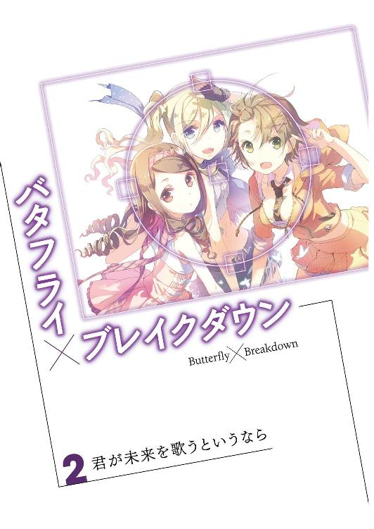
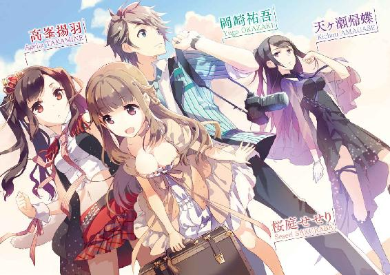
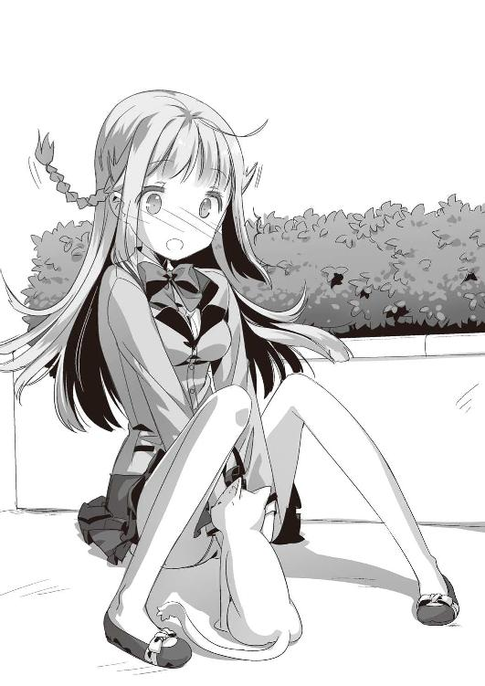
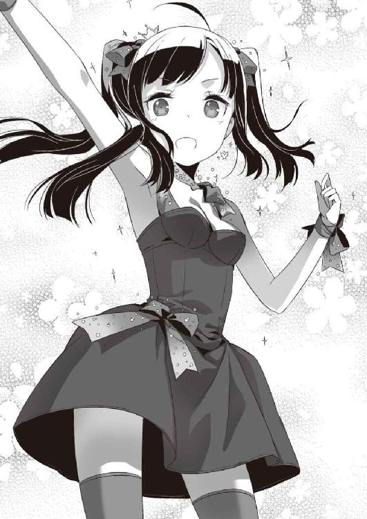
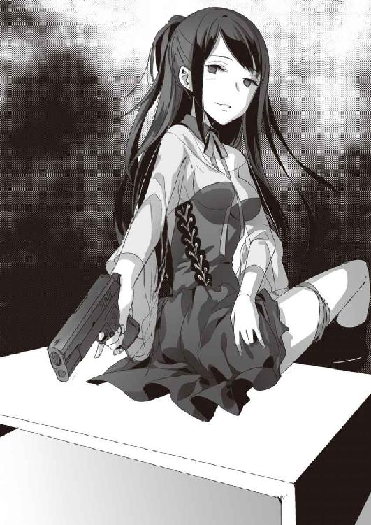
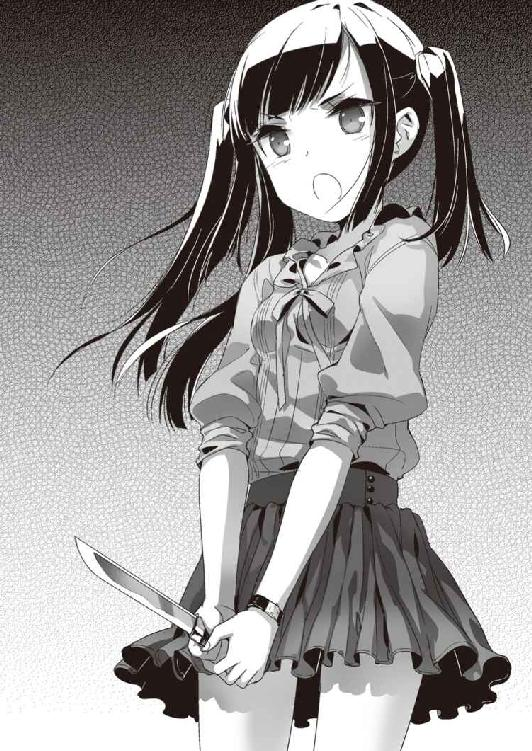
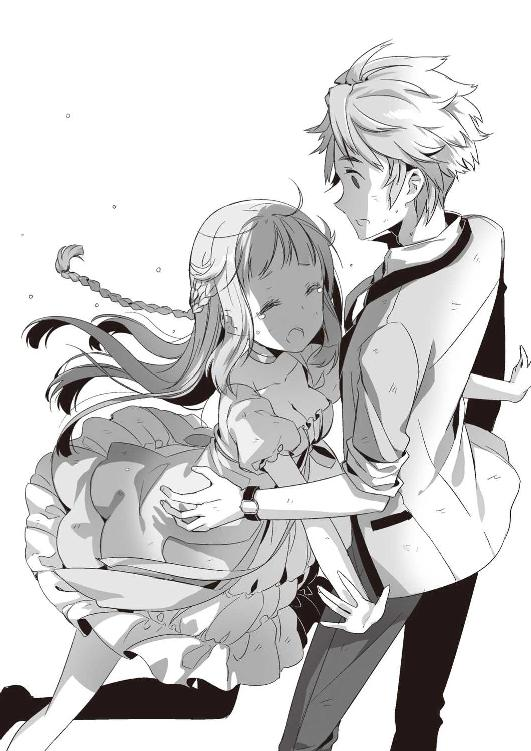
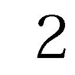
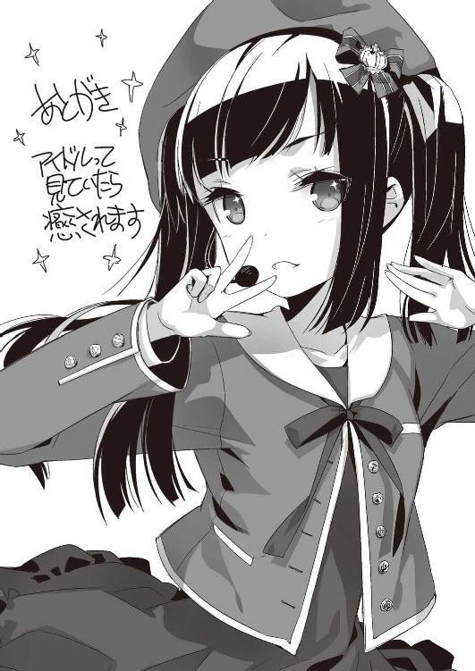

| バタフライ×ブレイクダウン 02 君が未来を歌うというなら | |
| 佐々原史緒 | |
| KADOKAWA / エンターブレイン (2013) | |


本作品の全部または一部を無断で複製、転載、配信、送信したり、ホームページ上に転載することを禁止します。また、本作品の内容を無断で改変、改ざん等を行うことも禁止します。
本作品購入時にご承諾いただいた規約により、有償・無償にかかわらず本作品を第三者に譲渡することはできません。
本作品は本文縦組で制作されております。ごらんになるリーディングシステムにより、表示の差が認められることがあります。
そして、また時は巡る
ここでも未来でもない
どこかで
つながらないものは
何も
何ひとつもない空は、果てなく青く、美しい。
今年一番と言っていい、文句のない蒼穹だった。
教会の尖塔が抜けるようなブルーに映え、時折浮かぶ白い雲が花嫁を飾るレースのように見えた。
別にキリスト教徒でもないのに教会婚を選んだのは、嫁のたっての願い。俺も白無垢や金襴緞子よりはウェディングドレスの方が彼女には似合うと思うから、特に反対はしなかったが。
「おーい、花婿。ちゃんとこっち向いて笑えや」
俺の師匠がそれはどうなの？ と聞きたくなるほどでかいカメラを抱えて、手を振りまくっている。レンズ持ち込み過ぎです、先生。教会の席横一列全部があなたの機材で埋まってます。
「よかったわ、ふられなくて本当によかったわ。お母さん、頑張って一番いいダイヤ値切った甲斐があったわ」
めでたい席で金の話はよせ、おかん。生々しい。婚約指輪を値切った男として、嫁に迫害されたらなんとする......まあ、こいつはそういうの気にしないだろうけど。
「しかし、ザキオカさんが真っ先に結婚するとはなあ」
「いや、遠距離恋愛経験者の方がけっこうさっさとするもんなんだよ。いろいろ耐え切れなくてさ」
「あー、なるほど」
「にしても、あんまりモーニング似合ってないなあ、岡崎。顔の作りはそこそこいいのに、なんでかね」
「品の問題じゃない？」
中畑と三村がしたり顔で言い合ってる。おまえらこそ礼装似合ってねーから！ 陸地でちょこちょこ歩いてるペンギンみたいになってるから！
「よかったわね、祐吾くん。本当によかったわ。停学退学の危機からあなたを救い続けた甲斐があったわ」
ひらひらのハンカチに顔を埋めて、浅見さんが言い募る。その節は本当にありがとうございました、寮長。おかげで助かりました。けど、他の招待客の手前そういう発言は慎んでいただきたく......あと、なんで身内でもないのに留袖着てんの？ それから、後ろで灯子ちゃんがものすごい怖い顔してるんですが......。
そんな賑やかなメンバーを詰め込んで、教会の鐘が鳴る。俺は祭壇の前に進み出て、花嫁の登場を待ちわびた。
やがて、扉が開いた。
厳かなパイプオルガンの演奏と共に、花嫁が入場してくる。父親を持たない彼女は、だけど、誰の付き添いも頼まず、ひとりで胸を張り、ブーケを抱えてしずしずとこちらへ進んでくる。
その白い姿が眩しくて、俺は涙ぐみそうにすらなった。
バージンロードが果て、彼女が俺の前に立った。
「祐吾さん」
それだけを言って、微笑む。
いままで見た中で、いっとう綺麗な笑みで。
牧師さんにうながされ、俺はその手を取った。シルクの手袋越しに伝わる、ぬくもりと緊張。それに胸が熱くなる。かすかに震えるそれを包んで、暖めてやりたいと思う。
ここまで長かったなあ......桜庭？
いや、すごくあっという間だった気もする。
さあ、結婚行進曲が鳴り止んだ。
誓いの告白の時間がくる。
これが終わりじゃない。始まるんだ。
あの日交わした約束を果たす日々。
いまから明日へと続く、未来の道が。１
息をつめ、ファインダーを覗く。
わずか数センチ四方に縮小された世界で、光が躍る。
秋の午後、河原のススキが揺れていた。俺はその穂先、淡い陽を集めて揺れる一瞬を切り取ろうと息を詰めて待ち続ける。
望みの光線、望みの角度、望みの瞬間。
数万分の一の可能性に賭け、シャッターに指を置く。
静かな静かな勝負のときは過ぎ、やがて、チャンスは訪れた。
今だ！
俺が勇んでシャッターを切ったのと、突然、強烈な光があたりを照らしたのはほとんど同時。
「目が、目がぁぁっ！」
「あらあら、祐吾さん」
のたうち回る俺の頭上に、のんびりとした声が降ってきた。嫌がる瞼を引きずり上げて窺うと、そこには満面の笑みの桜庭せせり。クマ高の制服に身を包み、でっかいレフ版を抱えて立っていた。
「桜庭、それ......」
力なく指さす俺に、桜庭はもう得意満面。
「揚羽先輩の事務所にあったやつをお借りしてきました！ これなら、どんな薄曇りの日だって明るく眩しくサンシャイン、素敵写真がじゃんじゃん撮り放題です！」
さあ褒めろ、やれ褒めろと言わんがばかりの言い種に、俺は束の間言葉を失う。いや、桜庭さん......ときには、その薄曇りの方がいいときもありましてね。いまがまさにそのときだったんですがね......。
センスとか直感とか侘び寂びとか、いろんな言葉が俺の頭を占めた。さて、どっから言ってやろうかと思い巡らせているうちに、桜庭は河原の草をげっしげし踏みつけ、そこにピクニック・シートを敷きだした。その中には、俺がいままさに撮ろうとしていたススキさんも含まれている。合掌。
「もう四時過ぎましたよ、祐吾さん。そろそろお茶にしましょう！ 平和な風景を眺めながら、爆音を聞かずにお菓子をつまむ。素敵です。憧れです。わたし、寮の同室の子にクッキーの焼き方習ったんです。もちろん、味の保証はいたしますよ。野戦訓練でトカゲとかスズメとかたくさん調理したので、小麦粉練って焼くのぐらい楽々かんたんです」
こちらの微妙な表情には気がつきもせず、桜庭は優雅なティータイムの準備に余念がない。女子力満載手作りクッキーの比較対象が、トカゲやスズメであることに一抹以上の不安を覚える。
佇む俺へ、一〇月の風が吹き寄せた。
ああ、残暑はついに終わったなあ。ようやく秋になるんだなあ。投げ出してしまいたい現実を前に、俺の頭は勝手に回想シーンを繰り広げだした。
九月の終わり、非常識極まりないやり方で桜庭は我が市立隈之江高校に入学してきた。以来、この調子でずっと俺に張り付きっぱなし、世話焼きっぱなしだ。
制服着込んでウロウロしている姿からは想像もできないが、実はこいつは未来からやってきた国家公務員。しかも、そのお仕事は遙か数百年の未来で人類が滅亡するのを防ぐため、時間軸に修復を加えていくというもの。
しかし、いま現在、そちらの仕事は完全ストップ状態。未来からの指令を送って寄越す装置（見た目は革のトランク）が壊れてしまって、はや数ヶ月。何かをしようにも何をしたらいいのか判りませんって具合なのだ。
で、本来、任務で使うべきエネルギーのすべてを俺の世話に注ぎこんでいる、らしい。
嬉しくないと言ったら......まあ、噓になるな、うん。なんせ、この女、見た目は完璧。申し分ないボディラインに、愛らしさを前面に押し出してみましたって作りの顔。ふわふわの髪やほっそりとした指先、ちょっと甘く高めの声も男ゴコロをくすぐることこの上ない、が。
「桜庭」
「はい？」
「邪魔」
「えっ、ええええー」
さも心外だと言うように唇をひしゃげ、桜庭は後じさる。けど、俺は容赦しない。春に出会い、夏を経て、いまは秋。その間に、俺もいろいろと学んだ。こいつは犬と同じ。一度、覚えたことは延々と繰り返すし、何か問題があったときはその場で言わないと効き目がまるでない。コマンドの再入力は困難を極めるので、最初の要望はなるべく正確に！
「わ、わたしは祐吾さんのお手伝いをしたいと思ってですね」
「心意気はありがたいが、風景写真つーのは一人でひっそり撮るものなんで。他のやつはどうだか知らねーけど、俺にとってはそうなんで」
「そんなぁ」
白く繊細な顔が、くしゃりと歪む。
「お手伝いがダメならば、わたし、何をしたらいいんでしょうか？」
「写真撮れよ、写真を。おまえだっていちおう写真部員だろうがよ」
「そうおっしゃられましても......」
ますます困ったというように、桜庭は傾げた首の角度を深くする。
「わたしは祐吾さんのサポートを全面的にしようと思って入部しただけですので」
「ありがとう。だが、こういったサポートはいらん」
「でも、祐吾さんが学校に居づらくなってしまったのは、わたしのせいなんですし」
「いやまあ、そーかもしんないけど......」
遠い未来の人類滅亡と引き替えに、俺の学校内での地位は失墜したまま。知られざる救世主の努力と不遇を償おうと、桜庭は必死に俺にくっついて歩いているわけだ。好意から発していることだけに、拒否はしづらいところなんだが。
「えー、そうなの？ 困っちゃうなー」
泣き言全開の桜庭の言葉に、ふんわりとした声が重なる。振り向くと、ひとけのなかった河原に三人目の人影が湧いていた。短く切りそろえた黒髪に、赤いフレームの眼鏡。桜庭と揃いの制服だけど、リボンタイの色が違う。赤は一年、青いのは二年生って意味だ。目の前の人物の首元には青いタイが揺れている。
「ぶ、部長......」
うろたえる俺に、彼女はちらりと笑う。
「まあねえ、我が写真部は万年部員不足。たとえ彼氏目当ての入部でもいないよりはいてくれた方が断然マシというか大歓迎よー。けどね」
笑顔ながらも、反論許さじという口調で部長閣下は続けた。
「文化祭だけにはちゃんと作品出してくれないと困っちゃうなー」
「文化祭？」
初めて聞いたって顔で、桜庭は首を捻る。というか、本当に初めて聞いたのかもしれん。しまった。二三世紀にはもうないのか、文化祭。
「も、もちろんですとも。ちゃんとこいつも大傑作を撮ります。なあ、桜庭？」
「えっ」
「なあぁぁぁぁ、桜庭ぁぁぁぁぁ？」
精一杯の笑顔のまま、奴の首根っこを摑む。本当はぶら下げてやろうと思ったんだが、予想よりずっと重くて片手ではとうてい無理そうだった。まあ、これだけ立派な乳を二つもぶら下げてたら当たり前かもしれないが。
「な、桜庭ぁ？」
仕方がなく、耳元近くで思う様重低音で繰り返す。ようやくこれはやばいと悟ったのか、桜庭は小刻みに首を縦に振り続けた。
「そう？ なら、よかった。頑張ってね」
部長は微笑む。今度はちゃんとまっさらと判る笑い方。
俺は心底ホッとして、去っていく部長の背を見送った。
「あー、ひやひやした」
「祐吾さんって、部長さんにはいつも低姿勢でいらっしゃいますね」
半吊り下げ状態というのに、桜庭は器用に首を捻って俺を見上げる。言葉尻がどこか非難がましいのはどーいうわけだ？
「当たり前だろ、あの人は俺のことこれ以上はないってぐらい公平に扱ってくれたんだからよ」
俺が写真部のドアを叩いたのは、桜庭が強引に転校してきた直後のこと。問題行動を起こし、学校中であることないこと言われてる俺を、あの部長は一も二もなく受け入れてくれた。
しかも、俺がここ最近撮った写真を見て、だ。
うっかり分不相応な賞を取ってしまった中学時代の作品ではなく、恐る恐る再び撮り出した、ここ数ヶ月の写真。そのどれもが、古い寮の部屋や、学校近くの橋や通りなんかを撮った、ごくごくありふれたものばかり。唯一の例外は通学路で笑ってる桜庭と変装済みの高峯の写真ぐらいだったかな。
そんな取るに足らない作品を見て、あの部長は「うん、いいね」と言ってくれた。そして、快く俺の入部を許可してくれた。それが、その時の俺にとってどれだけありがたかったか。
故に、俺はあの人を困らせたくないし、写真部員としてきっちり務め上げたいわけ。桜庭には一度そのへんをしっかり話しておかないといかんな。
「桜庭、そこに座れ」
「はい、祐吾さん」
襟首を離し、敷かれたシートの上に桜庭を押し出す。意外にすんなりとあいつは腰を下ろし、クッキーの包みを差し出した。いや、違うから。ティータイムにしようってんじゃないから。
「写真部にいる以上は、写真を撮れ。俺のことはおいといて、とにかく写真を撮れ」
「でも、わたし、現代のカメラ持ってません」
「うん、そっからもういろいろ間違ってるよね、おまえ」
怪しい高性能パソコン（自作）とか盗聴器バケツに山盛りとか持ってるくせによ。
俺は自分のリュックを探ると、使い古したコンデジを引っ張り出した。
オートモードにしてシャッター押せば、あとは楽々カメラにおまかせ。技術大国日本の威信をかけた、高性能低価格機。カメラマンの腕は一切問わないこれを写真部員が堂々と使っていいかっちゅーたら、たぶんダメだろう。が、何もしないで俺の世話（というか邪魔）を延々してるよりはマシなわけで。
「これ向けて、ここ押して。ほれ、なんか撮ってみ」
「はい、祐吾さん。バター」
「チーズだ、チーズ」
ファインダーを向ける桜庭に仕方がなく一つ笑ってみせる。
「はーい、もっと笑って笑ってー。目線こっちですよー」
それっぽいことを言いながら、桜庭は膝をついて本格的な撮影体勢に入る。どこで覚えたんだ、そんなこと？ 高峯の仕事場でか？
その上。
「それじゃ、次は脱いでー」
とか、さらっととんでもないこと言いやがった！
「どこのエロカメラマンっ？ 誰にそんなこと習った!?」
「だだだだって、クラスの女子も寮生の子たちも、祐吾さんが例の事件を起こしたとき傍にいたのがわたしだって知ると、必ず『ねえ、どうだった？ ちゃんと見た？』ってすっごい聞くんです」
「な、なんですとっ？」
「写真に撮ってお見せしたら、みなさんもっと喜んで、きっとまた祐吾さんにもフレンドリーになって下さるんじゃないかと」
「なにそれ、やめて！ 怖い！」
教室じゃ俺のことすごい遠巻きにしてるくせに、女ってなんなの、マジ怖い！ あと、こいつの発想もめっちゃ怖い！
「いらん、そんなフレンドリーは不要！ というか、たぶんきっと絶対逆効果！」
「えー」
本気で不満げな桜庭の神経に、頭を抱える思い。
でも、まあ、まだマシか。
いまはこうしてキャッキャッしている桜庭だが、ふいにテンションがネガティブモードに振り切れることがある。そうなると、もう手がつけられない。
「わたしがこうしてのんきに学生やってる間にも、未来の地球が......」
「新しい任務をこなさなくては......でも、どうやって？」
「救援隊はいつくるんでしょうか？ わたしたち、もしかして見捨てられちゃったのでしょうか？」
と、延々と繰り返し続け、宥め慰めるのにも一苦労する。
だから、まあ......こうやって笑っててくれるのが、すごくありがたい。
多少ウザくとも、ススキを踏みつけられようとも、多少のことは我慢するつもり。ヌード写真バラまかれるのだけは、断固勘弁願いたいが。
２
「文化祭のイベント、ですか？ 作品展示とは別に？」
古い校舎の更に古い部室棟、ことさら小さな部屋の中、我らが部長が深々と頷く。その表情には苦渋が滲み、眼鏡の奥の視線も逸らしがちだ。
秋の放課後、あたりは早々に陽が傾き、世界はなんとなくアンニュイな空気に包まれる。
が、我らが写真部長閣下の表情は、アンニュイ通り越して葬式会場の受付嬢並みに悲痛だ。
「昨日の文化祭実行会でな、作品展示だけじゃいつもと変わらんだろう。それではろくな予算は割けないと生徒会から言われてな......」
ずいぶん無茶言うな、クマ高生徒会。
「写真部が写真飾って、それで何が不足だって言うんですか？」
「そうなんだが......今年はなんか知らんが文芸部やら美術部やらも喫茶店とかお化け屋敷とかをやるそうでな。マンガ部に至っては、アイドル研究会と組んでコスプレ演劇ショーをするそうで」
「そ、それは濃い出し物になりそうですね」
アイドル研の面々を思い起こし、俺は小さく唸った。インドア派の代表のような部だと思われてるが、多彩なオタ芸を完璧にこなし、行動力も抜群。西に贔屓のアイドルのライブがあれば行って力の限り応援し、東に握手会があると聞けば行って延々と並び続け、その切磋琢磨ぶりはそこらの体育会系にひけを取らない。マンガ部だって、あれだろ？ お盆とか正月とか他人様が休みくつろぎたがる時期に、わざわざ数十万規模のイベントにひしめきあって出かけては、自作の本売ったりコスプレしてるって話だろ？ その二つの部がタッグを組んでなんかやるとなったら、それはもうえらい物が飛び出してくるのは必至。
「で、おまえらだけ写真飾って三日間のほほんとしてる気かとすごいキツい調子で言われて、つい何か考えると答えてしまって......」
しょんぼりと部長は肩を落とす。
「じゃあ、うちも喫茶店とかします？ ボーイぐらいなら俺にもできますし」
「似たような企画は後からじゃ通せないと釘刺された」
それじゃありきたりな飲食店なんかだと、企画通す段階で蹴られるな。けど、現在、写真部員は俺と桜庭と部長に加え、一年生一人に二年生四人、三年が三人。三年生はほとんど戦力にならない上に、二年は全員よその部と掛け持ちと来てる。三日間の展示会の番でさえ、どうやれば円滑に回せるのか頭を悩ませていた矢先だってのに、凝った出し物なんかとうてい出来そうにもなかった。
でも。
「......判りました」
俺としてはそう言うしかない。
「俺も何か考えてみますね」
何かって、何を？ 具体的アイディアは？ そんなもの、もちろんないままで。
唸りながら部室を出て、教室棟へ向かう途中。小走りに駆けてくる桜庭と行き当たった。
「あ、祐吾さん！」
やけに生き生きとした調子で、桜庭はカメラを掲げる。
「わたし、猫を撮ってみようと思うんです」
「ああ、それはいいんじゃね？」
即答しつつも、俺は少しだけ首を傾げた。
実は動物写真はけっこう難しい。相手がちょこまか動くから、コンデジじゃシャッタースピードが追いつかない。被写体の毛色によっては、ホワイトバランスやらなんやらがえらい面倒。俺もその昔、近所の黒猫を撮ろうとして、どっちが頭でどっちが尻かよく判らない謎の毛玉写真を量産したもんだった。
でも、明日の地球が滅亡するってときに隣の家の飼い猫を心配していたような桜庭のことだ。技術力のなさを情熱でカバーするだろう。何より、動物写真は和むしウケる。褒められれば、ますます撮りたくなる。撮れば撮るだけ、どんどん上達すると、いいことづくめ。まあ、俺はそのへん行き過ぎて人生大失敗したわけだけどさ。
「で、どこの猫？ 誰かの飼い猫とか？」
「女子寮と男子寮の境目あたりに、最近、よく猫がくるんですって」
そちらの方角を窺うように指さして、桜庭は楽しげに続ける。
「それがすっごい美人さんなんだそうですよ！ 目が綺麗なグリーンでくっきりとした三毛で」
「寮の近くかあ」
なら、灯子ちゃんあたりに聞けば所在がすぐ知れるかもしれない。
「いいんじゃね？ 頑張れ」
「頑張れって、そんな。祐吾さんもご一緒にどうですか？」
「や、考えなきゃいけないことがあって」
「猫を撮ってる間には考えられないことですか？」
「そ、そういうんじゃねーけど」
「なら、行きましょう、ご一緒しましょう」
「でも」
「祐吾さーん......」
いつもの捨て犬モードの目で見上げられ、俺はたちまち折れた。昨日、写真は一人で撮るものとか説教していたのは、いったいどこの誰ですか。まったく、もう。
「なー。猫カフェとか、どうかな？ 女子にウケるかな？」
学校から寮までの五分の道のり、俺はなんとはなしに桜庭に持ちかけてみる。
「猫カフェって飲食のスペースに猫を集めた店のことですよね？ わたしは是非いってみたいですけれど......祐吾さんが経営なさるのですか？」
「いや、そーいうんじゃなくて。文化祭の出し物としてどうかってこと」
「文化祭って、確か学校のお祭りでしたよね？ 動物を校内につれてきていいのですか？」
「よくないですね」
生物学部がカイコとか金魚とか飼ってるけど、あのへんは別枠扱いだろうからなあ。
「あと、猫って知らないところにいきなりつれてきても大人しくしてるものでしょうか？」
「してないですね」
パニクって暴れるか、逆に物陰に引き籠もって出てこないかのどっちかな気がする。
「あー、なんかねえかなあ！ よその部と差別化できて、人数かけなくてもきっちり回せて、なおかつ学校中をあっと言わせるイベント案は！」
「ゆ、祐吾さん、お静かに。いま尻尾が見えましたぁっ」
頭をかきむしりさんざん喚いているその間に、俺たちは寮へと帰ってきていた。いつかの雨の日、桜庭が素手でぶち開けた壁の穴は、真新しいコンクリで塞がれてそこだけツートンカラー。その向こう側にはクマ高男子寮「若竹寮」があり、更にその数メートル先の生け垣の向こうには、女子寮「早苗寮」がある。桜庭は、その垣根の端っこを指していた。
なるほど、そこでは白地に茶と黒模様の長細いものが揺れている。夕陽に照らされ、ふわふわといっそう柔らかそうな尻尾だった。
俺と桜庭は一度顔を見合わせ、それからゆっくりゆっくりそちらへ近づいていった。むろん双方カメラはばっちり取り出し、シャッターへ指をかけたまま。
一歩二歩と距離を詰める間に、猫はまたちょっと移動したらしい。最初の場所から数メートル先で尻尾がゆらゆら揺れて、それからまたどんどんと遠ざかっていく。
「猫ちゃん、待って」
ぴたり。
尻尾が止まった。まるで、追いすがる桜庭の声に反応したかのように、その場で動かなくなる。
そんな、まさかな。
自分の考えをおかしく思いながら、俺はそちらへと忍び足で近寄っていく。
猫は動かない。垣根の中、尻尾をぴんと延ばしたままじっとしているようだった。
「はーい、猫ちゃーん。こっち向いてー」
猫撫で声とはまさしくこのことかと思うような声色で、桜庭が話しかけ、膝をつく。常緑樹の合間から、ぬっと丸い顔が出てきた。
右の耳は黒、左の耳は茶色。体の大部分は鮮やかに白く、はっきりとした目鼻立ちにピンとした髭も凜々しい。
「おー、なるほど美人猫だな、こりゃ」
「ですねえ。ほーら、こっち向いて」
桜庭の呼びかけに、猫は素直に応じた。それどころか、さっとこちらへ走ってきたかと思ったら、桜庭の膝に頭をこすりつけ始めた。
「あらあら、人なつっこい」
「これなら簡単に撮れそうだな」
俺がそう言ってカメラを向けた、瞬間。
フーッ！
全身の毛を逆立たせて、白い体が飛び上がった。避ける間もなく、炸裂する猫パンチ。手のひらに痛みが走り、鮮血の四本ラインがくっきりと引かれていた。
「あたたたた！」
「祐吾さん、大丈夫で......きゃっ！」
三毛猫は俺に振るった鉄拳を鋭く返すと、桜庭のスカートに爪を引っかけた。ぶら下がる猫を避けようと、桜庭はバランスを崩して尻餅をつく。猫はぴょんと向きを変え、ヒラヒラ広がる布地の間へと小さな頭を突っ込んだ。
「きゃーっ！」
絹を裂くような悲鳴が響き、桜庭がのたうつ。猫は頭どころか体半分ぐらいスカートの奥へ消え、布地ごともぞもぞとひっきりなしに動き続けていた。
「やっ、ちょっ、そんなとこ舐めないで！ くすぐったい、くすぐったいです！」
次第に切羽詰まっていく、桜庭の声。
「助けてください、祐吾さぁん！」
艶っぽい頰と荒い息で訴えかけられ、俺はいっそう動けなくなる。なんだか底はかとなく一八禁的な絵面。そのスカートの中で何が起きてるっていうんですかっ？
「祐吾さんてばぁーっ」
何度目かの呼びかけに、俺はようやく我に返り、猫を引っ張り出そうとした。
「ちょっと！ 気安く触んないでよっ」
三色の尻尾を摑んだ直後、甲高い女の声で怒鳴りつけられる。
俺は大きく瞬きをし、ゆっくりと辺りを見回した。声の届く範囲内にいる女は、ぴいぴい泣いてる桜庭ただ一人。他に人影はない。
首を傾げ、摑んだままの手に力をこめる。
「痛いっ！ 尻尾が取れちゃったらどうしてくれんのっ？」
なおも激しい糾弾。俺は慌てて、手を離す。
「はー、やれやれ。ちょっとからかっただけで、この扱い。ほんっと、猫やってんのって楽じゃないわー」
ふるふると頭を振りながら、スカートの中から猫が這い出してきた。俺は我が耳を疑い、目の前の三色毛玉と涙目の桜庭とを何度も見直す。
「なー、桜庭。俺、耳がおかしくなったみたいだ。この猫が喋ってるように聞こえる」
「わ、わたしもです、祐吾さん」
服の裾を必死に直しながら、桜庭が後じさる。
「すごく流暢かつ理不尽に愚痴られたような気が」
「『ような』じゃないわよ、喋ってんのよ」
前足をきちんと揃え、三毛猫は俺たちを見上げた。ふふんと、鼻で笑った気さえする。
「桜庭......これは、あれか？ またおまえんとこのすごい科学がどうにかなった結果か？」
「き、聞いたことありません。わたしたちのすごい科学は基本、まず軍事に役立てますが、猫を戦線投入したケースはありませんし、万が一そういう例があったとしてもあんな痴漢行為を働くなんて」
「あら、いやだ」
猫が笑う。
伝説のチェシャ猫もこんな感じだったのかって、笑顔。
「痴漢行為なんて品のないこと言わないで。あれは愛情表現よ、いわゆるひとつのラ・ヴ！ いつもそう言ってるでしょ？」
いつも、ですと？
そんじゃやっぱり二三世紀関係の何かってことじゃねーかよ。不信の眼を俺に向けられ、桜庭はぴきんと硬直した。
「さて、わたしは誰でしょう？」
銀色の髭を靡かせながら、猫が訊ねる。それはもう、しっかりとした日本語で。なおいっそう、楽しげに。
「そ、そんな」
「誰でしょうって言われたって......」
「あんたの名は、桜庭せせり。ま、仮の名前だけどね」
まんまるい足でちょいと指して、猫は続けた。
「生まれは二二一二年一二月四日、東京特別地区。一二月生まれだからって常にバースディプレゼントをクリスマスといっしょくたにされてきたのがすっごい不満。四日と二四日じゃぜんぜん違いますねって、四六時中ぶーたれてた。幼年訓練学校じゃ格闘技はいつも上位だったのに、射撃の成績がドベで。追試訓練食らっては野山に放り出されてた。で、三年生のときにでっかい猪に追いかけられて、今じゃ豚まで苦手。まあ、食べるけど」
ものすごい勢いで、桜庭の個人情報をまくしたてとる。猫が。
「好物はお芋のお菓子。手作りスイートポテトを作ってくれるからってだけで、揚羽のシンパになっちゃって、しょっちゅう揚羽さん揚羽さん言ってたわね。人生で一番高い買い物は、ヨーロッパ産のブラとスキャンティのセット。専門店でゼロ二つ見落としたくせに『いりません、買えません』ってどうしても店員に言えなくて、初ボーナスをパーにしちゃったのよね。見せる相手もいないくせにさあ、ゴージャスな勝負下着だけ持っててもしょうがないのにねえ。あたしならいつだってじっくり見てあげるけどねえ」
「や」
桜庭は血の気のない唇を震わせ。
「やめてぇ、やめて下さぁぁぁいっ！」
慌てたように猫に飛びついた。
が、ひらりと躱され、あまつさえ背中と肩を踏み台にされた。ふぎゃっと喚いて、桜庭は再び地面へ尻餅をつく。
「さて、あたしは誰でしょう？」
垣根の上から俺たちを見下ろし、猫が問う。ゆったりと、嫌みなぐらいの余裕を見せて。
「......ぱい」
涙目で、桜庭が叫ぶ。
「なあに？ もっと大きな声で言ってくれなきゃ聞こえないわ」
ぴくりぴくりと三角の耳を動かして、猫が首を捻る。
「守屋るり先輩ですっ！ わたしの相方のっ」
桜庭の絶叫に、目を細め、猫は尻尾をくねらせた。
「正解」
３
さすがの二三世紀、人が猫に化ける技術まで確立済みですか、と、俺は思った。
が、それは違うと守屋るりは言う。
「気がついたら猫になってたのよ」
偶発的かつまったく想定外の事故だったのだと。
気がついたら桜庭がスカイタワー付近に放り出されていたのと同様に、守屋も気がついたら猫になってしまっていたのだと。
寮から歩いて五分ほど先にある河原、その一画を整備して作られた公園に、俺と桜庭、それに例の三毛猫は来ていた。
俺は寮の門限を気にしつつ、二人の未来人が情報交換する様を眺める。
「心細かったわあ。猫の姿じゃ、交通機関も利用できないし、戦闘に巻き込まれでもしたらロクな抵抗もできない。もちろん、任務を果たすことだって無理。でも、頼りになる相棒がきっと助けにきてくれるはずって思って待ってたのよ。ずっと、ずっとずっとずっとずっと」
粘っこい口振りで、三毛猫守屋は繰り返す。
「ご、ごめんなさい。でも、守屋先輩はわたしよりベテランで優秀な修復士でいらっしゃいますから、わたしの手助けなど必要ないかと思いまして、何よりもまず目の前の任務をどうにかせねばと判断をし」
びくびくと肩を大きく震わせつつ、桜庭が抗弁する。
「あら、そうなの？ しょっちょうセクハラしてくる先輩とか、超うざーい。いい機会だからあっちは放っておこうー。先に大好きな揚羽先輩を探しにいこうーとか思ったわけじゃないのね？」
「も、もちろんですっ」
力強く桜庭は頷いてみせたが、表情がそれを完璧に裏切っている。可哀想に。こんな命取りの場面ですら、噓がつけないんか、この女。絶対、長生きできねえ。
思えば、これまで桜庭の口から一度もこの猫の名前......守屋るりって名を聞いたことがない。高峯が現代で派手派手しく芸能人張ってるのを見て、自分の相方よりそっちばっかりに気を取られてるだけかと思ってたんだが、考えてみりゃそれも不自然な話だよなあ。
「ひとつ確認しておきたいんだけど」
初めて口を挟んだ俺に、猫が緑の目を向ける。思わず撫でたくなるような可愛さだけど、これ以上、血のストライプ模様をチェックにされてはたまらん。両手をポケットに突っ込んだまま、俺は重ねて問いかけた。
「守屋るりってのは、現代感覚だとまるっきり女性名なんだけど、未来では違うとか？」
「未来でも変わんないわよ」
「そんじゃ、あんたも本体は女なんだ？」
「ええ」
「女が女にセクハラ？」
「セクハラじゃないって言ってるでしょ、頭の悪い小僧ね。愛情表現！ いわゆるひとつのラ・ヴ！」
明朗に返されて、俺は心底後悔する。浅見さんの例もあるからさぁ、いちおう確かめておきたかっただけなんだが、すっげバカなこと聞いちまったような。
げんなりした俺の横、桜庭はげんなりを通り越して憔悴しきっとる。こんなのが相方で先輩で、知らない時代へ二人っきりで送りこまれるとかって......働くのってすごい大変なことなんだな、桜庭......それで月にいくら給料貰ってるのかは、生涯聞かないことにしておこう。
「まあ、お互いの経緯はだいたい判ったわ」
ひとしりきり話した後、三毛猫はいくらか改まった口調で藪の中を指した。
「そこにわたしのリモートシステムを隠してあるの。ちゃんと動くかどうか試してみて」
見ると、深い草木に埋もれるようにして、例のトランクが置いてある。くたびれた革の表面に猫の爪痕とおぼしき傷が無数に走っていて、見るも無惨な感じになってるが。
「なんせ、この手でしょう？」
キュートな肉球ハンドをひらひらさせて、守屋は溜め息をついた。
「まず、トランクをなかなか開けなかったし、開いたはいいけど、システム認証がまるでできないし。ここまで運んでくるだけで死ぬかと思ったわあ」
「ホント、よく来られましたねえ」
桜庭の出現ポイントは、ここから電車で三駅。守屋もどうもそのへんで猫化してたらしい。
普通の猫の行動範囲って、どれぐらい？ 犬なら何千キロも歩いて家戻ってきたって話はたまにあるけど、猫がすごい遠出するってのはあまり知らない。自分の体の倍はあろうかというトランク担いでここまでやってきたなら、そりゃ、数ヶ月もかかるってもんだろう。
「よく桜庭の現在位置判ったな？」
「そりゃあ、あんた」
くっくっと、猫は楽しげに言う。
「愛の力よ、愛の力。それがいわゆるひとつのラ・ヴ！」
もういいから、それ。
バレンタイン前のデパート並みにラヴ大安売り状態で腹一杯だから。
「ああ......でも、これでようやく本部と連絡が取れます」
大きな目をかすかに潤ませ、桜庭が言い募る。
「次の岐枝がいつで、新たな任務がなんなのか判りますし、救援隊が出されたかどうかだって、きっと」
恭しい手つきで桜庭はトランクを開いた。一見、ただの布張りの中身だが、本当は未来の英知が詰まったメカだ。桜庭が一番横のポケットへと指を入れると、小さなウィンドウが空中に出現する。
俺は息を吞んで、その様子を見守った。
いつぞや見たときのように、周囲の風景が変わり、未来の世界を少しだけ覗けるかもしれないと思って。
だが。
『システムに軽微不良。上位コード所有者による認証を要求します』
手のひらサイズのウィンドウには、そんな無情な宣告が書き連ねてあるだけ。
「上位コード所有者って......」
「まあ、普通に考えてあたしよね」
「でも、猫の手じゃ......」
「やっても無駄だったわね」
「それじゃ、ダメじゃないですかーっ！」
うわあっっと桜庭は泣き伏した。
「こ、これでようやく事態を打開できると思ったのに！ 未来と連絡が取れて、人類の滅亡も回避できて、何もかもが万々歳だと思ったから、セクハラの一つや二つや三つ、耐えて耐えて耐え抜こうと死ぬ気で覚悟を決めましたのに、みんなみんな無駄だったなんてぇぇ！」
桜庭、本音ダダ漏れてるぞ。この先、いろいろ大丈夫か？
しかし、俺が思うより愛に生きる猫は寛大だったらしい。
「だから、そら。もう一人、いるでしょ？ 我々の同世代人でせせりより上位コード持ってるの」
尻尾を優雅に揺らしつつ、伸びを一つ。
「なんかちゃっかりアイドル面した女が」
付け足した言葉は、どっか不穏な調子だったけれど。
４
「お久しぶりねえ、揚羽」
桜庭の腕の中、猫が言う。
ときどき体をくねらせるのが、桜庭のふくよかな胸の感触を楽しんでるように見えて、なんか落ち着かない気分になる。
「記憶がないんですって？ よかったわねえ、過去の悪行の数々を思い出さずに済んで、羨ましい限りだわ。自己嫌悪で死にたくなることも、これでもうないでしょうし」
モダンな造りのドアの間、豪華絢爛な黒髪美少女が眉根を寄せる。誰あろう、天下のスーパーアイドル・クアトロＡのメンバー、高峯揚羽だ。
若竹寮と早苗寮のお向かいにある、真新しいマンション。その最上階が彼女の住まい。つい一ヶ月ほど前、高峯は元の住まいを引き払って、ここへ入居してきた。夏の初め、俺たちが引き起こした事件のせいで事務所の用意してくれた家にはいられなくなったから、と、本人は言い張ってるが......真意はたぶん違う。
このアイドル様も、本当は未来からやってきた修復士。桜庭たち同様になんかしらのトラブルに巻き込まれたらしく、そのことを本人はまったく覚えてないまま、現代で芸能活動に勤しんでおられる。口では「未来人なんて、バカな妄想につきあわせるのもいい加減にして」なんて四六時中のたまってるけれども、本当は桜庭のことを心配し、何より、自分の記憶を取り戻したがってる。そのために、桜庭が住んでる早苗寮の真ん前にやってきたんだと思う。
しかし。
「......たまの休みに突然押し掛けてきたと思ったら」
『本当は心優しい揚羽先輩』にしてはキンキンに冷えきった声色で、高峯は続けた。
「せせりちゃんたら、猫のぬいぐるみで腹話術？ なかなか達者な芸だけど、別にリクエストなんてしてないわよ。お駄賃ぐらいならあげないこともないから、さっさとお引き取り願いたいわね」
「ぬいぐるみですって？」
不愉快そうに、三毛猫が目を細める。
「このあたしが、ただのぬいぐるみに見えるわけ？ つくづく可哀想な女ねえ。記憶がないとか言ってるそうだけど、本当はオツムのどこだかがいかれちゃっただけなんじゃないの？」
高峯は一瞬だけぽかんと、よく動く猫の口元を見た。けど、その立ち直りはロスタイムにゴール間際で倒されたFWよりも早い。
「あら、まさか本物の猫だとでも？ それはそれは。なら、なおのこと早くお引き取り願わないと。このマンション、ペット不可でね。入っていいのは人間様だけで下等動物はお断り。まして、ぺらぺら喋る薄気味悪い化け猫なんて言語道断、ご近所に訴えられちゃうわ」
「せ、先輩方っ。ちょっと落ち着いてくださいぃー。るり先輩はなんでいきなりそんな喧嘩腰なんですかっ。揚羽先輩もるり先輩のこと覚えてらっしゃらないのに、マッハの勢いで喧嘩買わないで下さいってばぁぁぁ」
冷たい応酬をなんとか押し止め、桜庭は涙目で説明を始める。その間中も、美女と猫は互いにガン飛ばしまくるのに余念がない。
その背後でトランクを抱えてた俺も、正直、泣きたいし逃げたかった。見るだに不穏だもん、この構図。なんで出会い頭わずか数秒であの猫は、喧嘩を売りにかかってるのか。しかも、あの毒舌女王陛下相手に。ラ・ヴか？ またすべてはラヴのせいと言うのか？ まったくろくでもねーな、ラヴ。
一通り話を聞いた高峯は、猫と桜庭と俺とを一度見直し、それから肩をすくめて手招きした。まだリビングのあちこちに段ボールが積まれ、洒落たソファにもビニールがかかっている。キッチンはまっさらで使われた様子がなく、造り付けの棚には無造作に本が突っ込まれたまま。
「相変わらず、忙しそうだなあ、高峯」
思わず声には同情がこもる。
俺は、今年の夏休みの半分以上をこの女の付き人として過ごした。自宅のベッドで横になれる日が、週にいったい何回あったろう？ テレビ局やらどっかのスタジオから戻ってきて、シャワー浴びて着替えてすぐさま飛び出すタッチ・アンド・ゴーな毎日。つい一ヶ月前に入ったばかりのこの部屋に生活感が芽生えるはずもなかった。
しかし、女王陛下は庶民の安い同情なんぞ意にも介さない。ちらりと視線をくれただけで、すぐさま俺の手からトランクを取り上げ開いた。
ほっそりとした指を内側の布地にしばらく這わせ、中のポケットにゆっくりと入れる。
――――かしゃん
まるで鍵でも差し込んだかのように、トランクはすぐさま反応を返した。いつもの斜め四五度チョップも必要ない。
大きく開いたトランクの中、警告のウィンドウは現れない。代わりに、淡い靄が急激な勢いでかかっていく。ふわふわとした白いそれがトランクを満たすと、そこに無数のスイッチが浮かび上がってきた。
それらは規則正しく点滅を繰り返し、やがて。
『......応答せよ、こちら文化庁コントロールセンター。応答せよ、守屋修復士』
低い女の声が響き渡ってきた。
「こちら、守屋。現状を報告いたします」
いつになく重々しい声で、三毛猫が応じる。
「予期せぬトラブルが発生しています。守屋は当該時代に到着と同時にボディをロスト。この数ヶ月、任務遂行が出来ぬ状態でした」
『ロスト？ 死んだということか？』
「いえ」
守屋の返事に苦笑が滲む。死んでんのにしゃべってたら、ホンマもんの化け猫だよ。
「生きてはおります。が、人の姿をしておりません。そちらからモニタしていただけますか？」
『了解、モニタを試みる』
ギューイ......
大きな歯車が回るような音がして、あたりの風景が一変する。アイドル様のアレな感じの部屋だったそこが、見知らぬ場所に一変していた。まるで視界にスクリーンが貼られ、３Ｄ映像が映し出されたみたいだ。
どこまでもどこまでも広く、薄暗い空間。周囲一面に、何かが光っている。それはひっきりなしに点滅する機械にも見えたし、得体の知れない動物の目がぎっしりと並んでいるようにも見えた。
『モニタ開始......完了』
ひたすら無機質だった相手の声に、ほんの少し感情の色が射す。
『どういうことだ？ こちらからだと守屋修復士が動物のように見えるのだが』
「その通りです。ただいま、猫の姿をしております」
『いったい、何故？』
「わたしには判りません。調査のしようもございません。何か原因に心当たりは？」
『いや、特には。システムは完全だったはずだ』
「完全なんかじゃありませんよっ」
桜庭が必死に訴える。
「揚羽先輩は記憶喪失、帰蝶先輩は行方不明。るり先輩は猫ちゃんになっちゃって、わたしのリモートシステムだってもううんともすんとも言いません。おかしいです。絶対に今回の任務は普通じゃありませんっ！ 救援隊はどうしてます？ まさか、そっちも事故ってるんじゃないですよねっ？」
『いや、それはない。桜庭修復士の主張は了解した。早急に調査する』
「お願いしますっ！ それと、次の時軸の岐枝はどうなってます？ もう、わたし、それが心配で心配で心配でーっ」
『次回の岐枝は既に判明済みだ』
向こうさんはもう落ち着いたもんだ。淡々と命令を出してきた。
『作戦コードＪＴ‐４８９８７を発令する。守屋、高峯、桜庭修復士は全力でこれに当たれ。システム不良の件については調査の上、追って連絡する』
「り、了解」
不承不承というように桜庭が頷き、三毛猫が尻尾を大きく揺らした。
「ちょっと待ちなさいよ」
高峯が尖った声で割って入る。
「救援隊は？ 本当にもう出発したのね？」
その質問に答えは返らなかった。
『作戦データ、アップロード開始』
短い宣言と共に、周囲の光が激しく瞬きだす。部屋の中央に、びよんと数字が浮かび上がってきた。○パーセント。データの送付状態を示しているらしいそれが、刻一刻とカウントを増やしていく。
前のときはそれが一○○ちょい手前のところで停止しちゃって、ダウンロード失敗。おかげで、俺たちはものすごく不明瞭な情報を元に駆けずり回る羽目に陥った。
でも、今回はそんなこともなさそうだと、俺は胸を撫で下ろしたんだが。
がっちゃん！
何かが割れるような音がして、数字がぴたりと止まった。九一パーセントってところで。
それを見ていた女たちも止まった。その顔には人猫変わりなく、「え、どういうこと？ 信じらんない」って書いてある。
「こ」
最初に声を出せたのは、この俺。
「この間より悪いじゃねえか！」
思わず炸裂したツッコミに、まず反応したのは桜庭だった。きゃーんと悲鳴をあげ、トランクに飛びつくと、伝統のチョップを繰り出し始める。
「ああああん、またそんなー！」
「ち、ちょっと、落ち着いて、せせりちゃん！」
「そんなにしたら、もっと壊れちゃうっ」
二人の先輩が慌てて止めに入ったが、一歩遅かったらしい。
まるで、エンドマーク直後の映画館のようにあたりは明るくなり、例の未来不思議空間も消え失せた。残されたのは、引っ越しの混乱色濃いリビングと、両手を振り上げて泣きじゃくる桜庭と、それを必死に押さえ込もうとしている高峯と三毛猫と、ひとり壁に背を預け、あわあわ言ってるだけの俺だった。
「な、泣かないで、せせりちゃん。いちおう次の任務はわかったんでしょう？」
「ええ......たぶん、大まかは」
「なら、とりあえず、それを遂行しましょうそうしましょう」
高峯は桜庭の肩をそっと抱き、猫守屋は膝に乗り前足で涙を拭おうとする。会うなり戦闘状態だった先輩コンビだが、桜庭に甘いという共通項があるらしい（や、もしかするとその共通項がある故に、仲悪いのかもしれないが）（やだ、それはそれで怖い）。
二人に宥められ、桜庭はぐずぐず鼻を鳴らしつつ、トランクの中を覗き込んだ。そこには小さなプレートがあり、次の指令らしき一文が書き込まれている。
重々しい口調で、桜庭がそれを読み上げた。
「一一月三日、荒川河川敷に最低一〇〇〇人を集める」
また......なに、ソレ？
５
翌日、土曜日。
俺と桜庭と三毛猫、それに、現役トップアイドル様は並んで川風に吹かれていた。
未だ草の波は深いけれど、深緑の先が枯れた茶やベージュに変わりつつある。大きな橋の向こうに並ぶ人家の屋根。その合間には我がクマ高の校舎とおぼしきコンクリの建物も見えていた。
「ここに、一〇〇〇人ねえ」
三毛猫の溜め息がやけに大きく響いた。
「まあ、スペース的にはまったく問題ないわね。ここなら、一〇〇〇人どころか一万二万でも平気でしょ」
濃いサングラス越しの視線を巡らせて、高峯が言う。
「河原にそんなに人が集まるのなんて、花火大会ぐらいしか見たことねえよ」
「じゃあ、花火上げる？」
「一発数百万とかすんだけど」
「そ、そんなお金はありません。支給された活動資金はもはや枯渇寸前です」
首をぶんぶん振りながら、桜庭が後じさった。
俺はその足下にいる三毛猫へと視線を向ける。初めて俺と会ったとき、桜庭はユーロだのドルだので三〇〇万ちょいの現金を持ち歩いていた。その上司にあたる守屋だったら、もっと大金持っててもおかしくないんじゃね？
でも、猫の答えはつれない。
「あたしも一銭もないわ。気がついたとき持ってたのは、あのトランクだけだもの」
「それじゃあ......」
俺と桜庭と猫の視線が、高峯へと向かう。
「ちょっと、冗談は止めてよ。世間が思ってるほど儲からないんですからね、アイドルって」
苦虫を嚙み潰したような表情で、高峯は訴える。
「基本、ＯＬさんと同じでお給料制なのよ。で、ヒット曲出したり賞もらったりするとボーナスが出るの」
「あんたの生活じゃ、使ってる暇がそもそもないんじゃ？」
「そうだけど。でも、私服や靴だってスーパーのバーゲン品ってわけにはいかないから、見えない出費がかさんでかさんで」
まあなー。夢を売る立場の人間に全身ユ●クロとかし●むらですって言われたら、なんか悲しい気持ちになるもんなあ......。
「じゃあ、どうするよ？ 金かけずに千人も人を集めるなんてさ」
「そもそも、ここの土地の所有権とか使用権とかはどうなってるの？ それなりに整備されてるようだし、単なる野山ってわけじゃないんでしょ？」
ススキの合間に首をつっこみ、三毛猫が訊ねる。
「河原そのものは自治体が所有してるよ。けど、あそこのポールからこっちのこのへんまではうちの高校が借りてるはず」
それが証拠に、ポールには私立隈之江高校の文字と校章が書かれている。正規のグラウンドは校舎のすぐ横にちゃんとあって、ここは予備扱い。たまに運動部の連中が草を刈って使ってるところを見かけるけど、イベントごと以外には基本放置されてるらしい。
「あら、そう。よかった。勝手に人を集めたりしたら、土地の所有者にまとめて焼き払われるとか、地雷が発動したりするんじゃないかと思ったわ」
こ、こいつも、発言発想がいちいち物騒だな。未来人怖い。
しかし。
「やっぱりわたし、祐吾さんの撮影会がいいと思うんですよ」
元祖未来人・桜庭の発言の怖さは群を抜いていた。
「ち、ちょっと、おまえ何言ってんだよっ？」
「だって、今回のＸデーって、わたしたちの高校の文化祭じゃないですか。祐吾さん、写真部で何かイベントをやらなきゃいけないっておっしゃってたし、それも兼ねて」
「どういう兼ね方っ？」
「部長さんにちょっとお話ししたら、興味示して下さいましたよ？」
「おおおおおまえ、俺がお婿にいけなくなったらどうしてくれんの？ それでなくても超失墜状態の社会的地位が更にどん底にっ！」
「ですから、女子はけっこう許してくれてますよ、もう」
「そんな戯れ言が信じられるか！ だいたい一一月に野外で裸とか、死ねる！」
「別に脱げとは申してないじゃないですかー、まだ」
「まだっ？ まだとはどういう意味だっっ」
胸倉摑んで問いつめようとしたが、桜庭の方がずっと素早い。ひらりと身を躱され、逃げられた。バランスを崩した俺の足下へ、更に猫が飛び込んできて、視界が急激に傾く。どたーんと派手な音が、自分の背の裏で響き、痛みに瞬間息が詰まった。
「あらあら、ずいぶんと自分に自信があるのねえ。そんな貧相な体剝いたところで一〇〇〇人も集まるとはとうてい思えないけれど？」
お手でもするような仕草で、猫は前足で俺の口を押さえる。爪は引っ込めてください、けっこう痛い。
「撮影会......ねえ」
そんな様子を氷のような目で眺めていた高峯が、ふいに口を開く。血も凍るような罵倒が機関銃のそれよりも早く鋭く飛び出してくるかと、俺は全身で身構えたんだが。
「だったら、他に適任の人間がいると思うんだけれど？」
高峯は腰に手を当て、すいと足を開く。
そんな何気ない仕草一つで、スターのオーラがあたりに逬った。やたらと濃いサングラスさえ外してくれたら、もうそのまま切り抜いてグラビアにできそう。
「適任って......高峯先輩が撮影会して下さるんですか？」
「事務所の了承がとれたらね。一日つきあうのはまず無理だけど、一時間かそこらでもいいんでしょ？」
「そりゃもちろんっ」
がばりと起き上がり、俺は叫ぶ。
「クアトロＡの一人を撮れるとなったら、一〇〇〇人なんてあっと言う間に集まる！」
クマ高生が全部で一〇〇〇人。職員も入れれば、一一〇〇人ぐらい。まあ全員が全員、アイドルに興味あるわけじゃないだろうし、自分たちの出し物なんかで手が放せない奴もたくさんいるだろう。けど、高峯揚羽の写真を撮ってもいいよって話になったら、ご近所のみなさんも見物にくる。クアＡの熱心なファンだったら、遠くからだって押し寄せるに違いない。あっと言う間に目標達成間違いなしだ。
「だから、事務所がいいって言ってくれたらの話よ」
「説得して下さい、是非とも了承させて下さいっ」
「お願いします、先輩。頼りにしてますっ」
「あらあら、そこまで言われちゃしょうがないわねえ」
ふふふんと笑って、高峯は懇願する俺と桜庭じゃなくて、地面の三毛猫へと視線を投げた。緑の目をそっと細めて、猫もまた高峯を見上げる。
ぶつかる視線の鋭さに、見ている方の肝が冷える。バチバチと音が聞こえてこないのが不思議なぐらいだ。
「と、とりあえず方針は決まったなっ。では、解散！」
取り繕うように叫ぶ俺をちらりと見て、猫はススキ原の中へと消えていった。桜庭が慌てたようにその後を追いかけていく。追いついても、猫を寮には入れられないんだけどな。
「高峯、何か思い出したのか？」
帰ろうとする高峯を、俺は引き留めた。
「別に。どうして？」
「それにしちゃ、守屋に突っかかり過ぎだろ」
積年の恨みをぶつけあってる同士にしか見えん。元の職場で繰り広げられるＯＬ的闘争がすぐさま連想される勢いです。
「......単に気に食わないのよ、あの猫」
ふん、と、鼻を鳴らして高峯は腕を組んで胸を反らす。
「喋るってだけでも気味が悪いのに、その内容が最悪。あんな口のきき方、ひどいと思わない？ 態度も信じられないぐらい尊大だし」
いや、あんたも割とあの路線に近いです。と、本気で思った。けれど、口にしないだけの知恵は俺にもある。
必死に本音を隠す俺の顔を、高峯はひとつ見上げた。切れ長の目に閃く非難の色に、本日二度目の罵られる覚悟を決める。
が。
予想に反して、女王陛下はそのまま目を伏せた。
「いやな感じがするのよ、あの猫」
そうして、また繰り返す。
「何かひどく底知れない気がして......」
何かって？
続けて訊ねようとして、俺はその質問を吞み込んだ。
明るく振る舞っている桜庭が、未来の日本のことを始終心配しているのと同じように、高峯は自分の失われた記憶について思い悩んでいる。その傷をつつき回すようなことはしたくない。自然に思い出せる日がくるまで、そっとしておいてやりたい。クアトロＡの一ファンとして。高峯揚羽って女の一友人としても。
「まあ、もしかしたら未来で彼氏を取り合ったとか、仕事の失敗を押しつけられたとか、そんな風なのかもしれないわね」
気を取り直したように、高峯は顔を上げた。
桜庭を取り合ったのかもしれないという想像が、束の間、俺の脳裏を占めたけど、すぐに閉め出した。それもなんか怖い。
「それじゃ、私は仕事があるからこれで」と、タクシーに乗り込む高峯を見送って、俺はスマホを取り出した。
夏以来、一度もかけていない番号を呼び出し、思い切って通話ボタンを押す。ディスプレイに浮かび上がっている名は、『アイドル研究会・中畑』。
「中畑？ ちょっと協力してもらいたいことがあるんだけど」
６
「なー、駅前用のポスター、予定より三枚足りないけど」
「チラシこれだけ？ なんならもうちょい配ってくるよ？」
「ちょっと！ これ生徒会用だって言ったでしょ！」
一〇月二一日、放課後。
いつもは部長と俺と桜庭ぐらいしかいない部室に、その三倍以上の人間がひしめきあっている。その全員が刷り上がったばかりのポスター、あるいはチラシを手にしていた。そのどっちにも、俺の撮った力作が採用されている。
『クマ高にクアトロＡの揚羽様がやってくる！ 一一月三日午後二時、大撮影会スタート！』
実に捻りのないコピーだが、大写しになった高峯の笑顔さえあれば小細工なんぞいらんだろう。
「ザキオカさんから話聞いたときは、夢みたいと思ったけど」
刷り上がったばかりのポスターに目を落とし、うっとりと中畑が呟いた。
「本当に俺たちの学校に揚羽様がいらっしゃるんだなあ」
感涙寸前の中畑に水を差すのもしのびなく、俺はただ頷く。正確に言うと、来るのは学校内じゃなくて目の前の河原になんだけどな。
衝撃の三毛猫降臨＆新ミッション判明から二週間。俺たちは高峯の提案を実現するべく走り回っていた。
まず、写真部員だけではとうてい機動力が足りないと踏んで、中畑たちアイドル研究会にヘルプを頼んだ。
マンガ部とのコスプレショーの準備もあることだし、ちょっとしたアドバイスさえもらえればいいかと思ってのことだったんだけど、連中の本気度は俺のそれを軽く上回っていた。
「ポスターは？ どこで印刷するの？ えっ、コンビニコピー？ だめだめ、それじゃお金かかる割にたいしてきれいに刷れないよ。マンガ部に頼んで、いい印刷所紹介してもらおう」
「撮影スポットはどうするつもり？ まさか、河原の隅っこに揚羽様立たせて周囲を取り囲もうってつもりじゃないよね？ ちゃんと舞台を作らなきゃ危ないし、うまく撮れない人がいっぱい出てクレーム大爆発だよ！」
「警備の手配は？ 写真部だけでするって？ 無理無理。舞台周りの警備に一〇人、撮影する人の誘導に最低一〇人、その他なんだかんだで四、五〇人は必要だと思うよ」
ぽんぽんと飛び出てくる、長年の経験を生かしまくった発言。俺と桜庭はその一つ一つを検証し、実行するために、東奔西走することとなった。
引っ込み思案で交渉下手な部長に代わり、生徒会へと再三出向いては借り受け可能な機材の数やら河原開催での問題点を洗い出し、マンガ部の子たちに拝み倒してポスターとチラシのデザインをやってもらって、それから印刷所に発注→納品。出来たポスターはチャリに積めるだけ積んで、クマ高近くのコンビニや商店街に貼ってもらい、チラシの方は校内はもちろん、駅前で道行く人たちにまで撒きまくった。
一番苦労したのは、舞台作り。
高峯の安全がかかっていると言われたら、適当な真似はできない。ちゃんと図面引いて一から作ることも考えたんだけど、誰もそんなスキルを持ってる奴はいなかった。
さんざん悩んだ挙げ句、野外用の鉄製踏み段......校庭で校長先生が演説するときに使う、アレ......を、計四つ繫いで固定することに。もちろん、うちの学校にはそんなもん一つしかなかったから、残り三つは近隣の中高から借りた。
で、それを軽トラに乗せて運んできてくれたのが、浅見さんですよ。
「あたしにこんな重労働させるなんて、信じらんなーい」「包丁とノーパソより重いもの持ったことないわあ」と言いながら。いや、あなた、この間、灯子ちゃん小脇に抱えて歩いてたでしょ。八歳児ってそうとう重いでしょ。
日を追うごとに俺のやることは増え、目の下に隈をわんさかこさえ、そのまま横向いて固定すりゃいますぐエジプトの壁画も務まるぐらいの形相だ。
それを見るに見かねたのか、
「あのさ、岡崎。なんか手伝えることある？」
夏の事件以来、めっきり無口になってた同室の三村がそう言い出した。
「マ、マジで？ いいの？」
「うん。俺の部は二日目に招待試合するだけで、あとは出し物らしいもの特にねえんだ。クラスの方は女子が仕切りまくってて、野郎なんかときどき顔出しゃ充分って感じだし」
「助かる、すげえ助かる！」
思わぬ申し出に、俺は一も二もなく飛びついた。
先生たちに目をつけられたことより、クラスの連中に遠巻きにされたことより、堪えたこと。実はそれは、この三村がろくすっぽ口をきいてくれなくなったことだったのだ。
学校にいけば、桜庭がいる。朝も昼も放課後も、犬の子のようにくっついてくる。
寮に帰ってきたら、灯子ちゃんがいる。まるでお手伝いのついでのように、俺に寄ってきては何くれと話しかけてくる。
でも、自室のドアをくぐってしまったら、ここには俺と三村の二人しかいない。オンリーツーの住人のうち、一人が対話拒否のオーラを放ちまくっている日常生活ってのは、かなりしんどい。しかも、クラスメイトなら年代わりでメンバー入れ替えになるけれど、寮の部屋は卒業までほぼ一緒ってのが通例だ。つまり、下手したらあと二年半ずっと心休まらないこの部屋で過ごさなきゃならなかったわけで。
「い、いや。なんか岡崎、マジで倒れそうだから」
伏し目がちなまま、三村はぽつりぽつりと言い足した。
うん、自分でもそろそろ際どいと思ってた！
でも、それでもいいや。この激務ゆえに三村が再び、俺とまともなコミュニケーション取ってくれるというのなら、それはそれで！
「よかったですね、祐吾さん！」
ついに、一〇月半ば。写真部の部室に人が入り切らなくなり、生徒会に空き教室の使用許可を申請するに至った。すっかり通い慣れてしまった生徒会室までの道のりを、俺と桜庭は軽い足取りで進む。体はめちゃくちゃ疲れていて、目の下の隈は黒々と鮮やかでもはや新手のパンダに到達する勢い。でも、気持ちはすごく朗らかだった。
「俺、この学校に入ってよかったわ、ホント」
窓の外へと視線をくれて、俺は割と本気でそう呟いた。人家の間、緑の壁のように見えているものがある。それが、荒川の土手だ。
「ここに入ってなきゃ、荒川河川敷に一〇〇〇人集めろって言われたって、絶対無理に決まってたもんな」
「祐吾さん......！」
なんとなくこぼした呟きに、桜庭は何故か涙目寸前。胸の前に両手を組み、祈りのポーズで身を捩る。
「そっ、そんな前向きにとらえてくださるなんて嬉しいです！ 感激です！」
「そ、そうか？」
「そうですとも！」
桜庭は細い指を固い拳に握り直し、高く高く振り上げた。
「わたしはてっきり、生まれ故郷の世田谷の高校に入ってさえいれば、あのタワーでわたしとは会うこともなく、従って、未来のいざこざに巻き込まれることもなければ、社会的地位が信じられないほど失墜することもなく、持ち前のそれなりなお顔と社交性をフルに生かしてそこそこにキャッキャッうふふな高校生活を送れたろうにと天を恨み神を恨みわたしを恨み、『あの女、いつか荒川にちぎって流してやるから覚えていろ』と心の牙をそっと研ぐ、そんな刹那かつ凶暴な一六歳の秋を迎えておられるのではないかと思っておりましたのに！」
「えー」
半ばむせび泣きながら、桜庭はろくでもない想像を垂れ流す。
「言われてみれば、その通りだなあ」
素直に俺は頷いた。
「ゆゆゆゆゆ、ゆうごさんっ？」
「あのタワーにいかなきゃ、俺、平穏かつ平凡に暮らしてたろうになあ」
「ゆうごさぁん！」
おもしろいぐらいに判りやすく、桜庭は動揺してみせる。自分で言い出しといて、なんなのこの女。
「ここは『いや、そんなことないよ、桜庭。おまえと会えてよかったと思う』ってデレるところじゃないんですか？ ないのですかっ？」
「おまえは俺がそんなテンプレートそのままな男だと言いたいわけか？」
「テンプレートなんて、言葉のチョイスに悪意を感じます！ 王道とおっしゃっていただきたいです！」
ワーきゃー騒いでいるうちに廊下は果てて、俺たちは生徒会室前へと辿り着いていた。入り口には『文化祭実行委員会執務中』の札がかかっている。
「そういやさ、桜庭」
その札とまだグズグズと言っている奴の顔をひとつ見比べ、俺はふと心に湧いた疑問を投げてみた。
「おまえたちの任務つーのは、枝って言うぐらいでさ、全部が繫がりあって影響しあってるんだよな？」
たとえば、前の任務......水泳大会でアイドルの水着がポロリするのを止められなかったら、それが地球の裏まで回り回って、未来に生まれるはずの天才の登場を阻止してしまう......そんな具合に。
「今回の任務って、前の任務とどう繫がってんの？」
「さあ？」
頼りなく、桜庭は首を傾げた。
「さあって、おまえなあ」
「し、仕方がないじゃないですか！ るり先輩のシステムも一〇〇パーセントダウンロードすることはできなかったんですからっ」
おもいっきり非難がましい目を向ける俺に、桜庭はまた涙目になる。さっきの涙とはだいぶニュアンスが違いそうだけど。
「そんじゃ、今回の仕事をしくじった場合、どうなるんだ？」
「さ、さあ？」
さっきより深く鋭く、桜庭は首を捻る。その一番ほっそいところを思い切り摑んで、あらぬ方へ更に捻ってやりたくなったが、すぐさま諦めた。そもそも、力ずくで勝てる相手じゃねえし。鋼鉄のドア片手で破って、プロの戦闘集団をサンダルのヒール一発で床に沈める女だし。
「わ、わたしだって忸怩たる心持ちなのですよ、祐吾さんっ？ いっくら命令絶対規則はいっぱい、現代人の言う社畜なんて言葉を鼻で笑えちゃうレベルの職務環境のわたしでさえも、この不透明かつ不安定な状況は実に耐え難く、本当はない団体交渉権とか振り回したり、作った時点で即解雇必至の労働組合とか組織してみたくなるぐらいなんですからっ」
「判った判った」
「判ってないです！ 大人はみんな判ってくれないです！」
「おまえの方がちょっとだけ大人だろうがよ」
「でもでもでもっ」
「うるっさーい！」
なおも喚く桜庭の口を、突然、乱暴に開かれた生徒会室のドアが遮った。避ける間もなく、それはあいつの後頭部で炸裂する。
「人んちの入り口でイチャついてんじゃねーよ！ 用事があるならさっさと入ってすませろよっ！」
目を吊り上げた生徒会長に誘われ、俺は慌てて中へ進み、こなさなくてはならない実務のあれこれを相談した。フットワークのよさは天下随一の我がクマ高生徒会は、そんな俺の努力にすぐさま報いてくれ、おかげで、俺はそのまま忘れてしまった。
１
空は、やや薄曇り。
河原に吹く風はいくらか冷たく、秋の深さを思い知らせる。天の高みではときどき雲が切れ、太陽が気まぐれに顔を出す。それが、一一月三日......文化祭中日の空模様だった。
気象庁、ウェザーニュース、グーグル天気とありとあらゆる気象情報をチェックして、雨マークがないことに俺は心底ホッとしていた。最初から撮影会は雨天決行、いざとなったら高峯に傘を差しかけてでも断行するつもりだったけれど、あまりに土砂降りとかになったら客足に響く。よほどのコアなファンでもない限り、土砂降りの中でまでアイドル見たいとは思わないもんなー。
「はーい、撮影会はこちらですよー！」
「時間は一一時からでーす！」
「大きな荷物を置いての場所取りはご遠慮くださーい」
でっかいプラカードを担いで桜庭や部長が案内し、揃いのＴシャツを着た俺やアイドル研、それに三村たちが、わやわやと集まった人たちを手はず通りに誘導していく。注意事項を書いた紙を一〇〇〇枚用意して、いちおう来た人全員に配った。歌やダンスはないのを予め了承すること、動画をネットにアップしないこと、等々。これは本当に来場者数が一〇〇〇人を越えられたかどうかを計るためって意味合いもある。
朝の九時を過ぎたあたりで、もう仮設ステージすぐ近くはカメラを担いだ野郎どもでぎっしり。我がクマ高の制服姿とそうでないのと半々ぐらい。
それから、お誘い合わせの上お越し下さったご近所のマダムたちやら、いかにも「パパのカメラ借りてきましたー」って感じの子供たちやらがどんどん現れ、あっというまに河原は黒山の人だかり。目安の一〇〇〇人は開始時間を待たずして突破した。
「祐吾さん、やりました！ プリント、なくなりましたよ！ 開始時間まであと一時間以上ありますのに！」
「待て待て桜庭、油断は禁物だ。撮影会はおうちに帰るまでが撮影会だ！」
分別くさく俺はそう諭した。
だが、撮影会スタート三〇分前になって、自分の言葉の正しさに怯える羽目になってしまった。
高峯が、こない。
一〇時三〇分前にはやってくるはずだった高峯が、一一時五分を回っても姿を現さなかったのだ！
「ちょっと、どうなってんのっ？」
「お客がざわつき始めてるんだけど」
「あんまり待たせると暴動になりかねないよ」
スタッフの顔色が刻一刻と青く白くなっていく。
俺と桜庭は交互に電話をしまくり、
「こ、こんなことなら、なんか前座でも企画しとけばよかった」
舞台脇、写真部の暗幕を繫いで作った控え室で、俺たちは額を寄せ合い、必死かつ迅速な対応策を講じる。
「仕方がない。桜庭、おまえが舞台に上がってなんかしろ」
「なんかって、何をですっ？」
「鉄パイプ曲げるとか、椅子ちぎるとか、そんな感じのこと。得意だろ？」
「うそっ」
「得意なのっ？」
桜庭の代わりに中畑と三村が叫んだ。パイプどころか、たぶん大砲だって捩って曲げるよーとは言えないので、俺はただ頷いた。
「無理です、できませんっ」
ふるふると桜庭は頭を振る。はは、こいつめ。この期に及んで何をか弱い子ぶってんだよ。
「ち、違います。そんなことしたらすっごい目立つし、不特定多数の方に写真とか動画とか撮られまくって記録されちゃうじゃないですか。それが困るんですっ」
俺の耳元で、桜庭は必死に訴える。そうだった。こいつは未来の公務員。現代では必要以上に目立ったりしちゃいかんのだった。
「じゃあ、いったいどうしたら......」
言いかけた俺の足下に、何かがふわりと触れた。見ると、それは白黒茶の三色模様。もこもことした毛並みも可愛らしい、一匹の猫だった。
なーご。
緑色の目を向けて、三毛猫修復士が鳴いた。俺たちのトラブルをどこか面白がってるような、そんな表情。
それを見た瞬間、俺は猫の首をひっ摑んでいた。
「俺の特技、思い出した！」
「と、特技？」
「そんなもんあったの？」
「猫で腹話術！」
なんのことやらという一同の顔を一通り見回して、俺は猫を小脇に抱え直す。猫は......いや、守屋るりはようやく自分の置かれた立場を察したらしい。じたばたと暴れ出す。
「大人しくしてくれよ。これは本当だったらあんたらの任務だろ。なのに、この一ヶ月、あんた何してたんだよ？」
低く訊ねる俺の声に、猫は不愉快そうに鼻を鳴らす。
だって、こいつ、寝てたから。
たいていは寮の庭のどっかで。たまーに校舎へ顔も出すけど、日当たりのいいところで俺たちを眺めているか丸まってるだけ。書類の一枚も書かず、チラシの一枚も配らず、もちろん、その他様々な力仕事もこなしゃしねえ。
「仕方がないでしょ、猫なんだから」
「そうだよ、猫ですよ。いまこそ、その特異設定を生かすべき時だってば」
「どうして、あたしが揚羽なんかのフォローしなきゃなんないのよ！」
「じゃあ、俺は？ なんで俺がおまえらの仕事につきあわなきゃなんねーの？ 給料くれるの？ 準公務員かパート扱いにしてくれんの？ 怪我とかしたら労災払ってくれんのかよっ？」
怒濤の畳みかけに、猫は両耳をぺたりと伏せた。暴れていた手足から力が抜ける。それを了解の印と受け取って、俺はそのまま舞台中央へと躍り出た。
「どうも！ クマ高一年の岡崎祐吾です！」
開いた手でスタンドマイクにスイッチを入れ、一呼吸ついてからおもむろに喋り出す。
「こいつは相棒にゃんこのるりちゃんです。はーい、るりちゃんご挨拶してー」
「どうも、るりでぇーす」
やけくそ丸だしって感じで、三毛猫は口を開いた。おおおーと、群衆がざわめく。
「今日は我らがクマ高写真部の撮影会にお越し下さいまして、ありがとうございます！ これからるりちゃんが、いくつか注意をしますから、みなさん、よく聞いて下さいね！」
できる限りの笑顔を作り、俺は猫の鼻先に例のプリントを突きつける。読め。とにかく、流暢にこれを読んでくれ。
「一つ、歌やダンスはありませーん。撮影に徹して下さいね。一つ、むやみに写真や動画をネットにアップしないでねー。一つ、自分で楽しむのは大歓迎だけど、雑誌に写真を売り飛ばしたりするのもナシで。それから、握手会とかじゃないので高峯に触ったりしないことー」
猫は大人しく、一つ一つを読み上げた。まあ、アニメの吹き替えだったらバッシング間違いなしってぐらいの棒読みだったけど。
「上手に読めたね、るりちゃーん。可愛い可愛い！」
ぐりぐりと頭を撫でながら、俺はちらりと土手へ目を走らせる。ええい、高峯はまだか！
「揚羽ちゃんの歌が聴けないのはホントに残念だねえ、るりちゃん」
「そおねー」
「じゃあ、代わりにるりちゃんが歌ってくれる？」
「は？」
「クアトロＡの歌、何か一つぐらいは知ってるでしょう？」
「知らないわよ、そんなん！」
いきなり、声に臨場感がこもる。掛け値なしの本気で本音ですね、守屋修復士。だが、俺もここで引き下がれない。
「いや、知ってる。絶対、知ってる」
「知らないってば」
「君が大好きな猫缶のＣＭソングがそれだよ！」
そう。
この人でなしの化け猫めは、「あたしを猫扱いするんじゃないわよ」とさんざん主張しておきながら、「最近、味覚がめっきり猫寄りなのよねー」とかのたまいながら、俺の顔を見るたびに高級猫缶詰を要求してきやがるのだ。一缶五五〇円。マックのハンバーガーなら五つ、ケンタのチキンなら三つ、モスの新製品だってたいてい一個は買えるっちゅーシロモノをだ。
「知ってるよね？ 猫耳つけたクアトロＡが出てくる、ちょうキュートなＣＭだよ！ 猫缶業界最高傑作だよ！」
「うぐぐぐぐ」
猫は呻く。
人々は黙る。期待がその沈黙に熱くはらまれている。
舞台の袖では、桜庭が両の拳を激しく上げ下げしながらその場でジタバタしている。おそらく、あいつなりに激励をしているんだろう。
やがて。
「きっと」
猫の口から、最初のメロディーが飛び出してきた。
すべてのプレッシャーに押し潰されたって感じで。
「きっとキャットきっと、あなたのプシーキャットー！ 猫一直線、キャットスキー！」
そこからはもう、自暴自棄を絵に描いたような独唱開始。
「きっとキャットきっと、あなたのプシーキャットー！ 猫一直線、キャットスキー！」
ぶんぶんと尻尾を振り回しながら、たった数小節のＣＭソングをがなりたて続ける。それに会場のあちこちから歌声が重なっていく。人間ってのは同じことをただ繰り返していると、不思議とおかしくなってくる。単調なリズムであればあるほどだ。笑いの中枢がバカになっちまうのか、たいしておもしろくもなんともないのに、どんどんと笑顔になっちまう。
「きっとキャットきっと、あなたのプシーキャットー！ 猫一直線、キャットスキー！」
「きっとキャットきっと、あなたのプシーキャットー！ 猫一直線、キャットスキー！」
「きっとキャットきっと、あなたのプシーキャットー！ 猫一直線、キャットスキー！」
「きっとキャットきっと、あなたのプシーキャットー！ 猫一直線、キャットスキー！」
重なる声、続く歌。もはや、わけが判らない。
でも、さっきまで「早くしろ」だの「いつまで待たせるんだ」って野次ってた連中も、すっかり大人しくなってしまっていた。
そうして、しばらく歌い続けていた最中に。
「待たせたわね、みんな！」
華やかな声が、すべてを塗り替えた。
舞台で猫を抱える俺を押し退けて、一人の女が躍り出てくる。
黒髪ツインテールに、赤いワンピース。
熱狂であたりが沸騰する。
曇天に届くような絶叫、絶叫、また、絶叫。
男も女も、老いも若きも、その場に居合わせた者がみな、美しい待ち人に瞬時に魅入られてしまっていた。
俺は猫を抱えたまま、そそくさと舞台を降りる。
「人をこんな目に遭わせといて、覚えてなさいよ！」
目に見えてぐったりとした猫が唸った。
「だから、それをあんたが言いますかっての」
いがみ合いながら戻ってきた俺に、
「祐吾さん」
困り顔の桜庭がそっと駆け寄ってくる。
「ちょっと聞いてよ、せせりちゃん！ あんまりひどいと思わない？」
「いやいやいや、俺、そうとううまくやったよな？ そうだよな？」
一斉の訴えの、どちらにも答えず、桜庭は舞台を指さした。
「先輩、なんか具合が悪いみたいで......それで、こんなに遅れちゃったらしいんです」
「マジで？」
慌てて返した視線の先、高峯はいつも通り元気潑剌。プロのカメラマン相手にするようなポーズを次々と繰り出している。滑らかな手足が動くだけで、やんややんやの拍手喝采。
「とても具合が悪いようには見えないけど？」
「あいつの性格考えたら、当然だっての。人に弱味を見せるぐらいなら舌嚙んで死ぬぐらい言い出しかねねーぜ？」
「見栄と意地が服着て歩いてるような人じゃっから」
「それだけに......目を離したら......危ない......」
「確かになー」
滑らかに並べ立てられる高峯像に、俺は深く同意し......ふと気がつく。いまの、不自然に女の声ばっかりじゃなかったか？ 目を瞬かせ、あたりを見回すと、桜庭しかいないはずだったその場に、三人も女が増えていた。
一人はダサさ最高潮の小豆色ジャージ。頭は無造作な三つ編みで、胸にはでかでかと「深川三中・田中」というゼッケンがついている。
一人は濃い色のサングラスで顔はほとんど判らん。が、かなり背の高い女。縦に栄養をすべて取られたのか、胸は悲しいまでにぺったんこだ。
一人は「それどこで売ってたの？ ホグワーツ？」と聞きたくなるような黒いローブ姿。ショートカットの前髪の下には、不健康全開の真っ青な顔がある。
「ク、クアＡっ？ なんでこんなとこにっ？」
「高峯送ってきてやったんじゃねえかよ、ああ？ まず土下座して礼を言ってから口開けや」
小豆ジャージの女・田中秋菜こと、上之院燿奈姫が堂々たるメンチ切りと共にそうおっしゃった。
「い、いや、それはありがとうございます。でも」
「午後まで仕事が空いちょるからね。高校の文化祭、ちっと見たかったものじゃっから」
相変わらず訛がすごくて、何を言われたのか理解するまで数秒遅れる、一人時間差攻撃女は、鈴木藍子。金髪ヤンキー娘・アリス淡島と世間では言われている。
「揚羽......午前中の仕事のあと、様子が変に......死んじゃいそうで......心配......」
いや、死にそうなのはどう見てもあんただろ。生気をどこに落っことしてきた？ と聞きたくなる、生ける屍女の名は山田彩花。世間ではひまわりみたいな元気娘☆あやかってことになってるが。
そう。
突然現れたこいつらは、高峯揚羽の同僚。人気絶頂のアイドルグループ・クアトロＡのメンバーたちだった。とてもとてもそうは見えないが。
「あ、あんたたち大丈夫なのかよ？ こんなとこ来て」
「大丈夫って？」
「いまのあたいらを見て、クアＡだと思う人はまずおりもはん」
「むしろ......揚羽が一番身バレする......」
「それはまあ」
そうかもしれませんが、と、断定していいものかどうかしばし迷い、結局、俺は曖昧に笑ってやり過ごすことにした。
「なー、あいつ、マジで最近調子悪そうなんだけどさ。あんたらなんか知らねーの？」
「あたいら、心配で」
「揚羽......マリクリ様の恩恵を受けられない......」
特に気を悪くした風もなく、三人は会話を続けてくる。俺と桜庭は揃って首を捻った。足下の猫までが、似たような仕草。住んでるところこそ近いけど、実はあいつに会うのはこの間の任務再起動日以来だ。こっちはしがない高校生の上、文化祭の準備で大わらわ。あっちは天下のアイドル様で昼夜逆転も当たり前。メールのやりとりするだけで精一杯だっての。
三人は露骨にがっかりしたような顔で即席楽屋を出、河原に停まったバンへと乗り込んでいった。途中、クアＡ命の中畑やアイドル研の連中とすれ違ったけれど、誰も気がつかない。振り向かない。スターのオーラ、一切合切ナッシング状態ですよ。
「びっくりしましたねえ、祐吾さん」
まだ目をぱちくりさせたまま、桜庭が息をつく。
「あのお三方は、もう私たちとは二度と関わらないおつもりなのかと思ってました」
「俺も」
何を隠そう、俺と桜庭はあの三人に監禁されたことがある。高峯の付き人という立場を借り、桜庭の任務をこなそうとしていた俺たちを、三人が勝手にエネミー認定。「揚羽を私たちから取り上げる気か」と思い詰めてのことだった。その直後、俺たちは事務所から解雇を言い渡され、クアトロＡはまたテレビや雑誌で見るだけの相手になっていたというのに。
「そんだけ、高峯がやべえってことだよな。おまえ、何か知らんの？」
「わ、わたしもずっと文化祭のことでかかりっきりだったので」
河原に集う人波へと目をくれながら、桜庭が口ごもる。薄情と責めるまい。ここに一〇〇〇人集まらなかったら、またも任務失敗になるわけだし、無理もない話だった。
「まあ、心配いらないわよ」
俺たちが不安に顔を曇らす中、三毛猫だけはどこまでものんきだ。
「この時代のアイドルって何をするのか、いまひとつよく判らないけど」
肉球も可愛らしい前足をひらひらさせ、猫は笑う。
「あの子は幼年学校からずっとエリート中のエリートだったんだし。あの時代の野外訓練や降下訓練のことを思ったら、こんなぬるい世界の仕事なんてどうってことないはずよ。まさか、斎宮様みたいに国民に歌を届ける度に、命が削られて倒れるとかってこともないんでしょう？」
「さいぐうさま？」
何気なく出てきた単語を耳にして、俺もまた何気なく問い返した。
「先輩っ」
桜庭が慌てて制し、守屋は「しまった」というように大きく瞬きをする。
「ごめん、失言だったわ」
「いまのは忘れて下さいね、祐吾さん」
代わる代わる頭を下げられ、かえって俺は思い知る。
いまの「サイグウ」って単語は未来において、なんか重要な意味を持ってるらしい。で、その人は歌を歌う度に命が削られちゃうらしい。
なんとなく不安がこみあげてくる。
未来のためにと言いながらも、肝心なことは何も知らされていないというこの状況、よく考えなくてもやっぱり異常だよな？
２
撮影会は大成功、大好評のうちに終わった。
写真部を始め、クマ高校の面々は大きな仕事をやり遂げたって充実感で誰もがみんな嬉しそうだったし、一〇〇〇人以上の人間が自分一人のために集まり、声援を送ってもらったってんで、高峯も満足そうだった。心配されていた大きな事故やトラブルも特になく、念のためにと用意していた担架の出番もなかった。
ただ、それなりの計算違いもあった。
大勢の人が集まるってことは、トイレやゴミ箱もすごくたくさん必要だったってこと。河原に取り付けられている簡易式のトイレ三つ程度ではまるで足りず、クマ高の備え付けトイレにまで大行列が出来てしまい、あっちこちからめっちゃクレームをつけられた。
撮影会が終わったあと、河原のそこかしこにゴミが山積み。俺たちが必死にそれを拾ってる間に文化祭も後夜祭も終わってしまっていた。
中畑や三村は文句も言わずにそれにつきあってくれ、最後は懐中電灯片手にゴミを拾い続けてくれた。最後のゴミ袋を学校指定の集積所に運びこんだときには、全員で拍手喝采が起きたぐらいだ。
それは、夏が終わる頃には、まるで想像しなかった光景。一時は卒業まで針のむしろに座り続けるのかと覚悟してたぐらいなのにさ。
精も根も尽き果てるという言葉の意味を全身で知った。でも、それが心地よくて楽しくて、幸せだった。
うん。
大げさかもしれないけど、俺はその時確かに幸せだったんだ......あの記事が表に出て来ちまうまでは。
「ザキオカさん、これ見たっ？」
文化祭の翌週末、若竹寮から出てくるなり中畑にそう詰め寄られ、一冊の雑誌を見せられた。開いても開いてもグラビア、めくってもめくっても写真って雑誌だった。どれも上品とは言い難い見出しがついていて、センセーショナルが正義！ 目立ちさえすれば勝利！ て気合いが伝わってくる。
その中に、ひときわでっかい字で、
『正体見たり、クアトロＡ！』
その横には、大きく引き延ばされた白黒の写真が二枚。
一枚は、ジャージ姿の上之院とグラサンした淡島と黒ローブ姿の新城......どれも、クアＡの中の人がばっちり映っちまってる。
そして、もう一枚は、朗らかに笑う高峯と目元にばっちり黒ラインを入れられた男の姿。目を細め、俺は穴の開くほどそいつを見る。こいつ、すっげえ見覚えがある制服を着てるなあ。それと、背格好もなんか知ってる気がする。黒ラインのおかげですぐには判らんが、顔もなんだか見たことあるぞー？
「つか、俺じゃん！」
悲鳴をあげた俺に、中畑はカクカクと頷く。
「そうなんだよ、ザキオカさんだよ！」
「そんなあああああっ」
第二の悲鳴が響き渡った。
桜庭だった。
いつの間に女子寮から出てきて、いつの間に俺の手元を覗き込んでたんだか知らんが、いよいよ悲痛な声を放つ。
「『高峯揚羽の恋人、都内某私立高校生徒Ａ』って......そんな！ 祐吾さん、いったいいつの間に揚羽先輩とおつきあいしてたんですかっ？」
「してねえよ！」
「わわわわわたしにぐらい教えてくれたってぇぇぇ～。ひどいです、あんまりですぅぅぅぅ！」
「だから、ねえってば！」
「ホントに？ ザキオカさん、本当にっ？ プレミアム・チケット取ってくれたり、撮影会に呼んでくれたりしたのは『実はあいつ、俺の女だからさ！』とかそういうんじゃないよねっ？」
「ねえよ！ 断じてねえよ！」
「でも、あったらいいなとか思ったりしてるんでしょう？」
「う」
ここでうっかり、俺は口ごもってしまった。だって、それは仕方がないじゃん。けっこう前からファンだったんだから。剣吞極まりないあの性格を知ってもなお、スター・高峯揚羽の輝きが損なわれることなど断じてないわけで。
俺の動揺を読みとった二人の反応は真逆だった。
「あー、まあそれはしょうがないよね。俺だって、揚羽様がつきあってあげるわよって言って下さったら五体投地してでもお願いするし」
と、中畑が明るく言い募り、
「そうですか......祐吾さんは揚羽先輩とおつきあいしたいんですね、実はそういうことだったんですね......」
桜庭が低い声でぶつぶつと呟き続ける。
どっちから宥めたもんかと考えてると、
「ザキオカさんの記事がデタラメだっていうなら、こっちもデタラメだね」
例の三人の写真を指さして、中畑が結論づけた。
「こんなのがクアＡだなんて、バカバカしい。ありえないよ」
いや。
残念ながら、そっちの記事は正しい。真実は真っ黒くろの暗黒模様だ。あの三人はな、事務所の命令でバッキバキにキャラ作り込んでるんだよ！ ――――とは、言えない。
まごつく俺の足下から、また一つ、声が響いてきた。
「どういうことです？」
見ると、そこにはランドセル背負った副寮長こと灯子ちゃんの姿が。
「しんせいなるりょうの前で、さっきからみせいねんにふさわしからぬたんごがとびかってますが、いったいなんだというのですか？」
八歳児のそれとも思えぬ威圧感を発しながら、灯子ちゃんはのたまう。なんかすごい怖い。
「これですよ、これ！ 間違った記事を載せられちゃったんですっ！」
ばしばしと雑誌を叩きながら桜庭が訴えた。いや、半分は正しいっておまえも知ってるだろう？ 問題を大きくすんな！ そこの幼女はな、たぶんおまえよりずっと精神年齢上なんだぞ？ 触らぬ神に祟りなしだ！
そして。
「では、こうぎするですよ」
小さき祟り神は、想像以上の反応を返した。
「へんしゅうぶにのりこんで、書いたやつをぎゃふんと言わせてやるです」
「「はぁっ？」」
「いいですね、お供します！」
驚く男性陣と盛り上がる女性陣。特に後者の機動力はすさまじい。でっかい方がちっさい方を抱き上げたかと思ったら、あっと言う間に道の彼方へと消えていってしまった。
「おい、マジか？ マジで出版社まで行くつもりか？」
「ああいうところって午後にならないと誰も出社してこないんじゃないかなあ」
泡を吹く俺と、妙に冷静な中畑はひとしきり顔を見合わせ。
「そういう問題じゃねーし！」
俺は急いで後を追った。視界の果て、桜庭の姿がまだなんとか小さく見えている。が、ぐんぐん加速する一方で、このままだと遠からず見失うことになる。駅でまごついてくれりゃ捕まえられるけど、来た電車に飛び乗られでもしたら追いつけない。
「桜庭ーっ！ 待てーっ」
俺の必死の叫びが届いたのか。
急カーブを曲がろうとした桜庭が、突然、崩れ落ちた。細い足から力が抜け、ころりとその場に転がる。灯子ちゃんも地面に投げ出され、悲鳴をあげた。
「桜庭！ 灯子ちゃん！」
「とうこはだいじょうぶですよ」
駆け寄る俺に、灯子ちゃんは二、三度、頭を振って答えた。膝小僧をこすりながら立ち上がってさえみせる。
「けど、そっちのおねえちゃんが」
なるほど、桜庭は真っ青を通り越して真っ白だった。どこかひどく痛めでもしたのか、体を大きく震わせて喘いでいる。
「桜庭、どうした？ すげえコケ方してたけど、何かにつまづいたのか？」
「............」
桜庭は答えない。霞がかったような目を、ただこちらに向けてくるだけ。
「ど、どうしよう。頭でも打ったのかな？」
「そういうころびかたではなかった気がするですが」
二人して代わる代わる覗き込む。
と、艶やかな唇が引きつれるように動いた。
「......れ？」
「え？」
聞こえた言葉の意味がすぐには判らなくて、俺は桜庭の顔を見直す。向こうは向こうで、何がなんだか判らんって顔つきのまま、同じ質問を繰り返してきた。
「あなた、誰？」
３
「それで？ その後、どうしたって言うの？」
若竹寮の向かいのマンションの一室、ようやくビニールの剝がされたソファで三毛猫が体を丸めている。俺はその横に腰を下ろし、頭をかかえていた。
例の週刊誌騒動から、既に三日。
週は替わり、月曜になっていた。俺は高峯に何十通もメールを送り続け、ようやく連絡がついたのが昨日の夜。話があるという俺に、あいつは「月曜の午前中だけなら時間がとれる」と返事をしてきた。
で、桜庭には何も知らせず、寮の庭先をウロついてた守屋をふん捕まえ、ここまで来たんだが。
不仲な二人の女の間にいるってだけでも息苦しいのに、相談内容が更に、また。
「病院、つれていこうとしたんだけど」
「だけど？」
「暴れて運ばせてくれないんだよ。とにかく俺のことも灯子ちゃんのことも知らないって言い張って」
「へえ」
小春日和、窓越しの陽射しは柔らかい。ほわほわの光が猫の背中を暖めている。俺はそれを見下ろしながら、肩を大きくすくめた。授業をサボって猫と話しこんでるなんて、まるでノイローゼの人みたいだな、俺。けど、口にする繰り言のシリアス具合ときたら、マジもんのノイローゼ並みだ。
「で、五分一〇分はもめてたかな。そしたら、またいきなりガクって感じで倒れて。そのまま担いで運び出したら、俺の背中で目を醒ましたんだよ」
俺はまた、暴れられるのではないかと身構えた。あんたなんか知らないと糾弾されるのかと。
けど、目覚めた桜庭はいつものあいつ。きょとんとした目でまっすぐ俺を見て言った。「どうしたんですか、祐吾さん？」って。
その時の感覚は、忘れられない。
すごく安堵したのと同時に、ひどくゾッとした。よく知ってるはずのあいつの中身が、一回そっくり入れ替わっちまったかのような。
「......それから、後は？」
今の今まで押し黙っていた高峯が、口を開く。
例の記事のダメージがそれなりにあるのか、いつも以上に疲れているように見えた。
「土日一緒にいたんでしょう？ 何かおかしいところはなかったの？」
「女子寮にいる間のことは判らないけど、少なくとも俺といるときは普通だった、かな」
土曜は出そびれた後夜祭の代わりにと、写真部やアイドル研の連中と一緒にカラオケにいった。桜庭はクアトロＡの歌しか知らず、しかも音程がけっこう怪しい歌いっぷり。で、もっぱら俺の横でタンバリン叩いてるだけだったけど、始終笑って楽しそうにしてた。
日曜は灯子ちゃんに頼まれて、遠いホームセンターまで買い物に。女子寮には関係ないことだろって言ってるのに、ついてくると言って聞かなかった。まあ、荷物持ちとしては俺以上に優秀なんで、結果的にはすげえ助かったが。
「いったい、何がどうなってんだろう」
自分の声が、いやにか細く聞こえて、ますます憂鬱になる。
「俺を知らないって言い張ったことも、覚えてないみたいだし」
うなだれる俺に、女どもは何も言わない。いつもはあんなにぎゃんぎゃん騒ぐくせに、ただ俺を見てるばかり
それから、しばらく。
俺たちは視線を交わすことすらろくにせず、黙りこくっていた。
「......実は、わたしも最近おかしくなることがあるみたいなの」
高峯が重々しく切り出す。
「『みたい』って？」
「自分では覚えてないのよ。他の三人がね、『いま、知らない人みたいだった』『わけの判らないこと言ってた』って」
その言葉に思い出した。
クアＡの三人が、俺たちの撮影会に現れたわけ。「高峯の調子が悪いから」と言ってた。それで俺たちが何か知っているんじゃないかと思って、確かめにきたんだと。
「そういうのってよくあることなのか？ その、タイムトラベルの影響とかさ」
俺は守屋を見据えて訊ねた。いまこの場で未来の技術について知っているのは、こいつだけだ。桜庭みたいに話を右に左に振って逃げを打たれるかもと思ったんだが。
「まさか」
意外なことに、守屋はすぐさま断定した。
「そんな現象、聞いたことないわ」
「でも、人間が時間を逆行するって、よく考えればかなり無理あることじゃない？」
高峯が質問を重ねる。同じ未来人でも、修復士だった頃の記憶はまるでない分だけ、ひどく不安げだ。
「何か障害が出るとかしても不思議じゃないと思うわ。あなたが体をロストしたのだって、おかしいことなんでしょう？」
「それはまあね」
逆三角形の鼻に大きく皺を寄せ、守屋は目を細めた。
「何か妙なことが起きてるのは、確かよ。あたしはこの仕事始めてもう七年以上たつけれど、どれもこれも未経験かつ不測の事態ばっかりだわね」
「不測の事態？」
高峯の顔が大きく歪む。
「解決策がないってこと？」
「少なくともあたしは知らない。てことは、文化庁のマニュアルにもないってことよ」
答える守屋の声にはいつもの険がない。淡々としていて、その分だけいまの事態が重く見通しもつかないのだと思わせる。
「そんな......」
高峯の頭ががっくりと落ちる。
「わたしてっきり、以前のことを思い出しかけてるのかと。だから、いまの記憶がときどき途切れてるんじゃないかって」
絞り出すような声。細い肩が大きく震える。
「未来にいた頃の記憶がないのに、この上、いまの自分のことも忘れてしまうっていうの？ 冗談じゃない......！」
「高峯......」
それは、いままで一度も見たことのない、高峯揚羽。誰かに弱みを見せるぐらいなら、舌嚙んで死にかねないって言ったのは、確か、上之院。実に的確な表現だと俺も思う。それぐらい、いつでも泰然としていたのに。
猫の眼が、じっとそれを見つめる。俺もかける言葉を見つけられず、三毛猫と高峯の間へ視線を何度も行き交わせた。
「とにかく」
髭を静かにそよがせ、守屋は言い募った。
「いまあたしたちに出来ることはないの。泣こうが喚こうが、それが現実。あんたはあたしのシステムを使って、引き続き本局との連絡を取るようにしてみて。次の任務の指令と一緒に、何か対処法がレクチャーされるかもしれないし」
なんとも寄る辺のない話に、俺と高峯の溜め息が重なった。
それから。
俺はめっきり重い足取りで、高峯のマンションを後にした。たいして発展も好転もしなかった三者会談に、ただ疲労が堆積しただけだった。
「祐吾くん」
やたらとでかい玄関エントラスを出てしばらく、聞きなれた声で呼び止められる。固いアルトヴォイス......いや、違う。テノールだ。
「あ、浅見さん」
嫌々振り返ると、そこにはすらりとした美女の姿。いつも通り化粧を施して、いつも通り女の服を着て、いつも通りの見事な化けっぷりだった。
けど、その整った顔には、はっきりと険が浮かび上がっている。
「確か、朝は普通に登校してたと思ったけど？ どうして、こんな時間、こんなところにいるのかしら？」
「い、いやちょっと腹具合が悪くて......」
「だったら、保健室いくなり寮に戻るなりなさい。どうして目の前のマンションから出てこなきゃならないの？」
「う」
痛いところを突かれて、俺は口ごもる。
「頼むから、少しは自分を守ることを考えてちょうだい」
大きな溜め息と共に、浅見さんはそう吐き出す。
「あなた、マスコミに捕まったのよ？ 確かに顔はすぐには判らないようになってたけれど、制服を見ればクマ高生だってことは判る。そこから詳しい身元を割られたらどうするの？」
「す、すみません」
俺は慌てて頭を下げた。心から詫びたつもりだったんだけど、顔を上げたとき、浅見さんはいっそう厳しい表情になってた。
「マスコミ各社は寄せ付けないようにできたし、そうしたわ」
したの？ というかできるの、そんなこと？
相変わらず、正体不明かつ謎の権力持ちのオカマさんだよ、この人は。
たじろぐ俺の顔を、まじまじと見返し、浅見さんは更に眼を吊り上げる。
「でも、不特定多数の野次馬を蹴散らすのはすごく難しいの。また停学になりでもしたら大変だし、しばらく大人しくしてなさい」
「判りました」
俺は一も二もなく頷いて、そのまま猛ダッシュで学校へと向かった。
もちろん、俺は判ったつもりだった。
浅見さんに噓をつく気なんか、さらっさらなかった。
だけど、数日後、また事態は大きく動き出してしまった。
クアトロＡが解散の危機に晒されてしまったのだ。
４
『何が姫だ？ 上之院は風俗嬢あがり』
『実は胸ぺったん、アリス淡島は生粋の日本人』
『向日葵娘、本当は陰気で根暗』
『正体不明の電波女、高峯揚羽』
『夜の営業活動も熱心？ 乱れた四人組』
原色どぎつい文字が、大きな紙面いっぱいに躍っている。クアトロＡについて、あることないことが書かれまくった、記事・記事・記事......。
金出して買う新聞やら雑誌やらがこの調子ですから、ネットなんてもう、目も当てられない有り様になっとる。
「ひどいよ！ 俺のクアＡになんてことを！」
新しい記事が出るたびに、中畑は顔を真っ赤にして怒り狂う。ホント、あんたはいい奴だ。でも、そういうゴシップ記事が載ってる雑誌とかをまんまと買っちゃうのはまずいだろ。こういうの書いてる連中の思惑に乗っちゃってるってことだろ。儲かれば儲かるだけ、同じこと繰り返すだけなんだから。
溜め息ついて、俺は奴の机の上に積み上げられている雑誌へと眼を落とす。この記事もなあ、全部が全部、噓じゃないところがかえってタチ悪い。真実半分、噓半分。これぐらいの割合が一番信憑性が増すっていうし。
「揚羽さん、まいってないといいんですけれども......」
不安げな桜庭の呟きに、俺も頷くしかない。
最後に会ったとき、もう充分堪えてる感じだったのに。未来のトラブルだけじゃなく、現代の揉め事までこんなに抱えこんじまって、果たして無事でいるのかどうか。
「そもそもはあれですよね、例の河原のミッションのときに撮られた写真が悪いんですよね。ということは、わたしが悪いんですよね、どう考えてもっ」
ついに、テレビのワイドショーにクアＡ正体ネタが取り上げられるに至って、桜庭が涙目で言い出した。
「いや、それは違うだろ。おまえの任務は高峯にとっても任務なんだろ」
「けど、肝心のご本人がそれを覚えてらっしゃいませんし」
「そりゃそうだけど」
「どうしましょう。こんな苦境に追い込まれた先輩が世を儚んだりなさったら......ああ、あの揚羽先輩が、地雷源を一人で突破して、仮想敵小隊を一人で撃破して、無茶な作戦展開を強いた上級生をぶっ飛ばして下さった、あの先輩に何かあったら......！ 人類にとって計り知れない損害ですっ」
「いや、そこは素敵な歌と踊りで日本国民に愛を振りまく平和的側面から評価しようよ」
「そうだっ！ わたし、これから行って先輩のおうちの刃物を全部隠してきますっ」
こうなると、もう桜庭は俺の話なんかろくに聞いちゃいない。授業の鐘が鳴るのもよそに、校外へと吹っ飛んでいく。俺も仕方がなく、その後についていった。
だって、放ってなんかおけない。
あれ以来、桜庭がエンスト起こして別人化することはなかった。
でも、いつどこでああなるか......その時、俺が近くにいなかったらいったいどうなるのか。それを思うと怖くて、目を離すに離せない。
学校から高峯のマンションまでは、走って五分の道のり。桜庭の場合、それがまた一段と早い。途中、若竹寮の前を横切るときは、少しだけひやりとしたが、あっと言う間の快足で、浅見さんに見つかる暇すらなかった。
エントランスのコンソールに合い鍵をかざし、素早くエレベーターに乗る。最上階の高峯の部屋まで辿り着くのに、結局、一〇分かからなかった。
「お邪魔しまーす」
重いドアを押し開き、無人の部屋にさっさと乗り込もうとした、その時。
「なあに、突然？」
部屋の奥から、陰鬱な声が響いてきた。
「えっ、先輩？」
「いたのかよ？」
「ここ、わたしの部屋よ。いて悪いことある？」
そう言いながら、ぬっと出した顔が、まあ。
通常の三倍は疲れきってて、通常の五倍は不機嫌そうだった。
俺と桜庭はその場で固まり、すっかり面やつれしたあいつに眺め入っていた。高峯は前髪を払って、不愉快そうに鼻を鳴らし、
「学校はどうしたの、あなたたち？」
まるで浅見さんみたいなことを聞く。
「そっちこそ仕事はどうしたんだよ、仕事は」
「いつもだったら、やれ収録だやれ撮影だってお忙しい時間ですよね？」
「全部、ペンディングよ」
一段と不機嫌極まった声で、高峯は答える。
「ぺんでぃんぐ？」
「仕事が止まってるってこと」
「全部？」
「ええ、全部」
うっそおー。
俺は記憶のノートを必死にめくる。夏休みの間、一ヶ月だけクアトロＡの付き人をしていた、あの頃。時は金なりって言葉があるけど、芸能人の場合、それがものすごいリアルだった。五分遅れただけで次のスケジュールが狂い、それがその仕事に関わる他の人の予定をも狂わせ、何万何十万という損失になっていく。だから、絶対に時間は厳守しないといけない。マネージャーの林さんに繰り返し繰り返し言い聞かされたことだった。
それが、また、どうして？
「あやかがね、倒れたの」
「あー......」
それはありえそうな展開だった。
それでなくても体が弱く、歌っては喘ぎ、踊っては悶えを繰り返しつつ頑張っていた、新城あやか。スキャンダルでボッコボコにされてる最中であれだけの仕事をこなすのは、いかにもキツい。
「それと、アリスの親が事務所に乗り込んできて」
「アリスの親っていうと、鹿児島の離島の？」
「そう」
淡島のご両親は自分の娘が怪しいアメリカ人扱いで芸能人をやってることに、そもそも反対だったのだという。けれど、ＫＩＤＯエンターテイメントの社長が「絶対に無理はさせない」と念書を書いたのを信頼して、クアトロＡの活動に眼をつぶっていたんだと。
「でも、ここのところマスコミでわたしたちがいかにもその、素性のよくない方法で仕事を増やしているみたいな書かれ方したでしょう？ それで、もう芸能界なんかに娘をおいておけないって、彼女を引きずって帰ってしまったから」
「ええっ」
「そ、それじゃいつ四人がまた揃うか判らないってことじゃないですか」
「その通りよ。だから、ペンディング中ってわけ」
ペンディングっていうか......それ、事実上の活動停止状態なんじゃ？
俺と桜庭はもう声もない。青褪めた高峯の横顔を窺うのが精一杯。
「けれど、まあ、いいタイミングだったわね、せせりちゃん。ちょうど、あなたを呼ぼうと思ってたところだったのよ」
「ど、どんなご用でしょうか？ 介錯をしろとかでなければ、わたし、一生懸命務めますっ。頑張りますっ。だから、先輩、お命だけは......っ」
「違うわよ。勝手に自害させないでよ。もしもするとしても、自分のマンションなんかじゃやらないわ。資産価値下がっちゃうじゃない」
「先輩ーっ」
「高峯、そういう冗談はやめてやってくれ......」
桜庭には通じない。ほら見ろ、来たときよりずっと泣きそうになってんじゃねーか。 高峯は小さく肩をすくめただけ。こっちもそうとう弱ってんな。俺が一言意見しようものなら、骨まで刻んだるって勢いで毒舌を連射してくるのが普通なのに。
もしかすると、クアＡのこと以外に問題があるのかもしれない。例の記憶障害のこととか。
探るように視線を投げた俺に、高峯は目を逸らすことで応えた。
「次の指令がきたのよ」
細い顎をしゃくって指した先には、例のトランクが広げられている。
「思わぬ長めの休みが取れたことだしと思って、ちょっといじってみたの。そうしたら、何か繫がったみたいで」
「ほっ、本当ですかっ？ 救援隊について何か言ってました？」
「それが、この間より言葉も映像もずっと不明瞭で......これを拾い出すだけで精一杯だったの」
そうしてなおも指さした先には、例の小さなプレートのようなものが。淡く光る文字は『一攫千金ハンターというテレビ番組に出演し、優勝せよ』と読める。
「いっかくせんきんはんたぁー、ですか？」
桜庭が首を大きく捻る。
「いったいどんなものでしょうか？」
「知らねえの？ すごい人気番組じゃん」
「存じません。一回でたくさんの賞金をいただけるってことならば、よほどのものを狩らないとダメなんですよね？」
「まあな。素人参加型番組としてはケタ違いに難しい」
「なら」
桜庭はごくりと喉を鳴らし、真剣に言い募る。熊でも狩るのかと聞かれるかと思ったら、
「やはり、対地上ヘリか潜水艦あたりでしょうか？」
未来人思考は卑小な現代人の予想を激しく大きく上回っていた。
「いや、狩らないだろ、ヘリとか潜水艦て！」
「そうですか？ 春の曙に戦団作ってやってくるヘリを、一機また一機と対空ミサイルで撃ち落とすのがアーバンな狩りと決まっておりましたが」
マジかよ。
「潜水艦はとっても難しいんです。なにせ、深海に潜りますので」
だよね！ 底引き網とかでも無理そうだしね！
埋め難い言語感覚の差にひとしきり苦悩した末、俺は事実だけをかいつまんで説明することに徹した。
「土曜の夜は、一攫千金！ お宝狙ってあなたもハンター！」というストレートなキャッチコピーでお馴染みの、バラエティ番組......それが、一攫千金ハンター。
二人一組のチャレンジャーが二つのお題をこなし、成功すれば賞金をゲット。失敗すれば罰ゲームといういまどき珍しい過酷な番組だった。
チャレンジ内容は、富士の裾野で宝探しとか、北海道の平原でオリエンテーリングとか、東京湾を浮き輪で横断とか、体力に激しく偏ったテーマと、辞書を丸暗記して司会者がたまたま開いたページをきっちり読み上げろとか、四畳半大の真っ白なジグソーパズルを制限時間内に組み立てろとか、指定された通りの絵をドミノで作れとか、知力または手先の器用さが試されるテーマとがあって、その二つのテーマをどっちも成功させなきゃクリアにならない。
賞金は一テーマ制覇で五〇万円、二テーマ制覇なら一〇〇万円。
ちょっと変わっているのは、素人のチームと芸能人のチームが揃って優勝を競うってところ。元オリンピック選手のいるチームがチャレンジ・テーマの組み合わせの妙によって、ド素人のおっちゃんチームに倒されるなんて番狂わせもけっこうあり、なかなか高視聴率を稼いでいるらしい。
「それ、私たちも出る予定だった番組なのよ」
偶然ね、と、高峯は言う。確かにこの番組、アイドルもよく出てる。スパユニ31なんて、あんだけ人数がいるもんだから、入れ替わり立ち替わりで毎週出てる気すらする。
「『予定だった』って？ もう出ないということですか？」
「言ったでしょ、ペンディングしてるんだって」
「けれど、その番組の出場条件は二人一組なんですよね？ まだ上之院さんがいらっしゃるではありませんか」
そう言う桜庭の顔は、もう修復士モード。任務を達成するために何が必要なのか、何をするべきなのか、小さい頭の中で懸命に考え続けているようだった。
「わたしと祐吾さんだけで優勝を狙うより、先輩にも出ていただいた方がずっと任務成功の可能性が高まります。是非、お願いします」
「って、俺も？」
「えっ、出てくださるんですよね？」
意外なことを言われましたって顔でストレートな質問返し。信頼が痛い。
「いちおう私立校だからさ、学校側の許可とか取らないと......」
「取りましょう」
「あと、浅見さんがさー、怖いし。目立つなって言うし」
「浅見さんは判って下さいます、たぶん」
「たぶんかよ」
「祐吾さん、わたし......」
ずい、と、桜庭は俺に詰め寄ってきた。真剣な眼差しに加え、そのやたらとふくよかな胸の先がこっちにぶつかってきそうなほどの距離感。
「お願いです、わたし......」
息を吞む俺に、桜庭は切なげな声で続けた。ななななななんだ、色仕掛けのつもりかよっ？ 半分逃げ腰の俺を桜庭は逃さない。延びてきた手が腕に絡み、囁きがそっと耳に流し込まれた。
「お金がもうありません」
なんか、すっげえ身も蓋もないことを。
「金、ですと？」
「はい。お金です。このままだと、遠からず活動資金が尽きます。任務を遂行できて、お金もゲット。今回のお仕事は、正直、願ったり叶ったりなんです！」
あー......そうだよねー、お金は大事だよねー。
大事なんだけど、ザキオカさんなんだかちょっとがっかりしたような。
「仕方がないわね......」
ひっそり肩を落とす俺の横、傷つき萎れているはずの高峯は極めて現実的だった。淡々とした調子で、桜庭に向き合っている。
「燿奈も一人で籠もっているよりは、少しでも番組に出られた方が気も紛れるかもしれないし」
「そうですよ、そうに決まってます！」
「まあ、最終的には社長の判断次第ではあるけれど」
「説得しましょう、是非しましょう！」
女たちの間では、既に番組出場について実に前向きな検討が重ねられている。
俺はいま一つ気楽に考えられない。
そんな熱心な視聴者じゃないけど、あの番組でなかなか賞金一〇〇万ゲットする奴が出ないってのぐらいは知ってる。また任務に失敗して、更にややこしいことにならなきゃいいんだが。
「ああ、つくづくあの三毛猫が恨めしいわー」
思わずこぼした呟きに、桜庭は露骨に顔を強ばらせた。
「る、るり先輩がどうかなさいましたか？」
「あいつがせめて人間の姿でいてくれれば、戦力になったろ？」
「そそそそうですけど、その場合は他に問題がですね多大にですね」
「問題って？」
「主にわたしの貞操の危機的問題で」
「なにしてんの、二三世紀公務員！」
「セクハラにパワハラが重なりますと、もはや下っ端ではいかんともしがたく」
「さっさとどっかに訴えて懲戒免職に持ち込めよ」
「そ、それができたらどんなにいいかぁぁぁぁぁ」
不毛なやりとりを重ねる俺たちの横で、高峯はいつものペースを取り戻していた。ひとりカチャカチャとノーパソをいじり、番組ＨＰの閲覧まで済ませている。
「ねえ、あなたたち、かなり有利かもよ？」
言いながら見せられたサイトには、今後の番組スケジュールとチャレンジテーマ一覧が載せられている。
「えーと、『大草原でバラ撒きクイズ』『富士五湖寒中水泳レース』『都内二五地下鉄乗り継ぎレース』『スパコンと暗算勝負』......どれもなかなかハードそうですねえ」
「勝機の欠片が一片足りとて見えないんだが......」
「でも、これなら？ 得意じゃない？」
高峯の白い指先が、一五インチの端も端を指す。
見ると、そこにはこんなお題が書いてあった。
『都内名所史跡神経衰弱
東京都内にある名所史跡の写真をお渡しします。チャレンジャーはネットやガイドブックに頼らずその場所を割り出し、制限時間内に記念写真を撮ってきてください。一番最初にゴールし、かつ、正解率のもっとも高かったペアが優勝です』
「ああ」
俺は今日一番、深々とかつ自信を持って頷いた。
「まかせろ、桜庭。これなら勝てる」
５
「土曜の夜は、一攫千金！ お宝狙ってあなたもハンター！」
きらびやかなライトの中、名物司会者が声を張り上げた。割れるような拍手がそれを迎え、スタジオの中は異様な熱気に満ちていく。
『一攫千金ハンター』収録一日目。
俺たちは、テレビ局の某スタジオに集められていた。
白を基調にしたセットに並び、ギラギラ照りつける照明群に顔をしかめそうになる。観覧席には『ザキオカ＆せせり、頑張れ！』なんて段幕が張ってある。中畑や三村、それに浅見さんや灯子ちゃんまでいた。
「今夜はクアトロＡのお二人がチャレンジャーとして参加してくれまーす。揚羽ちゃんと燿奈ちゃんだったら、どっちが体力担当になるのかな？」
司会者のおっちゃんは、のっけからハイテンション。朝から晩まで、ありとあらゆるテレビ局に出まくってる、元俳優現司会者でお名前は谷野寛太さん。おばちゃん層には大人気のお方で、俺のおかんも「この人の声を聞かないと朝が始まらないワー」とか言いながら、起き抜け一番にテレビつけてたもんだった。
が、マイク越しの声はこうも間近で聞くと、耳にガンガン響いて辛い。
「どっちかというと揚羽ちゃんですね。あたくしはどうもおっとりし過ぎていて、勝負事はちょっと」
にこやかな笑顔とたおやかな口調で、上之院がそう応じた。燿奈姫のイメージを裏切らぬ、相変わらずの作り込みっぷりだ。深川育ちの江戸っ子だってすっぱ抜かれたってのに、まだあれを続けるつもりらしい。横にいる高峯もつんと澄ましていて、こちらには視線一つ寄越さない。
司会者は司会者で、他のクアＡのメンバーがいないことに触れもしない。さっさとこっちへマイクを向けてきた。
「では、一般参加者のみなさんです。まず、東京都からお越しの岡崎・桜庭ペア！」
「岡崎です」
「ささささささくらばですっ」
かっちんこっちんの桜庭がぎこちなく頭を下げる。高峯から借りた伊達眼鏡がずるりと頰の上を滑り、いつもより間抜けさ二倍。髪は三つ編みおさげにひっつめ、服装は田中がいつも着てるようなだっせえ学校指定のジャージと、テレビ映えしないこと甚だしいルックスを演出している。
未来から来た修復士が現代の記録に残るようなことをしてはならない......その大鉄則に桜庭が気がついたのは、番組に申し込む寸前のことだった。
「記録に残っちゃいかんて。番組に出て、なおかつ優勝しろっつーのがミッションなんだろ？ どうしたって記録はされちゃうぞ？」
昔のテレビは高価かつ貴重なテープを使って収録をしていたから、こういう番組の録画は保存されず、テープはどんどん使い回されていたって聞いたことがある。けど、現代は全部データだぞ？ ＵＳＢなんかにお気楽に残され増やされ、あまつさえ、素人にどんどん動画アップとかされるんだぞ？
「だから、わたし、変装しようと思うんです。パッと見て、誰が誰だか判らないように」
で。
熟考と創意工夫の末、桜庭のした変装ってのがコレです。まるで無駄とまでは言わんが、もうちょっとなんとかなんなかったのかと......特殊公務員の「特殊」の二文字が泣いてるぞ。
で、その横に並んでる俺がどういうかっこうしてるかっつーと......これがまた一段とひでえ。
生まれて初めて前髪を全部バックへと撫でつけ、額は生え際までもれなく全開。それだけじゃまだ足らず、浅見さんからアイブローを借りて、眉の太さも増量させた。桜庭に負けず劣らずの分厚い伊達眼鏡に、とどめはやっぱりだせえジャージ。かつての六・五割イケメン（高峯揚羽談）がマイナス三・五割ぐらいまで大暴落中だ。
辛いです。
不本意です。
何が悲しくて全国のお茶の間に、こんな無惨な己の姿を晒さなきゃいかん。
すべては例の写真週刊誌のせい。高峯の彼氏扱いでスクープされた人間が、高峯と揃ってテレビに出るなんてもっての外。どうしても出たいなら、完璧に変装しろと浅見さんにどやされた結果がこれだった。
「初々しいコンビですねー」
残念過ぎる出演者を前にしても、司会者のおっさんはにこやかな笑顔を崩さない。さすが、プロ中のプロ。一週間のうち一〇日以上はテレビに出てると言われるだけのことはある。
「二人は同じ高校の同級生だそうですが、ほんとにそれだけ？ 実は彼氏彼女なんじゃないの？」
「え、あ、うううう」
この司会者のおっさん、リラックスさせるつもりで話を振ってくれてるんだろうけど、桜庭はますます萎縮してまともに口がきけなくなっとる。
実は俺もけっこう緊張してたんだけれど、がっちがちの桜庭を見ていたらかえって落ち着いてきた。
「いや、ホントそういうんじゃないんですが、力を合わせて頑張ります」
助け船のつもりで、口を挟んでみる。司会者さんはこの答えがお気に召したらしく、それ以上は特に追及もせず、次の出場者へ話題を移していった。
「落ち着けって、桜庭。目立つぞ」
「そうはおっしゃいますけどぉ......」
ひそひそ話のその横で、番組は粛々と進行していく。まず、大きなパネルが運びこまれ、派手な音楽と共にフリップが剝かれていった。
下から現れたのは、小さなお堂、近代的なビル、それから、木の小舟が繫がれた川の写真だった。
「チャレンジャーのみなさんはこの三ヶ所がどこにあるのか割り出し、四時間以内に記念写真を撮ってください。撮る順番は自由、移動に使っていいのは公共機関のみです！ さあ、スタート！」
合図の音楽が華々しく鳴らされ、チャレンジャーたちがスタジオを走り出していく。クアＡと俺たちを含めて全部で六組。姉妹、会社の同僚同士、主婦仲間、クラブの先輩後輩という取り合わせ。他の連中はテレビ局をそのまま飛び出し、地下鉄の駅へと消えていく。
過去、このチャレンジは三回番組に登場している。その中でクリアできたチームはみんなテレビ局近くの図書館か大型書店にまず駆け込んで、そこで目当ての場所を調べていた。ガイドブックを手に取った瞬間失格だから、それ以外の本をめくりまくるしかないわけで、非効率的だったらないが。たぶん、他の連中はそれに倣ったんだろう。
「祐吾さん、もうあたりはついているんですか？」
「ああ」
俺は自信満々に答えた。
「一枚目のお堂な、石榴の模様がついてたろ？ あと、ススキでできたフクロウが下がってた。あれ、雑司ヶ谷の鬼子母神な。新大塚までいって都電に乗るかバスかだ」
「はい」
「それと、川と舟の写真だけど、横にあった小さな桟橋の形からして、矢切の渡し。柴又だよ。えーと、最寄りはどこだったかな。メトロで駅員さんに聞こう」
「さすがです、祐吾さん！」
涙を引っ込め、桜庭が賞賛する。
そうだろう、すごいだろう。
まあ、けっこう苦労したんだけどな。
このチャレンジをやると決めてすぐ、俺は東京のガイドブックを何冊も揃え、あるいは観光協会やらなんやらのサイトをめぐり、片っ端から写真を見ては覚えまくった。
ただ。
「最後の一つがいますぐには思い出せないんだけど......なんか見たことはある。確かにある」
日本一のメガポリスの観光地ともなれば、多種多様にして超絶いっぱい。一度見た風景は忘れないって言ったって、あんなに一度にたくさん頭に詰め込んだことはない。多少は擦り切れるとこが出てきても勘弁してくれ。
「二ヶ所判れば充分アドバンテージになりますよ！ 道中、考えながら参りましょう」
「ああ。もうちょっとで思い出せそうなんだけどさ......頭のこのへんまで出かかってる感じ」
「それだけ出かかってればいずれ出てきますね！ それに、ご安心ください。他に競う相手は高峯先輩以外は五組だけです。場合によってはトラップ等を有効に用いて殲滅を」
「わーっ！」
俺は慌てて桜庭の口を塞ぎ、己の背後を窺った。
俺たちの後ろには、体格のいいおっさんと小柄な女がついて来ている。番組スタッフだ。基本、俺たちのすることには不干渉不可侵。ただ、何かトラブルや事故につながりそうなことに出くわしたときだけは声をかけてくれる、らしい。
おっちゃんの担いでるカメラも気になるが、女の持ってるマイクはもっと気になる。なんか妙なこと録音でもされたら、今日の桜庭の努力は水の泡になっちまう。
「妨害工作はルール違反で失格扱いなんだから、滅多なこと言うな。あと、『任務』とか『修復』とか禁止な」
「ですが」
「き・ん・し・な！」
桜庭の口を塞いだまま、上下に軽くシェイクしていると、その背のリュックが妙な動き方を始めた。ごそごそと不自然に揺れまくって、やがて、ぱかんと蓋が開く。
「最後の一つは渋谷よ、渋谷。数年前に出来たファッションビルね」
緑の目を大きく瞬かせ、指摘した。
猫が。
リュックの中から。
「も、守屋......そんなとこいたのか」
「ええ。あたしはいつだってせせりちゃんと一緒にいたいのよ、だってラヴなんですもの、ラ―――」
「わー！」
みなまで聞かず、俺はリュックの中へと猫の頭を押し返した。
「桜庭、おまえ、セクハラとかパワハラに悩んでるんじゃなかったのか？ なんでその当事者つーか犯人を背負ってくんだよっ」
「だ、だって、自分もつれていかなかったら、女子寮に忍び込んでわたしのぱんつ全部盗むっておっしゃるんですものっ」
「そーよそーよ、盗むわよ。人間の頃より鼻が利くようになったんだもの、くんかくんかし甲斐があるんだもの」
「いやぁーっ」
ひでえ。
犯罪者とか変態とかそーいう単語に収まらない、このひどさ。桜庭を責める気が瞬時に萎んだ。
「とにかく行こう、さっさと済まそう」
俺はしくしく泣いてる桜庭をひきずって、駅へと向かった。
目指すは、一番近場の矢切の渡しだ。
京成金町線柴又駅から帝釈天の境内を横切るように進むと、江戸川に出る。一二月も間近、かなり冷たい川風を身に受けながら歩いていけば、目当ての桟橋がすぐに見えてきた。シーズンオフの、しかも平日だ。他に人影はほとんどない。
さっそくその横に立って写真を撮ろうとしたら。
「だから、早く来すぎなのよ。もうちょっと時間を潰してからの方がいいわ」
「なんでだよ！ すぐ判ったんだからさっさと済ませた方がいいじゃんか。負けたくねえよ！」
聞き覚えのある声が、付近の藪の中から響いてきていた。見ると、高いススキの合間、見事なヤンキー座りでうずくまっている女が二人。
「た、高峯、上之院......」
絶句する俺を女たちは剣吞な目つきで見上げた。
「おう、変態全裸パシリじゃねえか。元気してたか？」
「あら、せせりちゃんも。早いわね、もう来たの？」
お嬢様と女王様のそれにしてはあんまりにあんまりな口調と体勢で呼びかけられ、俺はますます言葉を失う。だが、桜庭は元気かつ臆さない。
「はい。先輩方もお早いですね。すごいです」
「柴又だぞ、柴又。あたしの地元だっちゅの。すぐ判ったっつの。ガキの頃からこのへんで遊び回ってたんだっつの」
燿奈姫ことヤンキー田中、通常運転。俺は藪の向こうに残してきたテレビスタッフが気になって気が気じゃないんだが。
「あ、そうでしたか」
桜庭は今日も元気に空気を読まない。
「じゃあ、ここの一番乗りはお二人のものですね」
「いや、それがよー」
ギロリと、姫君は高峯を睨みつける。
「一番乗りはダメだって、この女が」
「どうしてです？ 他の組の方だったらともかく、お二人に先行されるのでしたら、わたしも何もいたしませんよ？」
他の奴が先行してたらなんかする気なのか、この女。怖い。目を離せない。
「......マネージャーに言われたでしょう？ あなたの本当のプロフィールを感じさせるような行動は慎めって。深川育ちの人だって言われている人がさっさとここに辿り着いたら、『ああ、やっぱり』ってなるじゃない」
そう言う高峯は、ひどく渋い表情。言いたくて言ってるわけじゃないんだと、すぐ悟れるぐらい。
けど。
「だから！ 仕方がねえだろ、もうバレちまってんだから！ 隠そうとしないで、素で勝負しろってことだよ！」
見事な縦ロールを振り乱して、上之院が怒鳴る。
「曲がりなりにも歌手だぞ？ 歌の力で説得するっきゃねーよ！」
「それはそうかもしれないけど......」
「でないと、あやかもアリスもいつまでたっても戻ってこれないじゃんか。クアトロＡに戻れないじゃんかよ！」
血を吐くようなその叫び。高峯は目を伏せ、何も言わない。その沈黙に苛立ったように、上之院はますます眉を吊り上げた。
「このまま二人で活動続けてどーすんだよ。それに意味があるのかよ？ あたしたち四人いないとダメだって、判ってんだろ？」
高峯は答えない。
そのまま、すいと目を逸らし、桜庭へと視線を返した。
「......早くいきなさい、せせりちゃん。あなたは勝たなきゃダメでしょ？」
「で、でも、先輩......」
「こっちのことはいいから。行きなさい」
高峯の声は静かだが、どこか断固とした響きが残る。桜庭と俺はそっと藪を抜け出し、桟橋の方へと戻った。俺たちを見失ったらしいテレビスタッフが、うろうろしている。
「桜庭、あそこ立って写真撮ろう」
俺は渡しの漕ぎ手らしい人の横を指し、桜庭を押しやった。
「でも」
「高峯のことは高峯がなんとかするよ。つーか、俺たちがバタバタしたってどうにもなんねーんだよ」
にゃー、と、桜庭の背中で猫の声。守屋も賛同してるらしい。
桜庭はしばらく藪の方と俺の顔とを何度か見比べていたが、やがて、こっくりと頷いた。
６
びょうびょうと風が吹いている。
振り仰ぐ天空に架かる、紅い橋。強風に晒され一瞬たりとて落ち着くことなく揺れ続けていた。そこにカメラやら照明やらを担いだ団体がこんもり。
そして、見慣れた人影が一つ。
「ゼッケンにばーん！ 桜庭せせり参りまーす！」
宣言通りのナンバーをでかでかと胸に書き、桜庭が両手を広げた。ぴんと延ばした背筋、揃えた両足にはぶっとい黒いゴムが巻き付き、手にはチューリップの造花が握られている。
『一攫千金ハンター』収録二日目。
俺と桜庭は、奥多摩にある吊り橋まで連れてこられた。
最初のチャレンジを、俺たちは二時間二四分で終わらせた。もちろん、番組史上最速スピード。すでに五〇万円はゲット済みだ。
で、次のチャレンジがこれです。
いわゆる一つのバンジージャンプ。
桜庭は、ああして橋の上。
それを見上げる俺がどこにいるかっつーと、橋の約三五メートル下。谷底に張り付き流れている川に漂うボートの上だ。
頭には工事現場でよく見かけるヘルメット、そのてっぺんには直径三〇センチほどのでっかい駕籠がくっつけられている。
チャレンジャーの一人が橋からジャンプをし、もう一人の頭上の駕籠にチューリップを投げ入れる。無事に花が駕籠に収まったら、チャレンジ成功。三回ジャンプして入れられなかったら、そこで失格となかなかハードなチャレンジだった。
「だ、大丈夫かな......」
数ある体力系チャレンジのうち、これを桜庭が選んだ理由は「目立たないから」。
ほっそりとしたあの体に似合わぬ、アホほど高い身体能力。俵を担いで心臓破りの坂を全力疾走とか、チャリに乗って階段の手すりをフルスピードで駆け降りるとか、桜庭だったら朝飯前ってテーマが山ほどあったんだが、どれも一見、たおやかな美少女がこなしたらとんでもなく目立ってしまう。
そこへいくとこのバンジージャンプは、偶発性が高いように見える。か弱い女の子が成功してもおかしくないように思える。そこがいいんだと。
「でも、偶発性が高いってこた、成功するかどうかだってかなり偶然に拠るってことだろ？ それで大丈夫なのか？」
疑問を呈する俺に、桜庭は自信満々。
「お任せください。パラシュートの降下訓練の方がよっぽど難しいです。地雷源に確実に降りられるように、一メートル四方の目標地点を目指さなきゃいけなかったんですから」
とまあ、またえらくおっかないことを言い張った。
やる本人がそう言う以上、俺は黙って見守るしかない。
川の水が石に砕かれる音を聞きながら、天空の桜庭を祈るような気持ちで振り仰いだ。
「マジ平気なのかよ、あれ......」
見れば見るほど、不安が募る。なんかうまいこと丸めこまれたけど、ゴムで引っ張られて宙を飛ぶのと、飛行機だかヘリだかから飛ぶのって、同じ感覚なのか？ 俺にはまるっきり判断つかない。
ポーンとゴーサインの音が鳴り、桜庭の体がふわりと宙を舞う。ほんの少しの間だけ浮き上がり、次の瞬間には壮絶なスピードで細い体が落ちてきた。
「ぎゃー！」
駕籠を差し出すだけでいい俺が叫んでどうするって思うけど、怖い。でも、目を逸らしたら負ける！
ボートの上に立ち上がり、俺は精一杯首を伸ばし手を伸ばし、桜庭の差し出す造花を受け止めようと踏ん張った。
が。
「きゃああああああああ！」
絹を裂くような悲鳴があたりに響く。
こちらに飛んでくるはずだったチューリップが、川面に落ちて流れていった。
「いやぁぁ、なにこれぇっ、いやーっ」
びよんびよんと上下に揺れながら、桜庭は叫んでいる。摑めもしない空へと手を伸ばし、必死に助けを求めているように見えた。
「様子がおかしい......？」
俺は自分のボート近くにいたテレビスタッフへと漕ぎ寄った。
「なんかあいつ、おかしいです！ 具合が悪いのかもしれませんっ」
必死の形相での訴えに、大人たちはすぐ応えてくれた。係の人が迅速に桜庭を橋の上へと引き上げ、医療スタッフらしき人が駆け寄っていく。俺も川から橋へと続く坂を懸命になって駆け上がっていった。
「なんなの、これ！ ここどこなのっ？」
バンジー台の上で、桜庭は暴れていた。
手足をやたらと振り回し、助けようとする人たちを押し退け、ひっきりなしに泣き喚いている。その様子に、俺は胃の腑を摑まれたような気分になった。
つい一ヶ月前、俺はこんな桜庭に出くわした。
錯乱し、俺を知らないと言い張った、未知の桜庭に。
「桜庭、落ち着け。大丈夫だから」
俺の呼びかけは、ひどく恐る恐る。大きな目が、まっすぐにこちらへ向けられた。
「あなた、この間の人？」
「そ、そう。あんたの同級生だよ」
「知らない」
拒む言葉に、俺は息を飲む。周囲の人たちは困惑しきった様子で俺たちを見守っていた。誰も喋らない、川風だけが響く時間がいくらか過ぎる。
「......棄権しますか、岡崎くん？」
一番年かさで一番偉い人らしいおっちゃんが進み出てきて、そう言った。
「なんだかよく判らないけど、そちらのお嬢さん、具合が悪そうだし」
「そ、それは困ります」
「けど、事故にでもなったら大変ですから」
「それはそうですけれど......」
「じゃあ、私たちが先にやるわ」
困りきった俺の背後から、静かな声。振り向くと、高峯と上之院が車から降りてきたところだった。
「高峯さん、でも」
「その子たち、わたしの後輩なんです。ここで棄権させるのも可哀想だから、ちょっと休ませてあげてください。お願いします」
深々とツインテールの頭が下がる。さっきのおっちゃんは困ったように考えこんでいたけれど、三〇分だけ休憩をくれると俺に告げた。
「それでダメなら速やかに棄権してくださいよ？ 頼みます」
と再三言われながら、俺と桜庭は橋を降りた。
「どういうことなの？ わたし、なんで橋から落とされたの......？」
桜庭は壊れた玩具みたいに同じことを繰り返している。泣きやむのをしばらく待って、それからゆっくりと切り出した。
「君は東京の私立隈之江高校に通ってる女子高生で、名前は桜庭せせり。判る？」
ぶんぶんと頭が振られる。
「わ、わたしは北海道の人間よ。東京なんて旅行でしか来たことない」
マジかよ......札幌出身の孤児ってのは、未来の文化庁がでっちあげた身分のはずだろ。なんでこんなことになってんだよ？
「えーと......いまの状況なんだけど、俺たち二人で一攫千金ハンターって番組に出てるんだ。で、そのチャレンジで君がバンジージャンプをしたところ。落とされたわけじゃないよ」
「やだ。そんなの知らない。判んない」
いつもの桜庭より、だいぶ幼い口調。涙はひっきりなしに溢れて止まるところを知らない。これでもう一度飛べってのは無理だよな......。
俺は撮影現場へと視線を巡らせた。
色とりどりのゼッケンをつけたチャレンジャーが、橋から一人また一人と飛び降りている。いまのところ、成功させられた奴はいないようで、飛び降りるたびに残念そうな悲鳴が響き渡っていた。
下から見上げた橋の高さを思い出す。
三五メートルって、半端ない。あと五〇万貰えても飛びたくない。
けど。
「俺がやるしかねーんだろーなあ......」
次の指令がいつ来るか判らん、助けが来るかも判らん。その上、桜庭がこの錯乱状態。ここでしくじったら、もっとやばいことになりそうな気がする。
俺は桜庭の足下に膝をつき、両手もついた。つまり、土下座だ。
「悪いけど、あとちょっとだけつきあってくれ。その後なら、君がいまどうなっててこれからどうしたらいいのか、一緒に考えるし助けるから。このヘルメット被って、あのボートに乗っててくれればいいから」
「で、でも」
「頼む。この通りだから」
更には、ふかぶかと頭を下げ、額もついた。人生初のフル土下座。顔に砂利が当たってけっこう痛いもんなんだな、これ......。
その後は、もう。
三○分間、「頼む」「でも」の繰り返し。番組スタッフが様子を見にきたとき、俺は土下座疲れし桜庭は泣き疲れていた。
「やっぱ、棄権っすか？」
たいして年の変わらなさそうなＡＤっぽい人に薄笑いで言われ、返答に窮する。まだ意見がまとまってませんっ！
最後の一押しのつもりで、桜庭を顧みる。この間みたいに数分で未来からやってきたはりきり修復士せせりちゃんに戻ってないもんかと期待したんだが、ふるふると震えているばかり。
あかん。これは試合終了だわ。
そう、俺は覚悟を決めたんだが。
「......やります」
自称・北海道出身のせせりちゃんは低く、けれど、確かにそう呟いた。
「なら、急いで急いで！ 時間、押してるんスからっ」
急かされ、二人して橋へと追い立てられる。
「桜庭っ」
川へと降りていこうとしたあいつを、俺は慌てて引き留めた。
「本当にいいのか？ 大丈夫なのか？」
「よくないわ、全然よくないっ」
鼻をグズグズさせながら、桜庭は唇を嚙む。
「けど、何がなんだか判らないのに、あなた以外に頼る人いないんだもの......み、見捨てられたら困る......」
うなだれながらも、見知らぬ桜庭は念を押した。
「ボートにただ乗っていればいいのよね？ もう飛び降りたりしなくていいのね？」
「ああ」
それならば、と、桜庭は急な坂をスタッフに付き添われて下っていった。
その背をゆっくり見送りたかったけれど、そんな暇はない。既に、チャレンジャーはクアトロＡの二人を含め、全員飛んでしまってるという。俺があと二回飛べば、ここにいるスタッフ全員が撤収できる。家に帰れる。
「はい、この装備つけて！」
「安全チェック完了です！」
「出演者スタンバイしましたー！」
せわしなく動き回る大人たちの中、橋から延びた鉄板の上に立つ俺だけが静かだ。動くに動けない。
足に巻き付いてるゴムがひどく頼りなく見えた。その更に下、遙か三五メートルも下の桜庭は、ものすごくちっちゃい。足に震えが来る。手までカタカタいいやがる。
誰だ、こんなゲーム考えついた奴！ あんなところに花を投げ入れるとかって、無理ゲー過ぎるだろ！
しかし、これだったからこそ、わずか数パーセントでも可能性が残されているとも言える。俵担いで急勾配駆け上がれとかだったら、始める前に終了していたろうよ。
ポーン。
ゴーサインの合図。
一度、目を閉じ。手にしたチューリップを痛いほど握り込み。
俺は文字通り、決死の覚悟で踏み切った。
「ぎゃーっ！」
喉を割る、絶叫。風と落下のショックに、思わず目を瞑りそうになるが、それだと桜庭が見えない！ 死に物狂いで目を開き、手を伸ばす。
「祐吾さんっ！」
急激に近づく視界の中、桜庭が跳ねた。
大きく、俺の方へ。
俺はとっさに手を離していた。
赤いチューリップが螺旋を描いて落ちていくのと、俺の体が高く跳ね上がったのは、ほぼ同時。さっきまで見えていた川面と桜庭が消え、橋の欄干が間近に迫った。高峯たちが大声で叫んでいるが、強風とせせらぎというにはでかすぎる川の音でまるで聞こえない。
次の瞬間には、また俺の体は落下を開始する。今度は、だいぶスピードが弱まっていて、眼下の桜庭がきちんと見えた。
ボートの上に、その姿はない。
代わりに、川の中で手を振る人影があった。
「祐吾さん、やりました！ わたしたち、やりましたよ！」
桜庭だった。
ずぶ濡れで、チューリップを振り回し......だけど、いつもの通りのあの笑顔の。１
『一攫千金ハンター チャレンジ・ウィナー
岡崎祐吾殿』
若竹寮の棚の上、燦然と賞状が輝いている。
入寮以来、本やら雑誌やら以外何を置いたらいいのか皆目判らなかったそこに、俺と桜庭の苦闘の結晶が光を放っている。
「すげえなあ、岡崎。マジで一〇〇万ゲットするなんてさー」
それを三村がうっとりと見上げる。
「早く見たいなあ。放映いつだっけ？」
「三週間後だってさ」
「えー」
俺の答えに三村は唇を尖らせた。
「けっこう悠長なんだな、テレビって。それじゃ試験期間にかかっちゃうじゃん」
「まあな」
「寮のテレビつけらんなくなる」
いつもは誰かしらがゴロゴロしているリビングだけど、試験期間中だけは半ば封鎖状態。雑誌の類はすべて撤去され、テレビも禁止だし、ゲームも接続できない。寮生たちはみんな自室に追いやられ、勉強するしかなくなる。
「まー、ワンセグでもネットでも見るだけならできるだろ。自宅生の誰かにＤＶＤ焼いてもらってもいいし」
「そうだけどよ、できればリアルタイムに大画面で見たいじゃん。みんなでわいわいやりながらさ」
「......まあね」
俺の答えには、感慨が満ちる。一度は大失墜した俺の寮内地位は、文化祭を境に少しずつ少しずつ元に戻りつつあった。俺がテレビに出ることなんかもいつの間にか知れ渡っていて、先輩たちに「頑張れよ」なんて声をかけてもらうこともあった。実にありがたい話だ。
ささやかな幸福にひとり酔いしれて、俺はもう一度、賞状を見上げた。そのまま放っておかれたら、拝みさえしたかもしれん。
「あ、しまった」
背後で三村がやけに切羽詰まった声を上げた。
「今日、サカダイの発売日だったのに！ 買うの忘れた！」
「明日買えよ、明日。サッカー専門誌なんてそうそう売り切れねーだろ」
「やだ、すぐ見たい！」
言いながら、三村は机にぶちまけられてた鞄の中身からボロボロの財布を取り上げた。
「いまから出かけんのか？ 門限まで三〇分しかねーぞ」
「三〇分もありゃ、楽勝楽勝。神社の境内通ればさ」
おっしゃる通り、この寮から駅前に抜けるための最短ルートは学校の敷地に面した大きな神社の境内をつっきること。でも、神社側は極力ここを通って欲しくないらしく、近隣の中高生が制服で境内をウロウロしていると一発で学校側に通報される。まあ、一度、寮に戻って私服着ちゃえばまず大丈夫だけど。
「岡崎もいかね？」
「別に用事ないし」
「そう言わんと」
「いいってば」
「奢るから。アイスかジュース奢ったるから！」
一分でも時間が惜しいところだろうに、三村はなかなか出ていかない。食い下がる表情がなんだかすげえ必死だ。
「さては、三村......神社の中通るの怖いとか？」
四月の嵐の日、三村は窓から侵入しようとしてた桜庭をお化けと見間違え、思いっきり失神するという、いまどき少女マンガのヒロインでもやらんような大業を繰り出した。以来、雨の日になると絶対窓辺に近寄らないという徹底ぶりだ。
「あそこの境内、日が落ちてからだとすっげえ暗いし不気味だもんなー」
「べ、別にそんなことは」
目を逸らす三村に、俺はつい意地悪く「じゃあ、さっさと一人でいけばぁ？」とか言ってやりたくなったけど、敢えてその手の台詞は飲み込み、立ち上がった。桜庭相手ならおもしろリアクションがいくらでも引き出せるけど、三村じゃあなあ。ただ怒らせて終わりって可能性もあるからなあ。
時計を睨みながら、寮門の外へと出て、歩き出してしばらく。
にゃーん。
突如、聞こえてきた鳴き声が俺たちの足を止めた。
「あ、るりちゃんだ。おやつ欲しいのかな」
朗らかに、三村が垣根の方へ駆け寄る。
「るりちゃん？」
やけにフレンドリーな言い種に、俺は眉をひそめた。
「それって、あれか？ 俺がこの間、腹話術に使った？」
「そう、その子その子。すっげえかっわいいよなー。食いもんあげるとさ、おなか触らせてくれんの。もふもふなの」
食い物、て。
守屋......いつの間に三村にまで取り入ってたんだよ。つか、俺からも高級猫缶巻き上げてるくせに、食いすぎだろ！ デブって身動きできなくなっても知らんぞ！
「おーい、るりちゃん？ どうしたあ？ 餌なら夕方やったろー？」
俺の渋い顔なんぞにはとんと気がつかず、三村はあたりを見回す。
にゃーん。
それに応えるかのように、また細い声が届く。腹の中でぶつぶつ言いながら、俺は三村の肩越しに表を窺おうとした。
「なんか様子がおかしい」
間近にあった奴の顔が、急に厳しく引き締まる。
「おかしい？」
「ほら、あそこ！ なんかブルブルしてねえ？」
三村の指した方、女子寮の花壇の中に猫の姿があった。秋の花もだいたい終わり、土ばかりが目立つようになったそこに、守屋はうずくまっている。女子寮から漏れ落ちる明かりに照らされて、小刻みに震えているのが、暗闇の中でも判った。
「俺、ちょっと中入って見てくる！」
そうとう動転してるらしく、三村は早苗寮の門に飛びついた。
「わーっ、ちょっと待て！ それ乗り越えたら、その場で退学だぞっ！ 動物愛護精神で人生棒に振る気かっ」
「でも、るりちゃんが」
「この時間なら、灯子ちゃんがうちの寮のリビングか食堂にいる。事情を話して、協力してもらえ」
「わ、判った」
「俺は桜庭呼び出してみるから。たぶん、あいつ、いま寮にいるし」
「うんっ」
携帯をちらつかせる俺に大きく頷いて、三村は元来た道をダッシュで引き返していった。さすがサッカー部のホープ、次期左サイドバック候補。あの調子では五分とたたずに灯子ちゃん担いで戻ってくるだろう。
「おい、守屋！ 大丈夫か？」
呼びかけながら、俺は桜庭の携帯を鳴らす。風呂とか入ってないといいんだけど。
「呼ばないで！」
花壇の猫が叫んだ。見ると、覚束ない足取りで守屋は立ち上がり、よろよろとこちらへ近づいてこようとしている。
「せせりちゃんは呼ばないで」
「だ、だって、おまえ」
生け垣の合間、俺の足下近くまできた守屋の姿は無惨なものだった。三色の毛皮が赤黒いものでぐっしょりと濡れ、花壇からここまでに暗い色合いの水滴が点々としている。
「怪我してんだろ？ 桜庭に女子寮から救急キット持ってきてもらうなり病院いくなりするのが一番早いじゃないかよ」
「あんたね、あたしがどうして怪我したと思ってんの？」
「さあ」
一事が万事喧嘩腰の猫だけど、今日はなんだか弱々しい。
「あんたに限って犬に嚙まれただの、車にひっかけられただのはねえと思うけど」
「その通りよ......」
守屋はゆるゆると口を開いた。だいぶ苦しいらしい。ぜえぜえという苦しい息と共に細い声がこぼれ落ちてくる。
「急に切りつけられたのよ」
「誰に？」
守屋はすぐに答えない。苦しげに目を瞬かせ、低く唸る。
「誰にだよ？ 近所のガキとか？ まさか、うちの生徒じゃないよな？」
「...............ちゃん」
守屋の返答はすぐには聞こえてこなかった。
いや、俺の耳がそれを聞き取るのを拒否したのかもしれない。
目を瞬かせ、俺はまじまじと守屋を見下ろす。
「誰が、なんだって？」
答えは、さっきと同じ。
「......せせりちゃん」
「あー」
悪いけど、腑に落ちる。つか、時間の問題だったろ、そうなるのも。
「おまえ、本気で桜庭の下着に手ぇつけたんか？ で、ついにキレられたとか？」
「そんなんだったら、まだよかったわ」
苦々しげに、守屋は続ける。意外なほど、シリアスな顔つきと口ぶりだった。
「すごく様子がおかしかった。あたしのことなんて知らないって喚いて」
俺の呼吸が、束の間、止まる。
ああ、また出たんだ。北海道出身のせせりちゃんが。俺が橋から飛び降りる間に引っ込んでしまったらしい、あの桜庭が。
しかし、三毛猫の次の言葉は俺の予想を大きく覆した。
「で、急に『殺してやる』ってカッターナイフ振りかざしてきて......ものすごい殺気と身のこなしでね、避ける間すらなかったわ」
「殺してやる？」
それは、あまりにイメージが違う。
あの桜庭は二三世紀桜庭よりずっとか弱そうで、何がなんだか判ってなかった。刃物振り回して猫を切るような真似、一〇〇〇年かかってもできそうになかったのに。まして、相手は守屋だぞ？ 俊敏な猫の体に、訓練を積みまくった人間の頭が備わってるんだぞ？ 闇雲に刃物振り回したところで、ちゃんと切れるかどうかすら怪しい。
「もしかして、多重人格化してるのかも......本当、怖かった」
低い低い、守屋の呟き。俺は声も出ない。
その時だった。
「祐吾さん？」
女子寮の扉が開き、見慣れた女が現れた。ふわりとした長い髪、気軽なワンピースの部屋着にカーディガンを羽織っただけの、ほっそりとした姿。
「どうしたんですか？ いきなり電話が切れたんで、心配したんですよ？」
いつも通りの朗らかな声で、いつも通りの明るい笑顔で、あいつはこちらへやってくる。足下の守屋が飛び上がった。あたりに振りまかれる血の臭い。それに、桜庭も気がついたらしい。
「先輩？ どうしたんですっ？」
血相変えて走ってくる桜庭に背を向け、俺の足下をすり抜けて、守屋は表へ飛び出していった。
「後は頼んだわよ！」
そう、一声叫んで。
「先輩っ？」
桜庭は門をぶち開け、その後を追おうとする。
「桜庭！」
俺はとっさにその腕を摑んだ。が、その後、どうしたらいいのか判らない。なぜ止める？ と言いたげにこちらを見上げる桜庭に、何をどう説明したものか。
「......桜庭、おまえ、学校帰ってきてから今の今まで何してた？」
「何って......」
更に困惑したように、首を傾げる。
「いいから、思い出せ。下校してここで俺と別れて、その後は？ できる限り、こと細かに思い出してみろ」
「ええと......」
自然、詰問調になる俺の言葉。桜庭の返答はひどくたどたどしく、途切れ途切れになっていく。
「まず、自分のお部屋に帰りました。で、この服に着替えて、同室の秋本さんとちょっとお喋りして......それから」
「それから？」
「えっと、秋本さんが自分のクラスの人に呼ばれていってしまったので、お勉強しようかと思って鞄を開けて......」
「その後は？」
大きな目がわずかに泳いだ。
「......判りません。寝てしまったのかも。気がついたら、携帯が鳴っていて......」
どんどんと桜庭の声はか細くなる。あやふやな記憶が心許ないのか、それとも、奴を見下ろす俺がよっぽどひどい顔をしてるのか。
言うべきか言わぬべきか。
俺は迷った。
高峯のことを思い出す。自分の記憶が曖昧になるってことを知らされたとき、あいつはそうとうショックを受けて萎れていた。桜庭もたぶん、同じように嘆くし苦しむだろう。けど、無抵抗の守屋を殺そうとするなんて放っておいていいはずがない。
「......たぶん寝てたんじゃない」
ひとつひとつ言い聞かせたしなめるように、俺は言葉を絞り出す。
「前に灯子ちゃんと出版社に乗り込もうって息巻いてたことあったよな？ でも、結局いかなかった。それは覚えてるか？」
「はい。急にわたし、具合が悪くなったんですよね」
「それから、この間のバンジージャンプの日......おまえが飛ぶ役で俺がキャッチする役だったのに、いきなり交代した」
何故だと思う？
訊ねる俺に、桜庭は不安げに首を振る。
「それも、確か、わたしの具合が悪くなったからと......」
そうだ。
そのときはそう言うしかなかった。でも、おかしいだろ？ 具合の悪い桜庭と通常運転の俺。それでも、桜庭の方が勝率高そうだろ。なのに。
「あの時もその前も、おまえ、別人になってたんだよ」
「べつじん？」
「自分のこと、北海道出身の桜庭せせりだって言ってた。で、俺のことも灯子ちゃんのことも知らないって言い張ってた」
大きな目を桜庭は何度も瞬かせる。何がなんだか判らないって、その表情。無理もないが。
「高峯もときどきあるんだと、こういうこと。で、クアＡも心配してたってわけ」
「そう、なんですか......」
桜庭の首がかくりと前へ落ちる。うなだれた肩が細かく震え、ショックのほどを伝えてきた。
「......それで、守屋先輩は？」
弱々しい、でも、どこか決然とした口調で桜庭は訊ねてくる。
俺はそれに即答できるだけの勇気がない。
けれど、時間は容赦なく過ぎて、女子寮の中が騒がしくなってきた。門限が近いんだ。加えて、背後からは慌ただしい足音が。予想通り、うちの寮の方から俊足を生かしに生かした三村が灯子ちゃんと浅見さんもつれてやってきていた。もうグズグズしてられない。
「守屋はおまえに切られたって言ってた。ついさっき、カッターナイフでやられたって」
ようやく口にした回答に、桜庭は凍りついた。
自分の手をまじまじと眺め、首を傾げる。
「そんな、どうして......？」
その問いに、俺は答えられない。答えようがない。
「岡崎、るりちゃんどうした？ どこいった？」
「もう門限ですよ。祐吾くんたちはおへやにもどるですよ」
「血の後が続いてるわ。これを辿って探してみるから安心なさい」
到着したお猫様救援隊と鉄格子の門とを挟み、二人してただ呆然と佇むばかり。
２
「せんぱーい、守屋先輩ー。どこですかぁ？」
夕闇に桜庭の声が響いていく。
河原沿いの大きな公園、ススキの穂も既に枯れ果て、あたりはひたすらもの悲しい。
守屋が姿を消して、既に一週間。
あれからずっと桜庭は、公園や河原の猫が潜り込めそうな物陰なんかを覗いて回って日々を過ごしている。
学生的には期末試験が間近に迫り、いろいろとピンチな時期なんだけど、必死な桜庭の様子を目の当たりにして、放っておくことなんかできるはずもなく。今日もカメラ片手に写真部の活動を装って、町を二人でウロウロしていた。
保健所とか近所の獣医とか、思いつくところには全部連絡した。野良猫の死体は清掃局に持ち込まれることがあるそうなんで、万が一のことを考えてそっちにも手を回した。浅見さんの口利きでペット専門の探偵まで雇ってみた。
それでも、あの三毛猫の足取りは摑めない。早苗寮を飛び出してすぐ、ドロンと消えちまったかのように。
「もしかして、人間の姿に戻れたとか？」
「だったら、どうしてすぐにわたしか揚羽先輩に連絡を取ってこないんです？ 猫のときなら何ヶ月もかかってしまっても仕方がないですけれど、人間なら一瞬でできることですよ？」
「それは、まあ......」
適当過ぎる慰めにつっこまれ、俺は返答に窮する。
「や、やっぱり怒ってらっしゃるんですよ。わたしにひどいことされて、すごく怒ってて、それで」
桜庭は一段と目を潤ませ、声を詰まらせた。
「いえ、それならまだいいです。守屋先輩がご自分の意志で姿を隠してらっしゃるのなら、まだ。問題は重傷のまま川に落ちたとか野犬に食べられたとか三味線業者に捕まったとか、そ、そういうのがすごくすごくすごく......っっ」
「落ち着け、桜庭」
一瞬にしてネガティブモードに転がり落ちる桜庭を、俺はなんとか引き留めようとした。
「少なくともこのへんじゃ猫を食えるような野犬はそうそういないし、現代の三味線業者は野良猫には手ぇ出さないと思うし」
「そうでしょうか？ 腹にさっとナイフを入れ、くるっと皮を剝いで風通しのよい日陰に一週間干して出来上がりとか、されませんか？ 猫肉は食用に向いてないから食肉業者は見張らなくてもいいと思うんですけれども」
泣きながら細かい皮剝ぎ行程を暴露するのはやめてください。怖いから。
「と、とにかく」
暗闇に沈み始めた河原、俺は必死に桜庭を言い諭す。
「おまえにも高峯にもいろいろ不具合が起きてて、守屋もその巻き添え食らったってなら、まずはその原因を突き止めるのが先だろ」
「そうですけれども......」
「あれから、高峯から連絡は？」
高峯、というか、高峯のところにあるトランクからの連絡は？
「特に、何も」
「相変わらず起動しないのかよ」
「それもありますけど、先輩、いろいろ大変そうで」
そりゃまあ、そうだろう。
クアＡがダブルＡになっちまって、もう二ヶ月近くたってる。ありとあらゆるメディアで行われていたクアＡバッシングこそ、だいぶ下火になりつつあるけれど、相変わらずアリス淡島は故郷から戻ってこられず、新城あやかは退院してはまた入院を繰り返しているらしい。四人揃ってこそのクアＡだったのに、馬力は半分。テレビや雑誌の露出も落ちたままで、このままでは年末の特番出演なんかにもきっと影響が出てくる。あのままいけば、間違いなく紅白に出演できて、レコ大だって狙えるはずだったのになあ。
自分の溜め息が、河原の風に散っていく。
桜庭じゃないけど......もしも、俺たちがここに高峯を呼びつけなかったら？ きっといまはいろいろ変わっていただろう。遠い遠い未来の人類滅亡と引き替えに、俺たちが失ったものは多くて重い。
そんな風に、鬱々と過ごすうち......カレンダーは一二月に変わった。こうなると、もう期末試験待ったなし。寮生は学校の門を出てすぐ寮に戻り、リビングでだべることすら許されず、自室に籠もって教科書と睨めっこするだけの日々。勉強漬けもしんどいところだが、桜庭と顔を合わせる時間がぐんと減ったのが辛いというかまずいというか......また、見知らぬ人格出現させて、何かやらかしてなけりゃいいんだが。
そんなこんなで、期末テスト初日。
数学と現国の二教科を終えて、俺たちは教室を出た。昼飯は寮で取るか学食にするか迷っていたとき、俺の携帯が聞き慣れた着信音を鳴らす。
「あっ、それ、揚羽先輩ですよね？ そうですよね？」
目を輝かせて、桜庭が俺の手元を覗き込む。おっしゃる通り、四インチの液晶には高峯揚羽という名が浮かび上がっていた。
続く文面はいつも通り、簡潔かつ簡単。
『またトランクの起動に成功、指令もダウンロード済』
なんかの命令文かっていうシンプル具合だが、内容は極めて重要だ。明日の日本史と生物のテストもすっごい気になるところだけれども。
「桜庭、高峯から。またトランク動いたみたいだ」
「本当ですか？」
桜庭は単語帳を放り出し、鞄をひっ摑む。もうテストのことなんぞ頭から飛んじまったらしい。ものすごいスピードで歩き出し、校舎を出ていく。
俺はその後から、ぐずぐずとついていった。
ぐずぐずと言っても、やっぱりものの一〇分かそこらで俺たちは高峯のマンションについてしまう。
「先輩、きました！ せせりです！」
息を切らせて、エントランスの集合玄関機へ叫ぶ。以前は合い鍵使ってさっさと中に入り込んでいた桜庭だけど、クアＡが危機を迎えて以来はちゃんとした手順を踏むようになった。それはつまり、高峯の仕事量がまるで戻っていないってことなので、一ファンとしてはひどく気を揉む。
「いらっしゃい、早かったわね」
ドアの合間、覗いた高峯の顔は、やはり精彩を欠く。
「そりゃあ、もう！」
対して、桜庭は元気なもんだ。
「次の指令はどんなでした？ 救援隊は？ 守屋先輩がまた行方不明だってことは報告なさいました？」
矢継ぎ早の質問に、高峯はいっそう大きく顔をしかめた。
「また指令しか判らなかったわ」
「そうですか......」
桜庭は明らかにがっかりしたようだったけど、相変わらず立ち直りも早い。
「指令が判っただけでもいいですよ！ ちゃんとわたしたちの時代と連絡が取れてるってことですもの。それに、わたしたちが頑張れば人類滅亡は避けられるってことですし！」
さあ、はりきっていきましょうと桜庭は言い、高峯は頷いた。
でも、何も言わない。
珊瑚みたいな唇をぎゅっと嚙みしめて、俯いてしまった。こりゃ珍しい。打てば四方八方に響きまくる女王陛下がこんな反応するなんて。
それどころか。
「先輩？ どうなさいました？」
怪訝そうに覗き込む桜庭の顔から、大きく目を逸らしまでした。
「何かの間違いじゃないかと思うの」
絞り出されてきたのは、いつになく弱々しい声。開いたままのトランクを指す指先すら、ひどくか細く見えた。そこにはいつも通り、光のプレートが薄ぼんやりと浮かんで見える。
俺はそれを目だけで読んだ。
いや、すぐには声が出なかったのだ。
『谷野寛太を暗殺せよ』
そこには、はっきりとそう書いてあった。
実に短いその一文の意味を、俺は束の間、摑み損なった。谷野寛太って、一〇〇万円ハンターで会った、あの？ テレビ界の重鎮、日本の朝の顔の一人？
「......暗殺、て？」
訊ねる自分の声が震えている。
「こっそり殺すってこと？」
二人の女は答えない。
それぞれ凍り付いたように、押し黙っている。
「なんかの間違いだよな？」
それでも俺は質問を続けた。むしろ、もう黙るのが怖い。
「桜庭、おまえ言ってたよな？ 現代の人間の命を奪うことはしないしできないって。そいつの子孫やそのまた先の子孫に影響を及ぼすからって。なのに、なんでこんな命令が下るんだよ？ おかしいだろ！」
「言いました」
弾劾じみてきた俺の言葉に、桜庭は声を震わせる。
「おっしゃる通りです。現代人を傷つけることはしないし、できないはずです」
「じゃあ、なんだよ、これ！ なんかの間違い？」
「判りません......」
小さな声で、けど、桜庭は確かに即答した。
「じゃあ、やらないな？」
俺は畳みかける。
「この命令は無視すんだな？」
次の答えはすぐに返らなかった。
「桜庭！」
「怒鳴らないで。うるさい」
声を荒らげる俺を高峯が押し止める。尖った視線を向ける俺に、女王陛下は肩を一つすくめる。
「睨まないでよ。私だってこれはおかしいと思ってるわ」
高峯が静かに言い添える。
「人の命を簡単に奪っていいはずないし、そんなことしたくもない。まして、谷野さんはクアトロＡの恩人よ？ デビューのときからいろいろよくしてくれたし、二人きりになった私たちがこの間の番組に出られたのだって谷野さんのおかげだったんだから。それを手を掛けることなんて......」
顔見知りって言うなら、俺たちも同じだ。「一攫千金ハンター」に出たときっきりだけれども。
「せせりちゃん、この指令は無視しましょう？ そうしたら、次のがまたくるでしょう？」
「......はい」
桜庭はようやく頷いた。半ばうなだれるようにしてではあったけれども。
これで、この件はひとまず落着......俺はそう思ったんだけれど。
３
俺がそのニュースを聞いたのは、試験休みの朝。
久しぶりにつけられていた寮のリビングのテレビでだった。
何気なく目にした大型液晶の中、見慣れぬスーツ姿の男が、けど、よく知ってるコーナー名を声を張り上げて連呼していた。
『さー、次は大好評、今朝のわんにゃんこ占い！ あなたの今日の運命が判ります！』
「誰これ？」
整っているけれど、どこか印象薄い感じの男が仕切っているのは、やっぱり毎朝おかんが見ていた番組セットの中だ。
「これ、谷野さんの番組じゃなかったっけ？」
「ザキオカ、世間に取り残されてっぞ」
「昨日、ニュースでもネットでも大騒ぎになってたじゃん」
呟く俺に、先輩たちが呆れたように笑う。
そして。
「谷野寛太、昨日、大怪我して入院したんだと」
さらっと、とんでもないことを告げられた。
「怪我って......どれぐらい？ まさか死んじゃうとか？」
「や、詳しいことは知らんけど」
「なに？ 岡崎って谷野のファンなの？」
「い、いえ......ただ、この間、俺が出た番組の司会もあの人だったんで」
取り繕いとっさに出た俺の言葉を、人のいい先輩たちは丸ごと信じてくれたらしい。それぞれ表情を改めて、
「そっか、ほんのちょっとだけど顔見知りになるわけか」
「そりゃ、ショックでかいわ」
「命に別状ないといいな」
と、口々に慰めてくれる。
が、俺はそれに応える余裕すらなかった。
自分のスマホをその場で取り出し、思いつく限りのニュースサイトを見て、谷野さんの事故について調べてみた。
それによると、昨日、谷野さんはＡテレビ局から違うテレビ局に移動する最中、タクシーから降りたところを誰かに襲われた。マネージャーもタクシードライバーも相手の姿をろくに見てないぐらいの短時間に、どこからか飛来した刃物で肩をぐっさり。鎖骨のちょい下ぐらいに刺さっており、もうちょっとだけ下だったら心臓やられて即死しかねなかったこと。いったいどこの誰がそんなことをしたのか、本人にも事務所の人たちにも特に心当たりがないことなどが書き連ねられていた。
「ま、まさか......」
ふらふらと寮を出て、携帯で桜庭を呼び出す。待ち合わせは神社の境内。平日朝早くということもあってか、人影はほとんどない。
「おはようございます、祐吾さん！」
いつも通りの笑顔で桜庭が駆け寄ってくる。返事をしようとした俺の声は、口の中でわだかまったまま消えてしまった。
たぶん、思う様固く冷たい顔をしているんだろう。走り寄ってきた桜庭の顔も、たちまち強ばる。
「あの、祐吾さん？」
無言のまま、俺は自分のスマホを桜庭の鼻先へと突き出した。画面の中にあるのは、ニュースサイトのトップページ。『人気司会者・谷野寛太、重体』という見出しがでかでかと展開し、昨日の夕方六時過ぎに谷野さんが自宅マンション近くで誰かに襲われ、大怪我をしたことがずらずら書かれている。
「......こ、これは」
「おまえじゃないよな、桜庭？」
半ば祈るような気持ちで、重ねて問いかける。
「おまえがなんか細工したってことはないよな？ 昨日、俺と一緒に下校して寮に戻って......その後、おまえはどこにも外出してないよな？」
桜庭はすぐには答えなかった。
でかい目を更にでっかくでかく見張り、俺をただ見返すばかり。
「してないよな？」
繰り返すと、細い肩が大きく跳ねた。
「してない、と......思います。けど」
「けど？」
「わたし、ずっと寝てたらしくてお夕飯食べ損なっちゃって、それで......」
「つまり、覚えてないんだ？」
「う」
「また、記憶が曖昧だってんだな？」
「ううーっ」
桜庭の顔が歪む。それを見てると、胸が痛い。可哀想に、慰めなくっちゃとも思う。
けれど、それと同じぐらいに俺の頭の一部は冷えきっていた。その冷気が少しずつ少しずつ胸の方へと降りてきて、自分の背骨を摑み上げるのが判る。
「桜庭」
そうして発した言葉も、また、どこか冷え冷えとしてしまっていた。
「俺がおまえらに協力してきたのは、未来の人類が滅亡したらまずいし困るなって思ったから。けどさ」
自分の吐き出す言葉が、苦い。風邪でもないのに喉に絡む。
「だからって現代の人間の命を左右するのは......なんか違うよな？ そういうこと、あっちゃいけないよな？」
桜庭は何も言わない。
いや、何か言いたげに唇を動かしてはいたけど、待っても待ってもそこから何も答えは出てこなかった。
「おまえがやったと決まったわけじゃない。ないけどさ......」
血塗れだった、守屋の姿を思い出す。
あの俊敏な化け猫を切り刻める人格。それが、桜庭の中にあるのか？ そして、そいつが谷野さんのことも傷つけたというんだろうか？
そう思うと、目の前の桜庭をまっすぐ見るのが怖い。
未来からやってきたという、修復士。でも、実のところは俺はこいつのことをほとんど知らない。こいつらのいた時代に何があって、それがいま俺たちに何を強いているのか。本当はろくに判っていない。
「......悪い。うまく言えない。でも、しばらく俺のことはほっといてくれないか？」
ほとんど乞うような口調だった。怒っているのか、哀しんでるのか、自分でも見当がつかない。
だけど、それが桜庭を傷つけたことだけは判った。
四六時中、壊れた蛇口みたいに涙を吹き出させてる両目に、涙はない。ただただ返してくるばかりの視線に、力はない。信じられないことを言われた、と、その虚ろな表情が物語っている。
俺はもう答えを待たなかった。
そのまま、あいつに背を向け、走り出す。
いつもの調子で「わあん、待ってくださいよ、祐吾さぁぁぁぁぁん」とかなんとか言いながら、桜庭が追い縋ってくるんじゃないかと思ったけれど......走っても走っても、背後から足音は響いてこなかった。
４
谷野寛太の見舞いにいってみようと思ったのは、それから二日後のことだった。
谷野さんは一時は本気でやばい状態だったらしいが、いまでは容態もかなり安定。意識は戻ったもののまだ自由はきかず、復帰に向けて治療に専念している、と報道されていた。彼を刺した相手は、依然として不明。遺留品もなければ足取りも摑めてないとのことで、警察無能何やってんだの大合唱が全国で巻き起こっているとかいないとか。
もちろん、相手は天下の大御所司会者。俺がのこのこ出かけたところで、追い返されて終わるだろう。というか、そもそもどこの病院にいるのかもよく知らんし。
なので、身近な芸能人に同行を頼んでみた。
口の減らないことでは定評のある身近な芸能人は、いつもの暴言は封印し、割とあっさり俺の申し出を受け入れてくれた。
「前にも言ったでしょ？ 谷野さんは恩人なの。うちの社長とは仲がよくて、何くれと私たちの後押しをしてきてくれたし、自分でチケットを買ってライブに来てくれたことだってあったのよ。お見舞いにいかないとね」
と、彼の入院先やらなんやらを調べてきてくれた。
で、高峯の手が空くという平日の午後、俺はひとりとある大学病院へと出かけた。高峯との待ち合わせは、その病院内にあるカフェ。俺はまたも眉をぶっとく描き、伊達眼鏡をかけて、屈辱的なことこの上ない姿になってだ。世間様はもうそろそろ俺のことなんか忘れてくれたと思うけど、いちおう相手はアイドルだからなあ。また写真にでも撮られたら、まずいしなあ。
しかし、そんな俺を嘲笑うかのように、時間は無為に過ぎていった。俺はスマホでゲームをし、カフェのカウンターに置かれた小冊子にくまなく目を通し、果ては地球の真裏にいるおかんに自分撮りした面白変装姿を送ってみたりまでした。
「ダメだ、こりゃ」
待ち合わせ時間から遅れること、二時間。ついに俺は諦めた。たぶん、また何かトラブルでも起きたんだろう。
「ちょっとした気晴らしぐらいにはなるかと思ったんだけどなー」
鳴らない携帯をもてあそびながら、俺は小さく息をつく。
クアＡが四人揃って再起動するまでは、まだ時間がかかりそうだった。上之院燿奈と高峯は他の二人が戻ってくるまで頑張ろうと決めたらしいが、その頑張りの方向性がどうも食い違っているらしい。
上之院はいままでのキャラ付けを全部捨て、素のキャラで勝負がしたいと言い張り、高峯もそれはそれでかまわないと思いつつ、なかなかそれを実行に移せずにいるんだと。
「だって、社長の決めたことだから......」
珍しく殊勝に高峯は言っていた。
「私にとっては命の恩人よ。あの人が私を拾ってくれなければ、現代でのたれ死にしたかもしれない。そう思ったら、逆らう気にはなれなくて」
それもまた、実にごもっともな言い分で、俺は黙って二人の意見を拝聴することしかできなかった。
本当は中畑あたりに全部ぶっちゃけてアドバイスしてもらった方がいいのかもしれない。純粋にクアＡを応援し続けてきた人が、上之院の主張をどう思うのか。歌と踊りはこれまで通りまったく遜色なくても、「裏切られた」「騙された」と思うのか......まあ、それも俺個人の判断じゃとうていできることじゃないんだけれど。
そんなことをつらつら考えてたら、時間はまたも三〇分近く過ぎていた。累計二時間半の遅刻。もうこれは本気であかんだろ。俺の方は念のため外出延長届けを出してきたけど、病院の面会時間にも制限がある。
このまま帰ろうかどうしようかとちょい迷い、俺は病院内に行ってみることにした。高峯から谷野さんの入院している病室の番号は聞いてるし、お見舞いもいちおう買っちゃったし。まあ、どっかで止められたら、その人にそれ渡して帰ってくればいいや。
携帯の電源を切り、呆れるほどでかいロビーを抜ける。案内板を辿り、いくらか新しい別棟を目指し......てたつもりなんだけど、いつの間にか庭っぽいところへと迷い出てしまっていた。
目当ての別棟というのはその向こう、病院にしてはやけに小洒落た建物のことを指すらしい。本当は本館と渡り廊下でつながってるのに、俺はそれを見過ごしてのこのこ外に出てきてしまったようだった。
思わぬ遠回りを強いられた上に、風が強くて寒いったらない。当然、人影もまるでなく、首を縮めて歩く自分がものすごく馬鹿みたいに思えた。
芝生はすでに枯色だけど常緑樹らしい木々は元気だ。その合間の小道をうなだれ進んでいくと、ふと視界を横切るものがあった。
白と茶と黒のふんわりとした紐......いや、違う。猫の尻尾だ。しかも、なんか見覚えのある。
「まさか......守屋？」
思わず呟き、自分で即座に否定する。いやいや、まさか。俺らの住んでる町からここまでは電車を数本乗り継いで四〇分以上はかかる。たった数駅を移動するのに三ヶ月かけた猫の足で......しかも、あんな怪我してる状態で辿り着けるかどうか。
て、ことはあれはもしかして守屋の幽霊？ 文字通り化け猫となって、俺に何かを教えようとしてるとか？
ゾっとするより、なんか切なくなってきて、俺は猫の尻尾が消えた方へと足を向けた。本ルートからますます外れた、花壇やら物置やらを抜ける道を守屋に似た猫は進んでいく。どうも、別棟の外周をぐるーっと回ってるようだった。
一〇分ほど進んだ時だったか。
化け三毛猫はとんと地を蹴り、どこかの窓辺へジャンプした。そこにはバルコニーというには小さく、単なる手すりというにはやや大きな柵が設えられていた。猫はその柵に乗り、器用な手つきで窓を叩く。人間がノックしてる姿にそっくりで、ますます守屋っぽい。
やがて、窓が開かれ、中から見知った顔が現れた。丸みを帯びた四角顔にいかつい眉毛。一週間のうち一〇日はテレビに出ていると言われた男、谷野寛太その人だ。
あまりのことに、俺の脳は一瞬、現実を把握し損なったらしい。うわー、最近の医療技術ってすげーわー。たった三日前に生死の境目をさまよってた人がもうピンシャンして歩いてるわー。そりゃあ、カッターで切られた猫もウロウロ遠出するはずだわー。先進メディカル王国、日本万歳！
そんな阿呆なことを真剣に考えて、数分。
いやいやいや。
そんなわけねーから。なんか、おかしいから！
猫を抱えた谷野寛太が部屋の中へ消えたのを見計らい、俺はその柵に取り付いた。細く華奢な作りだったけど、俺の体重ぐらいは耐えられそうだ。
「よっせ」
腕に力をこめ、だけど、なるべく音を立てずに窓辺へとにじり寄る。薄いレースのカーテンが中途半端に開いていて部屋の中は丸見えだ。
その上、防音もお粗末らしい。
「しかし、いつまで私はここにいればいいんですかね？」
テレビのときとまったく同じ声が響いてきた。
「世間には一時重体ってことになったんですもの。あと数週間はいてもらわないと。ねえ？」
答える女の声色に、俺は息を吞む。間違いない。守屋るりの声だった。幽霊にしては鮮明......つか、生きてるだろ、あれ！ 本物だろ！ しかも、猫の姿のままで谷野の奴とふっつーに会話してやがるし！
混乱する俺の視界の中、更に信じ難いものが見えた。
ものが、というか......人が。
均整のとれた、しなやかな体つき。シャープな顔のラインに長い髪。
以前に見たときは、その髪で水滴が輝いていた。美しい裸体が朝陽に縁取られ、しっとりと濡れた前髪の下には夜を切り抜いたような深く黒い瞳があった。
それは、俺の人生を狂わせた女。
夏の屋久島、俺が撮るはずだった人物写真の主人公。間違いない、あの日、あの海で消え失せた――――あの女だった。
「なんで......どうして？」
もう俺は息を殺すことすらできなかった。挫ける足に力を込めることもかなわず、頼りない柵に背を預けてただ喘ぐ。
ガラスの向こう、黒い瞳が動いた。
静かな視線が俺を捉え、窓が開かれる。逃げる間など、無論、もうない。
５
「ダメじゃないの、るりったら」
低く、しかし、甘やかな声が言う。
「こんなところにお客さんがいらしてるわよ」
ついと伸びてきた指が俺の肩を摑んだ。食い込む爪の痛みが頑強な意志を伝えてくる。暴れようとした瞬間、襟首を取られて宙へと引きずり上げられた。
「初めまして、岡崎祐吾くん。お噂はかねがね伺ってるわ」
「え」
走り寄ってきた猫が目を細め、呆れたような声を上げる。
「うっそお。あんた、顔とスタイルだけはマシだったのに、なんてひどいかっこしてんの？ おかげで知らん小僧がうろついてるとしか思わなかったじゃない！」
知るか、馬鹿猫！ 猫の嗅覚は人間の数倍つーて威張ってたくせに、気がつけよ！ と、言ってやりたいのは山々だったが、はばかられる。なんせ、俺の襟首にはまだ女の手がかかってて、そこから急所である首は悲しいぐらいに至近距離だ。スパッとでもゴキっとでも自由にできそう。
「ち、ちょっと！」
ベッドにいた谷野が飛び起きて喚いた。
「勝手なことをしてもらっちゃ困る！ なんだね、こいつは。私が仮病だってのがもしも世間にバレでもしたら......」
詰め寄る名司会者を、女はちらりと見た。
流し目と言っていい、妖艶なその仕草。だけど、それは何故か恫喝の気配に満ちている。
「私たち、この坊やと大事なお話があるの。あなたはちょっと外してくれないかなあ？」
「し、しかし」
「言うことを聞いてくだされば、報酬はお約束の倍差し上げますわ。どうしてもお嫌と言うなら、まあ......その時は別のお礼を考えますけれども」
低く笑う女に、谷野寛太は刃向かわなかった。重傷の割には素早い身のこなしで病室を転げ出ていく。
後には、でっかい病室に俺と女と猫が取り残されるばかり。
「どうしたの？ やけに大人しいじゃない？ 聞いた話だと、割と好奇心旺盛な知りたがり屋さんってタイプらしいのにね」
沈黙を守る俺に、女はなおも笑う。楽しくて笑ってるとはちっとも思えない笑いではあるけど。
「お言葉に甘えて聞きたいことが」
俺は慎重に言葉を選び、自分より幾分低いところにある女の顔を恐る恐る見てみた。
間違いない。
ほんのわずかな合間だったけど、これは確かにあの女の顔、姿。
「あなたはどちらさんでしょうか？」
あら、と、やけに可愛い声をあげ、女は小さく頭を下げた。
「初めまして。天ヶ瀬帰蝶と申します」
その名にも聞き覚えがあった。
高峯揚羽の相棒で、二年前に行方不明になったベテラン修復士。この人と高峯がいまの時代に来たことが、すべての始まり。二人が遭難し、その救助と仕事の引き継ぎのために桜庭と守屋が送り込まれてきて、俺と出会った。
「可愛い後輩たちがとっても世話になったみたいね、お礼を言うわ」
にこにこと機嫌よく、天ヶ瀬は言う。が、俺を摑む手を緩める気配はまったくない。
「まだ聞きたいことがあるんだけれど」
「なんでも、どうぞ」
「二年ぐらい前の夏、屋久島に行ったことは？」
「あるわ」
次の質問にも、天ヶ瀬はなめらかに返答した。
「まあ、ほんの少しの間で、しかも降魂体のままだったけど」
「こうこんたい？」
「帰蝶さん」
足下の猫が不満げな声を上げた。
「いいんですか？ そんなことまで話してしまって」
「仕方がないわ」
ほつれた髪をすいと掬い、女は笑う。
「この子も、もう無関係ではいられないのよ。知る権利はあるでしょう？」
「それはまあ......」
守屋は不承不承というように口を噤む。桜庭に向かってラヴラヴ言ってたときとはえらい違いだ。
「降りる魂に体と書いて、降魂体。一言で言うと、時空を越えて人に取り憑く魂のことよ」
ご丁寧な説明ありがとうございます。しかし、さっぱり判りません。
リアクションに困る俺を、天ヶ瀬帰蝶はソファへと押しつけた。座れということらしい。されるまま腰を下ろした途端、襟首から指が離れる。束の間、解放感を味わえたけれど、すぐにもっとおっかない目に遭った。
ジャキっと鈍い音をたて、目の前に鉄の塊が突きつけられてくる。テレビドラマや映画ではすっかりお馴染み、しかし、日本の一般市民の大部分が一生涯本物は見ることなく終わるというシロモノ......オートマチックの銃だった。
「別に腕は上げなくてもいいわ。疲れるでしょ？ 楽にしてお話ししましょう」
「ででででできれば、そういう見慣れないものはしまっておいてもらうともっと楽なんですけれどっっ」
「そこまで譲歩するのはちょっとねえ。中途半端な状態であなたに逃げられたりすると私も困るから」
ぴたりと銃口をこちらに向けたまま、天ヶ瀬帰蝶はリビングテーブルの上に腰掛けた。行儀は悪いが、長い足を組む姿は優美そのもので、こんな危機的状況だってのに見惚れそうなほど。
「ねえ、祐吾くん。我々が二〇〇年後の時代からやってきたって本当に信じてるの？」
いつの間にか、訊ねる側が逆転したらしい。
「ええ、まあ......いまはいちおう」
「前は疑ってたんだ？」
「そりゃ、もちろん」
「どうして？」
「どうしてって......確か、光の速さを越えられる物質はないとか、だから、タイムマシンは実際には作れないとか、なんかそーゆー風に聞いてるし」
「そうね。この時代の人ならば当然そういう風に思うわね」
やけに神妙に、天ヶ瀬は頷く。
「せせりちゃんはどう説明して、あなたを説得させたのかしら？」
「説明しませんでした」
正直に俺は言うしかない。
「未来のことは詳しく話せないし、話したところで理解できない。副審が旗を上げたら、細かいルールはともかくそれはもう全部オフサイドって感じで飲み込めって」
「すごい理屈ねえ」
天ヶ瀬の笑いが、ほんの少し屈託なくなった。本気でおかしいって感じでその口元が歪む。
まったくで。
現代人が知りすぎると未来が変わっちゃうかもー、て言われたらこっちも黙るしかねえけど、もしかしなくてもひどいよなー、これ。
「でもね、あの子を責めないであげて欲しいの。せせりちゃんだって、本当のことは何も知らされてないのだから」
腕を組み、体ごと向き直るようにして天ヶ瀬は続けた。
「物質は時空を越えることはできない。だから、タイムトラベルはもちろん、ワープやらテレポートやらも物理的実現は不可能......この法則は絶対的なものよ。太陽が東から登って西に沈むようにね」
「え、でも......」
その言葉の意味を飲み込めば飲み込むほど、意味がわからん。いままで俺が理解してきたすべてと辻褄があわなくなっていく。
「あんたらの時代の科学力ならできるんじゃ？」
「できないわ」
天ヶ瀬ははっきりと断定した。
「物質はけっして時を越えられないわ」
俺は顎を落として、相手を見返した。目の前の美女は、真面目も真面目。スーパー大真面目。
開いた口が塞がらないとは、このことですよ。あんたの言うことが本当なら、いまここにおられるのはどこのどちら様だって言うんだよ？
そんな俺の不穏な疑問を、相手はすぐさま読みとったらしい。
「物質は越えられないけど、魂は越えられるのよ。あなただって聞いたことあるでしょう？ いまはもう死んだ人が自分の孫や子を救うために現れたとか、何百キロと離れているところで死んだ人が生きてるときのままの姿で会いに来たとか」
「そんなの、そこらに転がってる陳腐な怪談じゃんよ」
「ええ、その通り。でも、どうしてあんなにたくさんそこらに転がってると思う？」
低く、天ヶ瀬は笑った。
「たまにあるのよ。本当にそういう現象がね」
そんなバカな、という言葉は俺の舌の上で固まってしまった。すごい科学で時間を超えるのと、オバケが千里を駆けるのと、どっちがより『本当にある現象』に思える？ 正直、俺にはどっこいどっこいです。
「私たちの時代の科学者が成功したのは、そういう現象を意識的に引き起こす方法」
「更に付け足すなら、生きてる人間の魂をそういう現象に使う方法でもある」
天ヶ瀬の横で、猫が口を開く。いつにない、重々しい声で。
「もしも、二三世紀人が体ごとこの時代に来てるんだとしたら、あたしが体だけをロストするなんておかしいと思わない？ 普通、意識だって死んじゃって霧散するわよ、そんなことになったら」
言われてみれば......そんな気もちょっとしないでもない。俺の常識はすっかり麻痺しきってて、未来の世界のとんでも科学ならなんでもできるんだなあ、みたいに思ってたけどさ。
「あたしはね、正確に言うと体をロストしたんじゃない。現代人に降魂し損じた......取り憑き損なったの」
「とっ、取り憑き？」
「そう。この時代の、自分の先祖の女にね」
つまり、と、守屋は続けた。
二三世紀の修復士たちは、未来にある本体から魂だけ抜き出され、時間を越える。そして、自分の血縁に魂を降ろし、その体を支配し使用するんだ、と。
「えーと......かいつまんで言うと、未来の人間が霊魂だけになって現代にやってきて、自分のひいひいじーちゃんとかひいひいひいばーちゃんとかに取り憑いて勝手に体を使ってるってこと？」
「まあ、理解の早い子ね。助かるわ」
お褒めの言葉を賜ったが、それどころじゃない。
「そ、そんじゃ、桜庭って......俺の知ってる桜庭せせりって、体と中身がまったく別なのかよっ？」
「そうよ」
即座の肯定。
「名前とボディはこの時代の桜庭せせり。北海道出身の孤児。けど、中身は別の人よ。彼女だけじゃないわ。私も、高峯揚羽もね」
そして、無慈悲な肯定だった。
「あらあら、そんなにショック受けることないわ」
ほっそりとした指が、慰めるように俺の頭に触れる。髪を梳く。
でも。
「外見は降魂に影響されることが多くてね、二三世紀のときの姿に歪むの。それと、身体能力も影響されて飛躍的に高まるし。でなければ、修復士たちがこの事実を知らないままで活動続けてくることなんてできないでしょう？ 鏡を見た瞬間にパニック起こしていろいろ終了しちゃうわ」
更にもたらされた情報に、心慰められる部分はほとんどなかった。
「知らない？ 桜庭はいまの話、知らないのか？」
「ええ」
実にあっさり頷かれ、頭に血が上った。怒りで手足に震えがくるほどだ。
「そんな馬鹿な話があるか......」
俺は唸る。牙でもあったら、このまま目の前の銃口に齧り付きたいぐらいだ。
「守屋が猫になっちまったり、高峯が記憶をなくすみたいな事故は誰にでも起こり得るんだろ？ なのに、その危険性が本人たちにはまったく知らされてないなんて」
自分たちには団体交渉権もなければ労働組合もない。ブラックが上にもブラックな組織に属しているといって桜庭は嘆いてた。
けど、これはもう黒いってレベルじゃない。騙したまま、修復士たちの命を危険に晒してるってことじゃないか！
「そんなの許されるのかよ？」
「許されないわ」
言いながら、天ヶ瀬帰蝶は銃口を降ろした。
「少なくとも、私は許さない――――だから、こうして立ち上がったのよ」
代わりに、鋭い目をひたりと俺に向けて。
「ねえ」
艶やかな唇が、笑みの形を作る。
「本当のことが......真実が知りたい？」
わずか一瞬、数千分の一秒の出会いで俺を魅了し、すべてを狂わせた女。
「まだあんのかよ、そんなもんが」
「ええ。まだまだたくさん。未来の日本がどうなっているのか。どうして、わたしたちがこの時代に送り込まれてくることになったのか。このまま放っておくと、せせりちゃんたちがどうなってしまうのか」
天ヶ瀬の言葉に、自分の心臓が大きく跳ねたのが判った。
それはずっと知りたいと思っていたこと。桜庭に聞きたくても聞けずにいたこと。
「本当に知りたいのなら、こちらへ来て」
「帰蝶さん」
守屋が妙に切羽詰まった声を上げる。
「いくらなんでもそれを使うのは、まだ......」
「仕方がないわ。誰かがしなくちゃいけないことなのよ」
「けど」
「るり」
静かな呼びかけに、猫の尻尾がぼんと膨らむ。虎に怯えた子猫のように、守屋は一歩二歩と後退った。
「きっと大丈夫よ。この子は普通の子じゃないんだから」
「............」
三毛猫はもう、反論しなかった。
そのただならぬ様子に、不安を覚えなかったと言ったら噓になる。なるけど、後には引けない。真実が知りたい。
俺に突き放され、ぽつねんと佇んでいた桜庭の姿が胸を離れない。
あんな風に突き放したくなんか、なかった。
できれば、ずっとずっとあいつに手を貸してやりたかったし、頼りにされたかった。一人っきりで置き去りになんてしたくなかった。
でも、同じぐらい不安で。
何も知らず知らされず、世界の行く末に関わることにはもう耐えられなくて。
「多少のリスクは覚悟するよ。だから、教えてくれ」
「多少で済むかどうかは、正直、君次第ね」
小さく笑って、天ヶ瀬は自分の背後を指した。
「これからあなたを降魂体にして、わたしたちの時代へ送り込むわ」
そこには古びたトランクが置いてある。桜庭たちの持ってるすごい科学で作ったアレとよく似ているけれど、サイズは倍以上大きい。
「さあ、よく見て」
天ヶ瀬は恭しい仕草で、それを開いた。
中では無数の光が点滅している。小さな暗闇を鞄の中に切り取り、そこへ星をばらまいたような輝き。
それにじっと見入っているうちに、目先がひどくふわふわしてきた。
「次は、ここに手を置いて」
導かれるまま右手を差し出し、闇の中で広げる。ひやりとした感触が指先を這ったのは、わずか一瞬。次には、感覚そのものがなくなった。まるで、指先から俺の意識が......いや、俺そのものが瓦解して溶け散じてしまったかのように。
「それでは祐吾くん、よい旅を」
どこかで密やかに天ヶ瀬の声が響き......そして。
６
見知らぬ場所を、俺は歩いていた。
天井は高く、廊下は果てなく続く。なのに、周囲の空気はひどく淀み、風が動く気配はない。
一歩を踏み出すそのたびに、自分の爪先が薄布からこぼれるのが見えた。長い裾を引いた服は窮屈で、いかにも歩きづらそうだ。
けれど、俺は苦もなくその裾を捌き、ゆっくりと歩みを進めていく。
遠くから声が聞こえてくる。さざ波のように幾重も幾重も寄せるどよめき。大勢の人がこの先にいて自分を待っているのだと、俺は知っていた。
「サイグウ殿下」
影のように控えていた誰かが、そっと話しかけてくる。
「大陸北の国境戦は第三フェイズに移行した模様です。このままでは南ロシアに第三中華軍が押し返され、戦線はますます混乱するものと思われます」
「さようですか」
自分の唇が自然と動く。他にどう答えろというのかといわんばかりの、短くそっけない返事。
「北米大陸も、既に旧米八ヶ国すべてが瓦解。中央カナダからアラスカ公国が唯一戦線を維持しておりますが、万が一、ここが泥沼化した場合、樺太から北方領土全土が東ロシアの手中に落ちることになります」
東ロシア？ 第三中華？ 旧米国？ 中央カナダ？ アラスカ公国？
聞いたことのない国名の羅列に、俺はすっかり戸惑ってしまったが、口はさっきと同じ答えを吐き出す。
「さようですか」
相手の顔に浮かぶ、明らかな落胆。
それをろくに顧みることもなく、俺は歩みを更に進めた。
やがて、景色はいくらか変わる。俺と影の人物は一つの部屋へと辿り着いていた。つややかな大理石にも似た柱が何本も連なり、重たげな天井を支える。光の射さぬ場だというのに、あたりは明るい。見上げると、天井にはいっぱいに絵が描いてあった。長大な身をくねらせる龍、咲き誇る牡丹や桜、流れる河とそれが辿り着く海。中学の修学旅行で見た、どっかの寺だか武家屋敷だかの天井絵にもよく似た......いや、それよりずっと繊細で壮麗な。
息を吞むようなその偉容に、だけど、俺はさして目を留めない。滑るように部屋の奥へと進み、そこに置かれた椅子に腰を下ろす。
椅子の横には、巨大な地球儀があった。大の男が一人で抱えても持ち上がらないだろうってほどのサイズ。その広い広い表面へと目をやって、俺は声を上げそうになる。
ユーラシア大陸、北南米大陸、オセアニア......陸地の形は変わらない。けれど、そこに書き込まれていた国境線は俺の知るものとまったく違っていた。お隣の中国大陸には片手で数え切れないほどの国名が並び、アメリカがどんと占めてたはずの北米大陸にも俺たちの時代にはまったくなかった国境線がたくさん引かれている。日本列島とニュージーランドあたりに至っては、形が微妙に違っちまっていた。
裏側のヨーロッパやアフリカがどうなってるのかは知る由もないけど、見える範囲内の地球上には、もう大国と呼べるサイズの国はないようだった。
『原生林に放り出されて軍事訓練するんです』
『学校の実習で銃がジャミって指が飛びかけました』
『戦闘ヘリを撃ち落とすのが、アーバンな狩りでしたが』
桜庭が発していた、不穏な台詞の数々が脳裏に浮かぶ。俺が生まれるずっと前から地球上にあったでっかい強国が、いつの間にか小さな国にいくつもいくつも分裂しちまってる。そこに至るまでの間、争いや混乱がなかったはずがない。そりゃ、俺たちの日本だってめっちゃとばっちり食っただろう。無事でいられるわけがなかったろう。
けど、驚いたのは俺の心だけ。
俺の体は俺の感情にまったく反応しない。
なんだか、気持ちと体の回路がぶっちぎれている感じがした。目を動かすこともままならないから、もっとあちこちよく見たいのにできやしない。目の前の人たちに質問を浴びせかけたいのに、声も出せない。
『降魂とは、魂だけで時間を超え、自分の血族に取り憑くこと』
守屋が確かそう言ってた。
てことは、俺はいま自分の子孫かなんかに取り憑いてんのか？ 桜庭や高峯は自分の意志で動き回ってたのに、この違いはどうしたことだよ？ 守屋が猫になっちまったみたいなミスが生じたとか言わないでくれよ、頼むから！
密かにパニック起こす俺をよそに、俺の体......というか、サイグウと呼ばれた女は実に淡々としている。
「......海の向こうで何がどれだけ起ころうとも」
諦観の滲む、深い声。
「妾に求められることは同じであろう？」
周囲の男たちはしばし鼻白むけれども、誰も反論はしなかった。
サイグウは小さく笑う。幼い子供を宥めるような、笑い。それからついと立ち上がり、窓へと手を掛けた。
「繭子」
聞き覚えのあるアルトが、その手を止める。
ゆるやかに視線を巡らせると、そこにはさっきまで間近にあった顔が......いや、あれよりいくらか年若い天ヶ瀬帰蝶が立っていた。神社で見かける巫女の服の上に、更に何枚も布を被せ、複雑な編み込みの紐や玉で飾った不思議ないでたち。髪を複雑に結い上げている彼女の姿は、一段と現実感を欠いている。
けれど。
「もうやめて、繭子。求められるままに能力を使い続けたら、あなたの体が保たないわ」
声にはどこまでも真摯な響き。
延びてきたほっそりとした指先が、サイグウのそれに絡む。心からの労りが伝わってくる仕草でありぬくもりだった。
「では、帰蝶」
サイグウはほんの少しだけ苛立つ。
「外に集う民をなんとする？ 戦と重税に耐え、明日をも知れぬ人々に何を施せばいい？」
「それは......」
「このまま北方戦線が崩壊したら、また日本海は火の海だ。東西に分断されたままの我が国は、きっとひとたまりもないだろう」
口ごもる天ヶ瀬をひとつ見やって、サイグウはその手を振り払った。
「他に、妾に何ができる？」
柔らかい所作ではあったけれど、明確な拒絶の意志がそこにはある。天ヶ瀬の美しい顔が、引き歪む。開かれた深紅の唇は何を訴えることもないままだ。
家のサッシの倍はあろうかというそれを開け放った瞬間、空気が大きく震えた。遙か眼下から届いてくる、歓声・悲鳴・怒号。様々な色合いの声また声。それらを発する無数の人々が、まるで黒い波のようにうねって見えた。恐れさえ抱かせる、その熱狂。けれど、女は臆することもなくバルコニーへと進み出た。
姿を現した女に、更に声は高まり大きくなっていく。もはや耳が痛いぐらいだ。
「――――――」
女が唇を開く。
歌が紡がれこぼれ落ちた。
密やかな声だった。群衆のどよめきに紛れてちぎれ飛びそうなほどの、か細い声。
しかし、それはあたりを圧した。たちまち垂れ込める沈黙、瞬時にして鎮まる狂乱。
「――――――」
物言わぬ人々の頭上を、女の歌だけが朗々と渡っていく。
やがて、それに重なっていくすすり泣き。数万数十万の人々のそれにしてはひどく低く静かな泣き声だった。
その異様な光景にも驚いたけど、その向こうに見えているものには更に度肝を抜かれた。
荒野に生えては朽ちたような建物群、その中に見覚えのあるシルエットが。微妙な角度をつけてねじれた三角錘、円盤のような展望室、すらりと天を指す白い姿――――大江戸スカイタワーだった。純白だった壁は崩れ煤け、あちこち大穴が開き、頂上の鉄塔は折れ曲がってて、とても機能してるようには見えなかったけれども。
おい、噓だろ......やめてくれよ。
口が自在に動かせたなら、俺はきっとそう叫び出していたと思う。ここ、未来の東京なのかよ！ 穴ボコだらけの焼け野原じゃないか！ 浅草どっち？ 両国は？ つーか、荒川どこやった、荒川！ まさか干上がったとでもーっ？
バルコニーに摑まり身を乗り出して、もっとあたりを見渡したい。なんでこんなことになっちまったんだと、そのへんの奴に詰め寄りたい。
だけど、そのどれもいまの俺にはできなかった。
荒涼とした世界と物言わぬ人々の上を女の歌が渡っていくのを、ただ見守るだけ。その声音が美しく静かであればあるほど、泣きたくなった。
たっぷり一〇分はたった頃だろうか。
歌が終わり、女は元来た道を戻り出す。万雷の拍手がその背を追いかけてくるが、もはや彼女は一瞥すら与えない。
「お見事でございます、殿下」
さっきの部屋まで戻ったとき、男たちが我先に寄ってきた。
「いまや我が日本皇国は殿下のお力なくしては立ちゆきません」
「殿下の歌なくば、民は絶望に飲み込まれ、国の基を危うくしましょう」
「世辞はいい」
女はどこまでもそっけない。
「別に妾の力なぞ、何ほどのものでもなし」
「いやいや、そんな」
「世辞はいいと申しておろう」
少しだけ、女が苛立つ。
「妾の歌は人々の心を束の間鎮めるだけのこと。無力なものよ」
「ご自分のお力を過小評価なさいますな」
だが、男たちは頑なだ。彼女を褒め称えるのをけっして止めようとしない。そのうちの一人、枯れた柳のような老人がずいと進み出、こちらを覗き込んできた。
「......そろそろ枝のご見当はつきましたかの？」
聞き覚えのある単語に、俺は目を見張る。ラームス。それは、確か未来を変えるための分岐点。桜庭たちが俺の時代に送り込まれてきたのは、それをどうにかいじって人類滅亡を食い止めるためだったはず。
「......聞きたいか？」
虚ろと言っていい口振りでサイグウは訊ね返す。
「聞く覚悟はもう出来ているのか？」
男たちはいっせいに怯み、後じさる。動かぬ空気の中、固い沈黙が淀んだ。
「ご自分を......過小評価なさいますな」
妙に底光する目で、老人は繰り返す。けれど、語調はさっきよりずっと鋭い。励ますというよりは、恫喝に近いニュアンスを感じる。
女は顔を大きく逸らした。老人の視線から自分のそれをもぎ取るようにして、また歩き出す。追ってくる者は一人もなかった。
長い廊下の途中、飾りの一種なんだろうか、大きな水盤が置いてある。彼女はその前でふと足を止めた。水盤の縁にゆっくり指を這わせ、鏡のような水面へと首を伸ばす。
俺もまた、目を凝らした。
どんな顔なんだろう？ 守屋と天ヶ瀬の言うことが本当ならば、この女は俺の子孫ってことになる。俺の子の、そのまた子の子ぐらいになるのかな？ ちょっとぐらいは俺に似てる？ 俺のおかん似って線もあるか？
そう期待して、女の動きを懸命に追う。
しかし。
突然、胸が苦しくなった。いや、なんかでっかい音がした方が先かも。女の顔を映すはずだった銀盤が、いつの間にか真っ赤に染まっている。美しい歌声を紡いでいたのと同じ唇が、ごぼりと血を吐き出した。
痛い。
胸が痛い。
穴が開いている。血が出てる。どんどんどんどん。
痛い。
痛い痛い痛い痛い。
女の体が崩れ落ち、床に打ちつけられる感触が全身に広がる。けど、俺の......あるいは、女の思考はただ一語で塗り潰されていた。
痛い痛い痛い痛い痛い痛い痛い痛い痛い......！
い、た、い
い た、い
繰り返し繰り返し、繰り返し続けて、既に言葉の意味すら瓦解しそうになり始めたとき。
「―――――接続を切るわ」
静かな声が、俺の中へと落ちてきた。
７
瞼が重い。
目を開ける。ただそれだけの動作に何秒も何十秒もかけて、俺は覚醒をようやく果たした。
極めて都合のいいことに、そこは病院の、しかも超高級個室。贅を尽くした電動ベッドはふかふかで暖かい。
「お帰りなさい、岡崎くん。ご機嫌はどう？」
枕元へとぼんやり視線を移すと、三色毛玉とシャープな美女が揃ってこちらを見下ろしていた。
「いいわけねえだろ......」
二つの視線を遮りたくて、俺はもう一度、目を閉じる。いつもならほっとする自前の暗闇。でも、そこにさっき見てきた光景が広がりそうで、結局、まるで落ち着かない。
「半壊状態じゃんかよ、日本。世界地図もぜんぜん違ってた。あんなのが人類の未来なのか？ 本当に？」
「ええ」
天ヶ瀬の頷く気配。
「残念ながら、あなたの見てきた通りよ」
マジでか。よく出来た映像とかじゃないのか。
いや、映像で痛みは感じないよな。つーか、ろくに目玉も動かせなかったのに痛いところだけ共有するってなんの罰ゲームだ？
自分の胸のあたりを恐る恐る撫で、何もないことを確かめてみる。ここに大穴開いてて血がドバドバ出ても無理はないってぐらいのすげーリアリティだった。
「それと、なに？ 俺の子孫っぽい女、殺されかかってたけど？」
「......『殺されかかった』んじゃないわ」
今度は答えまで間があった。
「殺されたのよ」
あまりに切実なその響き。俺は思わず身を起こした。開いた瞼の向こう、呼吸を感じるほどの近くに白い女の顔があった。波の合間、朝陽に照らされていた女神の横顔。
息を吞む俺に、天ヶ瀬は笑いかけてきた。今度も口元だけの偽物全開の笑顔だったけれども。
「いまあなたが降りた相手の名は、蝶野繭子。日本皇国の斎宮」
「なんだよ、そのサイグウってのは」
「巫女の最高位。昔は皇族の未婚女性が務めたそうだけれど、私たちの時代は違う。国で一番強い力のある女が選ばれるの」
力って？
訊ねようとして、思い出す。
暴動寸前て感じだった人々を歌で落ち着かせてた。あれ、超能力なのか？ あと、未来とか過去が判るみたいなことも言ってた気がする。
「そんなのが俺の子孫？ なんかの間違いじゃないか？」
知らず、自分の声が震える。
「別にうち、寺とか神社とかやってないし、霊能力者とかだって特にいないぞ？」
「あら、あなたにだってちょっとした特技があるでしょ？」
猫が目を細めた。
「驚異的な空間把握能力と記憶力。ガイドブックの写真まるまる一冊分記憶して、しかも、それをきっちり整理した情報としてアウトプットできる人なんて、そうそういないって判ってる？」
俺のその「ちょっとした特技」が代を経るごとに純化して、はっきり超能力と言えるものになったんだと守屋は主張する。
「繭子もできたわよ。あなたと同じようなこと」
心なしか面白そうに、天ヶ瀬が付け加えた。
「もっとも私たちの時代には、ガイドブックに載せてまで楽しみたい風景なんてろくに残っちゃいないけれどもね」
そりゃまあ、そうだろう。建物のたいていはボロボロだったし、花見しようにも河も桜並木もなかったし、浅草みたいな由緒ある観光地ですらほとんど更地だった。
毎日毎日はしゃいでた、桜庭を思い出す。
なんてことのない花や木を見ては、綺麗だ綺麗だと褒め称えていた。そこらのカフェにあるケーキだのパフェだの見てはうっとりしていた。俺たちの時代ではごく当たり前のことが、こいつらの頃にはもうすごい贅沢になっちまってたんだな......。
「殺されて、ただ死ねたなら彼女もまだ幸せだったと思うわ。暗殺なんて、よくある貴人の最期。ありふれた死だもの」
うなだれる俺に、天ヶ瀬はなおもキッツい事実を次々に突きつけてきた。暗殺された方がまだ幸せって、どんな状態ですか？ 俺には見当もつかない。
「ねえ、あれが何に見える？」
細い指先が指し示したその先には、さっきの古びたトランク。いまはきっちりと蓋が閉められ、メカメカしい部分はまるで見えない。
「えっと......トランク型のコンピューター？ それともタイムマシン？ や、あれか降魂製造機ってことになるのか？」
「あれが繭子よ」
そう言う天ヶ瀬の声や表情は沈痛そのもの。とてもからかってるようには見えない。見えないけど......なにそれ？ ふざけてんの？
思いっきり不信感露わになってるだろう俺に、天ヶ瀬は小さく笑いかける。
「本当にあれが繭子なの。もっと正確に言うと、繭子のなれの果ての端末ね」
「ここまで来てもったいぶんなよ。判るように話せ、判るように」
「そっちが何をどこまで判ってるかが、帰蝶さんにはよく判らないのよ」
取りなすように、守屋が言う。
「生体コンピューター理論は、この時代ではまだ夢物語......フィクションの中にしかないでしょ？ ＳＦ映画とかアニメ、あんたはよく見る方？」
「全米が震撼した大ヒット作とかなら」
「それで『俺、映画好きだし』とかデートで女の子に言ったら、鼻で笑われてふられるわよ」
「聞かれたから答えただけだろ。なんで、すかさず罵られなきゃいけねえんだよ、理不尽だろっ」
「まあ、あんたのそのせっまい知識に合わせて答えるなら、生体コンピューターっていうのは銀河鉄道９９９の中に出てきたドクター・バンみたいなもので」
「待て、守屋。９９９とか、俺、よく知らない。ドクター・バンって誰？ メーテルしか判らん」
「えっ、うっそ。日本の子供は全員９９９見てるんじゃなかったの？ 『いま万感をこめて汽笛が鳴る』って言えばみんな泣き出すって思ってたんだけど」
「資料が古い！ 俺の世代でＳＦアニメって言ったらエヴァンゲリオンがせいぜいだから！ ９９９なんておかんの時代の話かそこらじゃねえ？」
「あ、エヴァね、エヴァ。それそれ、初号機の中には碇ユイがいるわけでしょ？」
「いるの？ なにそれどこ情報？」
もう会話が嚙み合わないったらない。それでも、延々、守屋から話を聞き出して判ったことは。
蝶野繭子の能力を、惜しんだ人たちがいた。その中には、本当に本物のすごい科学であれこれできる技術者もいて、彼女を永遠に生かす方法を思いついた。死にかけの蝶野の脳を取り出し、最先端のコンピューターに接続したんだと。
「もちろん、すべてがちゃんと蘇ったわけじゃない。彼女の能力の大部分をメカで代行してるだけ。それでも、普通の機械にはけっしてできないことができるマシンが生まれた」
未来を見通し、過去を演算し、破滅の分岐点となり得る枝を読み解く。日本最強の巫女の力を持った機械。それが、桜庭たちのトランクに時空を超えて繫がっているんだと。
「しかも、繭子は答えたがらなかったことでも、機械ならば素直に弾き出すしね。これは都合がいいと喜んだ奴がどれだけいたことか」
いかにも忌々しいというように、天ヶ瀬は吐き出す。そういや、さっきのシーンでもあったなあ。ラームスはどうなったって聞かれた斎宮が、「本当に聞きたいのか？」「覚悟はあるのか？」って言い返してた。
けど、なんかおかしくねえ？
「ちょっと待て」
女二人がやいのやいのと垂れ流す情報を、俺はなんとかせき止めた。
「さっきおまえら、自分たちは魂だけで時間を遡ってるって言ってたよな？ このトランクはどうやって持ち込んできてんだよ？」
「それが私の役目だったのよ」
そう言って、天ヶ瀬はトランクの取っ手の部分を指した。そこには、「MADE IN JAPAN 1975」という刻印がされている。
「せせりちゃんたちは修復士がまるで何千年も前から活動しているように思ってるかもしれないけど、実際は人類が機械技術を持った時代がスタート。ほんの半世紀ほどでしかないの。具体的に言うと、コンピューターの概念とそれを組み立てる部品が存在している時代からね。つまり」
つまり、このトランク自体はすべて純二○世紀製、純日本製。天ヶ瀬と数人の仲間が四○年ほど前の日本に降魂を果たし、当時手に入る部品だけで組み立てたと。
「き、器用だなー」
「まあ、それ以降、最新技術を取り入れて細かいバージョンアップは繰り返してきたし、何より一番の問題は繭子がこれに降りられるかどうかだから」
端末というよりは依り代に近いものなのだと、天ヶ瀬は説明してくれた。だんだんスーパー科学なのかスーパーオカルトなのかよく判らなくなってきたなあ、もう。
「それで、結局」
懸命に息をつき、俺は抱えた頭をゆっくりと上げる。気がつけば、病院の薄いカーテン越し、夜はもう始まっていた。面会時間はとっくにぶっちぎってるだろう。ここの本来の主、谷野寛太さんはどこで何をしてる？
「なんであんたは谷野さんが襲われたなんて狂言を仕掛けた？ 守屋はどうして桜庭に切られたなんて言い張った？ 未来の巫女がどーたらってのより、それをまず説明しろよ！」
「止めたいのよ」
声を荒らげる俺に、天ヶ瀬はどこまでも平らかだった。
「揚羽ちゃんやせせりちゃんを......いいえ、この時軸修復計画そのものを、すべて」
深い瞳がまっすぐに俺へと向かってくる。薄暗闇の部屋の中、天ヶ瀬の目だけが奇妙に輝いて見えた。
「いま、繭子の能力を一○○パーセントコントロールできているのは、未来の文化庁......正確に言うと、そこにおかれたメインコンピューターだけなの。これの一級アクセス権は既に開発者である私にすらないわ」
その時代のエライさん数名だけが、メインコンピューターにアクセスする権利を有している。むろん、開発段階では天ヶ瀬だってそれを自由に動かせた。それが、いつの間にかまったくできなくなっていたという。
「アクセス権を取り戻そうと何度もしたわ。それさえあれば、修復士たちに不完全な降魂をさせなくて済む。安全に彼女たちの魂を未来へ帰すことができる」
でも、それはあまりにも難題だった。さまざまな時代、さまざまな手法で天ヶ瀬は挑む。挑み続ける。
「けれどね、どうしてもうまくいかないの。だから、メインコンピューターに働きかけるのはいったん諦めることにした。その代わり、修復士たちの降魂体に干渉する方法を試してみたのよ」
魂とは、意志だ。
無意識のうちに幾千幾万の思考を重ね、活動し、体に働きかける。
「そこへ強い刺激を与えれば、接続を切り、魂を元に戻すことができるかもしれないと思って」
だから、守屋が桜庭に刺されたなんて芝居をでっちあげた......桜庭を追いつめるために。
だから、クアトロＡの恩人である谷野さんの暗殺指令を出した......高峯を揺さぶるために。
そうして、二人の降魂体を強制的に未来へと帰し、計画そのものの見直しと有機コンピューターの凍結へと導こうとしたんだと。
「なんか聞くだに怪しいし危険っぽいけど」
「そうね。確かに万全とは言えない」
素直に天ヶ瀬は認めた。
「だけど、自分で何度も試しているうちに一定以上の成果をあげることができるようになったわ」
「もしかして......俺が屋久島で見たのも？ あんたが一度現れて消えたのも、その実験？」
「その通りよ」
「それ、しくじったら自分の命も危なくねえ？ 守屋なんて体をなくしてんだぞ？」
「だからって、何もしないわけにはいかないわ」
淡々と天ヶ瀬は続ける。
「だっておかしいと思わない？ たとえ未来の人類の生死がかかっているからって、この時代の人間の運命を勝手に変えるなんて」
「修復士だって同様よ」
ひっそりと守屋が後を引き取る。
「降魂の状態で宿主ごと命を落としたりしたら？ あたしみたいに体をロストするだけならまだいいけど、下手をすると魂だって失うかもしれない。そんな危険に修復士たちを晒したまま、この先何百年もの修復を続ける？ 無茶過ぎる」
語る猫の目は、夜の眼。大きく開いた淡いグリーンにはいつになく静かな光が宿っている。
「それと......繭子の人生をもう終わらせてあげたい......」
天ヶ瀬は言う。
「心もなく感情もなく、ただ力を使われるだけの人生に意味があるのかしら？ そんなもの、彼女は望んでいたのかしら？」
悪気なんて一ミリもありませんよ、というその声、その表情。真剣真摯な二人の女の間、俺はもう声もなく。
ひたひたと窓辺から這い寄る冷気と夜の気配に、ただ身を震わせた。
８
いきはよいよい、かえりはこわい。
そんな歌がいまは俺の心情にぴったりフィット。帰路を辿る俺の足取りの重さときたら、もう。駅のホームへの下り階段だけで、なんだか既にぐったりだった。
行きも、そんな元気いっぱい夢いっぱいってわけじゃなかったけどさあ。高峯こねえわ、谷野さん騙りだわ、守屋はアレだわ、挙げ句に、運命の女だの子孫だのまでぽんと飛び出してくるわ。今日一日であまりにもあれこれ起こり過ぎじゃねえ？
三分おきに滑り込んでくる電車にのろのろヨタヨタと乗り込んで、縋るように吊り革に摑まる。
「桜庭に会いたいなあ......」
電車の窓、流れていく夜のビルを眺めていたら、ふとそんな言葉が口をついて出た。
すごい勝手だな。自分で突き放しといて、あんまりじゃん？ と、俺も思う。思うんだけど......それは紛れもない本音だった。
何も知らず何も知らされず、この時代に送り込まれてきた、遠い未来の誰か。繫いだ手も、一緒に歩いた足も、笑いあった唇も、本当は別の人物のものだと言う。
でも、俺は会いたい。
どうしてか、あの桜庭に。
寮の最寄り駅で電車を降り、俺は携帯を取り出した。画面に二、三度触れれば、たぶん声は聞ける。もしかして、すごい怒ってるかもしれないけど、でも、無視だけはされない......と、思う。
ジリジリジリジリ！
迷い、指をさまよわせるその間に、手の中のスマホが激しく震え出し、けたたましく鳴り響いた。画面には中畑と浮かび上がっている。
『ザキオカさんっ？ いまどこ？』
着信ボタンを押すと同時に、聞き慣れた声が鼓膜に突き刺さってきた。もしもしと言う暇すらなかったじゃねーか。
「駅だよ、駅。これから寮に帰るとこ」
『よかった！ 俺、近くにいるからすぐいくね！ 動かないでね！』
「近くに？ おまえ、今日、さっさと家帰ったろ？ なんでここらにいるんだよ？」
俺の質問には、ツーツーと無機質な音が返ってくるだけ。なんなのいったいと思ったけど、放っておくわけにもいかない。遙か荒川を越えて通学してる中畑が、一度埼玉に帰宅してまた戻ってきたってんなら、よほどの用事なんだろうし。
一二月の駅前は、ジングルベルの賑やかさ。赤と緑に彩られた街角は暖かそうだけど、風はすげえ冷たい。マフラーに顔を埋めるようにして改札前をウロウロして、五分程度。
「ザキオカさぁん！」
「どうしよう、クアＡが！ クアＡが！」
「終わりだよ、もうおしまいだよぉぉぉぉぉ！」
私服姿の中畑を先頭に、アイドル研の面々が殺到してきた。その全員がいっせいに嘆き叫んでるんだけど、まったく訳が判らない。
「お、落ち着いてくれよ。クアＡがなんだって？」
「これ、これ見て！」
泣きながら、中畑がタブレットマシンを突きつけてきた。ノート大ぐらいの画面には、投稿画像らしきちょっとよれた映像が流れている。
『結果的にはファンの皆さんを騙していたことになると思います。それは認めます』
そこで流れているはきはきとした口調を、整いキリリとした顔を、俺は知ってる。初めて見たときは、だせえことこの上ない小豆色の中学ジャージ姿。深川育ちの田中秋菜さんじゃないですか。いや、いちおうクアトロＡの衣装着てるから、上之院燿奈ってことになるのか？ でも、
『けど、あたしらの歌は紛いもんじゃありません！ ダンスだってそう。四人で頑張って築き上げてきたものです。全部、あたしの誇りです。それをどうしても判って欲しい！』
小さなタブレットの画面、いま喋ってるのは、どう見ても上之院というよりはその中の人。あたくしとか言ってくどいぐらいの丁寧語を駆使してる「お嬢様」なんかじゃなかった。
「ちょっ、え？ 素丸出しで喋ってる!?」
「やっぱ、これが素なのっ？」
やばい。
こっちも思わず素で出した台詞に、その場にいた全員が凍りついとる。
「いや、なんというか......はははは」
「ザキオカさん、正直に言ってくれ」
顔をくっしゃくしゃにして中畑が縋りついてくる。
「やっぱ、君、揚羽様の彼氏とかそういうのなの？」
「めめめめめめ滅相もごさいませんっ！」
俺は下手すりゃもげるんじゃないかって勢いで首を振りたくった。
「高峯と知り合いなのは俺じゃなくて桜庭！ だいたい、本当にそんな関係だったら、むしろ隠すよ。チケット融通したり文化祭に呼んだりしねーよ！」
「そうだよね、ザキオカさんならそうするよね」
あからさまにホッとしたように、一同は肩から力を抜く。
「燿奈姫が突然、自分はお嬢様じゃないとかアリスは日本人だとかあやかは病弱なんだとかぶっちゃけ出すから、俺、もう何を信じていいのか」
「そ、そこまでぶっちゃけてんのっ？」
「あ、それは本当なんだ......」
またもがっくりとテンションを落とし、アイドル研の面々は目に涙を浮かべた。
「つうか、これ何？ テレビ画面じゃないよな？ ニコニコ動画？ ようつべ？」
「ようつべ。どうも姫が自分でアップしてるみたい」
思い切ったなあ、田中さん。でも、やりかねない性格ではあったよなあ。
ヤンキー言葉でガハハハと笑う、日常の彼女を思い描き、俺は溜め息をつきたくなった。
「けど、こんなことして大丈夫なんか、クアトロＡ？ 事務所は知ってるのかな？」
敏腕マネージャー林さんが憤死しそうになってる姿も容易に想像できます。ＫＩＤＯのシャッチョさんも、高峯の話じゃ世間がスキャンダルを忘れてくれるまでは静かにしとけって方針なんじゃなかったか？
「だから、それを心配してるんだよ」
ひどくはりつめている、中畑の声。
「無断でこんなことして事務所を怒らせたら、芸能界にいられなくなっちゃう。そうしたら、俺たちもうクアＡの歌を聴けなくなっちゃうじゃないか！」
「中畑......」
奴はもう涙まじり。タブレットを抱え、深くうなだれている。
「おまえの心配は、そこなんだ？ 騙されたひどいもうクアＡの歌なんか聴かないってんじゃないんだ？」
「正直、騙されたとは思うよ」
答えたのは、アイドル研の部長・滝先輩だった。
「でも、だからって彼女たちの歌の価値が下がるとは思わない。過去に自分のキャラ設定を途中で捨てた人ってのはいないわけじゃないし。そういうことなんだと僕は思うことにしたんだ」
「わ、わたしも」
コスプレしてるときだけやたら元気なアイドル研の子が、つっかえつっかえ賛同した。
「クアＡのダンスを踊ってるときが一番楽しい。好き......」
「みんな」
柄にもなく感動して、俺は連中の顔を一つ一つ見回した。
おい聞いたか、高峯。すごいありがたいファンじゃないか。日本中の人がこうだとは思えない。でも、こういう人たちも間違いなくいるんだ。だから、上之院と喧嘩するんじゃないぞ......って、あれ？
「高峯は？ この動画に出てくんのか？」
「ううん」
全員がいっせいに首を振る。
「これは二時間ぐらい前にアップされて、ものの一〇分ぐらいで削除されちゃったんだ」
「その後、なんか動きあるかと思って待ってたんだけど、全然で」
「もうネットは大騒ぎだよ。雑誌やテレビも動き出してるみたいだし」
それで中畑はタブレットだけ抱えて自宅を飛び出し、アイドル研のメンバーと合流して俺を捜してたんだと。俺からだったら何か建設的な意見が聞けるんじゃないかと、そう思ったんだと。
「悪い。俺も高峯に約束ぶっちされて困ってたところなんだよ」
「そうなんだ......」
「揚羽様、どうしてるんだろう......」
あからさまにがっかりされて、俺もまたがっかりです。困惑と落胆の群像が並ぶ中、またも俺の携帯が能天気な音をたてた。
「はい、岡崎」
『祐吾くんっ、どこで何をやってるですかっ』
耳元で炸裂したのは、若竹寮の小さな独裁者・灯子ちゃんの幼いソプラノだった。
「すみません、九時までには帰りますし帰れますっ」
『そんなこと言ってんじゃないですよっ』
反射的に謝った俺を、彼女は更に厳しい声でどやしつける。
『せせりちゃんがたおれて運ばれました！ かんぜんにいしきがないですよっ！』１
区立病院の廊下は煤けて長く、ひどく暗く見えた。
最寄りの駅から走って走って一○分ちょい、トラック行き交う国道を見下ろすところに桜庭の病室があった。空っぽの大部屋の一番端、青白く寒々しい室内はまるで桜庭にそぐわない。けれど、ピンと張りつめられたシーツに横たわるあいつは、ほんの数日ぶりだというのにやけにやつれていかにも病人然としていた。
「ここのところ元気がなかったんだけれども......」
早苗寮の寮長さんが、半泣きで説明する。
「今日のお夕飯を運んでる最中にね、突然、倒れて。揺すっても叩いても無反応で、これは素人には手に負えないわって思って浅見さんに連絡したの」
普通なら実家の親に連絡することになってるが、身元不明の桜庭には実家も親もない。浅見さんの口利きでクマ高に入った都合上、まず若竹寮に通報が。で、浅見さんと灯子ちゃんが急いで病院に担ぎこんだという成り行きだったそうな。
「医者はなんて言ってるんです？」
「体に悪いところはない、ただ意識がないだけって」
途方に暮れたような口振りで、浅見さんが説明する。
「ちょっと衰弱気味だから点滴はするけど、他に手の施しようがないらしいの」
「衰弱？ 桜庭が？」
野犬のごとき体力が売りの女が、そんな。
「同室の子が言うには、何か悩んでたみたいでね。ロクに寝てないし、食べてもいなかったみたいで」
「食べてない......桜庭が......」
繰り返す俺の声のトーンも自然と落ちる。その寝てなくて食べてない原因を作ったのは、たぶん俺だろうから。
細い管に繫がれた腕、かすかに......本当にかすかにだけ上下する胸。
痛々しいその姿に、泣きたくなる。
息をつめて見つめるうち、桜庭の眠る顔がふと歪んだような気がした。見当違いなレンズを取り付けたデジイチでマクロ撮影しようとしたときみたいな、ブレというかボケというか。輪郭がうまく定まらない感じ。
俺が声をあげるより早く、その違和感は収まってしまった。そこにいるのは、いつも通りの整った桜庭だ。
『降魂し取り憑いている間、その人物の姿は二三世紀のものに歪む』
確か、天ヶ瀬はそう言ってた。
もしかして、いま桜庭は降魂がうまくいってないのか？ だから、意識が戻らないし、姿まであやふやになっちまってる？ だとしたら、現代の医者に手に負えるはずがない。
俺は浅見さんにその場を頼んで、病院の玄関を出た。スマホを取り出し、昼間天ヶ瀬に教えられた番号へとかける。
『はい？』
電話に出たのは、守屋だった。
『あら、どうしたの？ 帰蝶さんならいま外出中よ』
「どうしたもこうしたもっ」
苛立ちに俺の声が沸騰する。
「桜庭が倒れた。完全に意識がない。それどころか、すっげえ時々だけど別人に見えるんだ！ どうにかしてくれよっ」
『ど、どうにかって言われたって』
「ラヴはどーしたんだよ、ラヴは！ 愛は地球だって救うんだろっ」
『地球なんて救う気もないわよ、いまさら』
「地球を救えなんて別に言ってねえよ！ 桜庭だよ、桜庭！ 桜庭をどうにかしてくれって言ってんだよっ」
『ち、ちょっとアンタ本気で大丈夫？ 言ってること支離滅裂じゃないの』
「滅裂にもなるわぁぁ！」
めきょめきょ軋むほどスマホを握り締め、俺は叫ぶ。
「運命の女に会えたと思ったらひでえオチ来たし、まだ結婚もしてねのーに自分の子孫はエライ巫女とか言われちゃうし、高峯は絶賛行方不明だし、上之院はぶっちゃけ過ぎてクアＡピンチだし、その上、桜庭が桜庭が桜庭がーっ」
『わ、判った判ったっ』
喉も嗄れよとばかりに喚き続ける俺に、守屋は完全に閉口したようだった。
『どうにかなるかは判らないけど、努力はするから！ せせりちゃんをつれてこっち来て』
「よしきた、すぐいく！」
そうとなったら、こんなところでモタモタしてる場合じゃない。俺は玄関に再び飛び込み、階段を駆け上がった。途中、看護師さんに叱られて歩調を緩め、競歩の選手みたいになりつつも病室へと舞い戻る。
「浅見さん、一生のお願いです。桜庭運んで下さいっ」
小学生みたいな言い種だけど、俺は本気も本気。大マジです。
綺麗に整え描かれた眉が、ぴきんと跳ね上がる。
かつて、うちのおかんに『祐吾は滅多にワガママを言わない子だから、本気でお願いだと言い出したときは聞いてやって欲しい』と厳命されたと、浅見さんは言ってた。この間のお願いが並のお願いなら、今日のコレは一生と言うに値する。特上、松、一等だ。なんせ、まだこの場には早苗寮の寮長さんがいて、「このガキ突然何言い出してんの？」てな顔でこっちを見てる。
その上、時間はとっくに門限の九時を越え、真夜中に片足突っ込みつつある。何人たりとも、門限以降若竹寮に入ることは許されず、点呼の時間に部屋にいなかった日にゃ、恐怖の停学イエローカードが発動する。
が、唯一、身内に不幸があったときだけはアンタッチャブル。門限破りも黙認される、らしい。先月、じーちゃんが転んで頭打ったって先輩が明け方戻って来てたけど、浅見さんは何も言わずに部屋に入れてやってた（ちなみに、そのじーちゃんはいまはピンピンしておられるそうです）。
ここで浅見さんに協力してもらえず、寮に引き戻されでもしたら目も当てられない。どうしてもってなら、桜庭担いでこの人蹴飛ばして灯子ちゃんも押し退けて飛び出してくしかない。実に不本意ではあるけれども。
深い紫のマスカラに染められた睫毛を二度三度と大きく瞬かせ、浅見さんは小さく唸った。深紅のグロスで彩られた唇から、重い溜め息が落ちた。
「......しょうがないわねえ」
「いいんですか、パパ？」
「だって、この子、協力しなかったら殺してやるって顔してるんだもの。勝手に飛び出されてトラブル起こされる方が怖いわ。富沢さん、悪いんですけれど娘を頼めますか？」
「え、ええ」
早苗寮の寮母さんが頷いた。灯子ちゃんが片頰膨らませて自分もいくと言い張ったけれど、さすがにそれは浅見さんも許さなかった。
渋る医者を説得し、桜庭を浅見さんの車に担ぎ込む。後部座席に横たわるあいつは、なんだか人形じみて見えた。もう二度と目を開かず、言葉も発せず、このままなんじゃないかって疑っちまうぐらいに。
浅見さんのハイヒールがアクセルを強く踏み込む。夜の町をかき分けて、古びたセダンが走りゆく。
電車で四○分の道のりは夜の車道の場合、その半分もかからないらしい。目当ての巨大な大学病院が都会の灯りに照らされているのが、あっと言う間に見えてきた。
桜庭、もうちょっとだけ頑張れ。これ以上、わけわかんねーことになってくれるなよ！
きっとキャットあなたのプシーキャット！
俺の本気の祈りを引き裂いて、携帯がクアＡの曲を奏でた。
「高峯っ？」
大慌てでつないだ携帯の向こう側からは、意外な声が轟いてきた。
『おい、パシリ！』
「あ、燿奈姫？」
心底驚く俺に、あちらさんはまったく構わない。
『てめえ、揚羽をどこやったっ？ さっさと出さないとためにならねえぞっっ』
全国数百万の男子が夢見た麗しい声で、がなることがなること。自分の正体ぶっちゃけた後だからって、あんた、ちょっと周りの目を気にしたって罰当たらないんじゃないか？ だいたい俺だって、俺だって今日会うはずの約束ぶっちされたんだっての！
そう、言ってやろうとした矢先。
『あいつ、急に人が違ったみたいになって、飛び出していっちまったんだよ！』
燿奈姫は悲鳴じみた声でそう訴えた。
つい最近、どこかで見て聞いたようなことを。
「人が違ったみたいにって、どんな？」
『なんか、ようやく思い出したとか。絶対、許さないとか』
思い出した？
その言葉に俺は戦慄した。
そうか、思い出しちまったのか、高峯。あの、荒涼とした未来のすべてを。そりゃあ、取り乱しもするだろう。
けれど。
絶対、許さないってのはなんだろう......？ 何に誰に、あいつは怒ってるんだ？ クアＡの一大事に上之院ほっぽり出してどっかいっちまうぐらいの何かが、あいつの欠けた記憶の中にあったというのか？
その回答は数分後、高峯本人から与えられることになった。
２
深夜の病院の、更にその別館。そこへと続く道は静か過ぎるが上にも静かだった。
本館はまだ人の気配があちこちにあり、白衣姿の人が行き交っていたけれど、別館はまるで宿泊客のいないホテル。整ったよそいきの雰囲気が、しんと冷たい空気に馴染んでいる。
「もうちょっとだからな、桜庭。頑張れよ！」
ぐったりとしたままのあいつを背負い、俺は長い廊下を一人急いでいた。なんせ面会時間外、外来の駐車場は封鎖されていて、車を停められない。仕方なく、浅見さんは一時的に正門近くに車を横付けし、俺が桜庭を引っ張り出して担ぎ込んだ。
俺の背中の上、桜庭の体はじんわりと温かい。けれど、首筋や肩にかかる呼吸がだんだんと弱ってきてる気がする。
「桜庭、しっかりしろ！ きっと守屋か天ヶ瀬がなんとかしてくれっから！」
叫び宥める俺に、返事は戻らない。その事実がいっそう俺を暗澹とさせ、足を早めさせた。デジイチよか重いものを持ったことがない俺に、気絶している妙齢女子（推定五○キロ程度。少なくとも乳の分、クアＡあたりよかは重い）は正直、キツイ。けど、必死・やる気・おかざきですよ。気合いで不可能を可能にし、谷野さんの病室に飛び込もうとした、その時。
すうっとあたりが暗くなった。
とっさのことで夜目がまるできかず、俺は身動きすらままならない。そろそろと手を伸ばし、病室のノブを探す。けど、桜庭を背負ってる体勢上、それもうまくできなかった。
息をつめ、目だけであたりを確認する。
非常電源が動いているのか、もともとそういう仕様なのか、廊下のところどころ、足下二○センチ程度の位置で点々と小さなライトが光っている。中途半端な暗闇の中、浮かび上がる古い病院はひどく不気味で非現実的だ。
「......動かないで」
なおもドアを開こうと躍起になっていた俺を、女の声が制した。少し低く、優しく甘く、そして、たいていは厳しくもツンデレな台詞ばかりを吐き出す、その声。
「た、高峯？ どうしたんだよ？」
俺の質問に、高峯は答えない。
背後に潜むように、佇んでいるばかり。
「高峯、上之院がすげえ心配してたぞ？ あいつのぶっちゃけトークで日本中大騒ぎになってるし」
「でしょうね」
相手の頷く気配。
でも。
「けど、いまそっちはかまっていられないの」
次に返った答えは信じられないようなものだった。かまっていられない？ 仕事を、クアＡのことを、何より大事にしていた高峯が？
勇気を奮って振り向こうとした俺より早く、病室の扉が開いた。背後にいたはずの高峯が、音も立てずにそこへと飛び込んだ。
豪華なソファの上、身を横たえていた猫が飛び上がる。その足下に三本のナイフが突き刺さっていった。
「守屋ぁ！」
高峯の絶叫は、怒りに沸騰している。薄暗闇の中、あいつがどんな顔をしているのかは見えないし、判らない。が、そこにいるのがいつもの高峯揚羽......アイドルグループの女王様などではないことぐらいは見当がついた。
「帰蝶先輩......いや、あの裏切り者をどこへやった？」
しゅんしゅんと風切り音も鋭く、ナイフが次から次へと宙を飛び交う。
「この私を本気で怒らせて、無傷でいられると思っちゃいないでしょうね！」
「ちちちちちょっとっ」
部屋中を跳ね飛ぶように逃げ回りながら、守屋は叫んだ。
「何をそんなにヒスってんのよ、このお馬鹿はっ！」
「何を、ですって？」
いったいどこからそんなに？ と思うほど、刃物の雨を次から次へと閃かせつつ、高峯は三毛猫に迫る。
「あの女、この時代に着くなりわたしに持ちかけたのよ。修復計画を阻止しようってね」
「そ、それのどこが気に入らなかったってのよ」
「気に入らないに決まってる。そもそもはあの女が始めたような計画じゃない。それを突然。その上！」
艶やかな唇を歪め、ナイフを振り回しながら高峯は続けた。
「わたしが誘いを断った瞬間、殺しにかかったのよ！ 接続切って逃げるだけで精一杯、おかげで記憶を損傷する羽目になったわ」
「まさか」
窓際のベッドに飛びつき、守屋が唸る。そこに谷野さんがいないことに今更ながら気がついて、俺はちょっと安堵したんだけれど、猫の方はそれどころじゃなかったらしい。
「あの人がそんなことするわけない！ あの人は修復士の安全と日本の未来を心から憂えていて」
「馬鹿馬鹿しい」
冷笑に高峯の声が歪む。月明かりの力を借り、目をすがめて映す世界の中、あいつの姿は恐怖の化身そのもの。
「あの女が考えてるのは、一にも二にも自分の幼なじみ......斎宮殿下のことだけよ！」
日頃はマイクを握る優美な指が、鋭利なきらめきを発して守屋へと向かっていく。身軽なはずの猫は、ワンテンポだけ出遅れた。轟く悲鳴、生臭い飛沫があたりを舞う。
「やめてくれ、高峯！」
桜庭を廊下に横たえて、俺は病室へと飛び込んだ。高峯に背を向けるようにして、守屋を腹に抱えてうずくまる。血の臭いが鼻をついた。暖かい毛皮が、前よりずっと濡れている。
「かっこつけてんじゃないわよ......」
弱々しく髭をそよがせながら、守屋が呟く。
「あんたの知ってる高峯と本来の高峯じゃ雲泥の差があんの。あたしごとあんたのことだって殺しかねないのよ」
「別に、かっこつけてんじゃねえよ」
猫を抱えたまま、俺はゆるゆると視線を返した。間近にはもう、高峯がいる。ひときわ大きなナイフを振り上げ、さて、どこを刻んでくれようかってな目でこっちを見下ろしていた。
「高峯、頼む。聞いてくれ。桜庭の意識がぜんぜん戻らないんだ」
「............」
険のある目のまま、高峯は小さく首を傾げる。それをお慈悲と受け取って、俺は更に話し続けた。
「守屋と天ヶ瀬って人が言うには、この時代にやってこられたのは修復士の魂だけで、体は現代人のものなんだと。けど、それにはいろいろ無理があって、そのせいで桜庭もこんなになっちまってるらしい」
我ながら拙い説明で、ちゃんと通じているのかどうか自信がない。でも、とにもかくにも俺には本気で訴えることしかできなかった。
「そっちはそっちでいろいろ事情があるのは判るけど、いまは待ってくれ。俺ひとりじゃ何もしてやれない。桜庭の手当ができる奴が必要なんだよ！ それとも、おまえ、どうにかできるのか？」
もう俺は本気で涙目寸前。女王様というよりは死神みたいな女の視線から、目を逸らさずにいるだけで精一杯だった。
高峯はイエスともノーとも言わなかった。
幾ばくかの沈黙。それから、舌打ちを一つして、大きく身を翻す。しなやかなその体で窓を突き破ると、一直線に外へと走り去っていった。
後には月影にきらめくガラスと、血塗れ猫を抱えた俺、そして、やっぱり身動き一つしない桜庭が残される。
「た、助かった......」
三毛猫が大きく身じろぎした。
「元の体でもなんとか互角かどうかって相手に、こんなキュートが取り柄のボディで挑むなんて無理すぎってもんだわよ」
よろよろと俺の腕を抜け出し、ベッドから降りようとする。
「にしても......帰蝶さんが揚羽を殺ろうとしてたなんて。信じられないわ」
「噓を言ってたようには見えなかったけど」
俺は元の高峯揚羽を知らない。桜庭と同じ訓練学校にいて、めざましい戦果を上げてた高峯なんてのは、どこかの物語のキャラみたいなもの。俺の知ってる高峯は口は悪く態度も尊大だったけれど、躊躇いもせず暴力を振るうような奴じゃなかった。
けど、それでも。
「あいつが誰かを殺しにかかるぐらい怒ってるなら、それはそれなりのちゃんとした理由があるんだと思う」
三毛猫の緑の眼が、俺を見上げる。闇の中でもなお明るいそれは、しばらく懐疑で光っていたが。
「そうね......そうかもしれない」
どこかたどたどしい仕草で、守屋は頷いた。
「それを確認するためにも、早くせせりちゃんを回復させて帰蝶さんを探しにいかなくちゃだわ」
３
白いカーテンの向こう、月が傾いている。
都心のど真ん中の病院だというのに、あたりはあまりにも静まり返っていた。何時間に一度あるはずの回診もなく、広い病室の中には、俺と猫がトランクを覗き込んで試行錯誤を続けるだけ。
「ダメだわ......」
桜庭を天ヶ瀬の持ってた大型トランクに接続して、はや二時間。俺には何がどうなってんだかちっとも判らんが、守屋の言う『再起動』は果たせずじまい。桜庭はいまも力なくベッドに横たわったままだった。
「どこから叩けばいいんだよ、このトランク！ 言ってくれれば俺がやるぞ」
「叩かないでよ。それが修理方法ってわけじゃないんだからっ」
「でも、桜庭と高峯はことあるごとに叩きまくってたぞ」
「そーいうことするから、ますます壊れるんじゃないのさーっ！」
フシューと背中の毛を逆立てて、三毛猫が牙を剝く。
が、すぐにへなへなとその場にへたりこんでしまった。腹から背中にかけて張った止血テープが痛々しい。本当にはすぐでも獣医に駆け込まないとまずいんだろうに、守屋は自分のことを後回しにして桜庭をどうにかしようとしてくれている。
けど。
「やっぱりあたしじゃ無理だわ」
しょんぼりと耳を伏せ、三毛猫は呟いた。
「こうなったら、帰蝶さんでないと」
「でも、あいつは......高峯、殺そうとしたんだろ？ もしかすると桜庭のことだって」
「だとしても、あの人しかいないのよ」
ますますしょんぼりと、猫は言う。
「生前の斎宮殿下の身近にいて、修復計画にも深く荷担している第一人者。この端末を作り上げた一人でもあるわ。あの人に出来なければ、他の誰にも出来ないでしょうね」
守屋はそっと手を上げて、それを食い入るようにみつめてる。花びらのような肉球がふるふると震えていた。
「いったい、何がどうなってんだろ。あたしは帰蝶さんに従うのが一番正しいと思ったから、体を失くすのも厭わなかったし、せせりちゃんを騙しさえしたのに......」
「守屋......」
「二三世紀のことは二三世紀で始末をつける。たとえそのために自分たちの未来を失うことになっても、それは仕方がないことと、生前の斎宮殿下はおっしゃったそうよ。あたしはそれを正しいと思ったわ。幾万幾億の岐枝を操作して、過去の人間の人生を狂わせる資格も権利もあたしたちにはないって。でも、だからって......」
静かな独語は途中で消え失せた。姿すらも消え入りそうな儚さで、猫は桜庭の枕元でうなだれている。
その言葉に、俺はかすかな違和感を感じた。
繭子ってのを利用されたくないって言うなら、どうして天ヶ瀬は修復計画に力を貸した？ 最初から斎宮の生体コンピューターを作るのなんかノーサンキューですって言い張ればよかったんじゃね？
「なあ、守屋。俺はよく判らないんだけどさ、天ヶ瀬ってのはおまえにそこまで言わせるぐらいすごいんだよな？」
訊ねる俺に、守屋はあったりまえだろうと言わんばかりに頷いてみせた。
「その通りよ。二○世紀の機械を集めて二三世紀のテクノロジーを動かすなんて、誰にでもできることじゃないぐらい、あんただって判るでしょ？」
「うん、じゃあさ。その天才・天ヶ瀬がそもそもこの計画に関わるのを拒否してたら？ こんな計画自体すぐさま頓挫したんじゃないのか？」
猫の目がひときわ大きくなる。
「てことは、天ヶ瀬も最初はこの計画もアリだって思ったんだろ？ どうして途中で心変わりした？ そのへん、守屋は知ってるのか？」
「......知らない」
か細い声で三毛猫は答え、考えたこともなかったと付け足した。
「あたしはただ、無茶な降魂で命を危険に晒される子がいなくなればって、ただただそればっかりで......」
呟きながら、守屋は右手を振るった。鋭い爪が桜庭の枕を裂いて、そこから白い羽根が噴き上がる。
「あたしは......あたし......いったい何を......」
まるで壊れた玩具みたいに、猫は腕を振るい続け、そのたび、あたりに羽根が舞い散る。音もない、雪のように、それは眠る桜庭の上へと降り積もっていく。
「守屋、判った」
無意味な破壊行為を延々続ける守屋を、俺は遮った。柔らかい頭から背中をそっと撫で、そのぬくもりを確かめる。
「おまえがおまえなりにちゃんと考えて仕組んだことなんだって、俺はもう判った。桜庭もきっと判ってくれると思うよ」
「そう、かしら......？」
俺の掌に小さな頭を預けるようにして、三毛猫は呟いた。
「うん、たぶん」
「たぶん？ 頼りないわねえ」
苦笑いし、守屋は大きく頭を振った。悄然としたさっきまでのムードはどこへやら、尻尾をぴんと立ててベッドから飛び降りる。
「まあ、あんたにせせりちゃんのことで言い切られるのもおもしろくないし、それでいいわ」
めっちゃ憎たらしい言い種だったけど、それでこそ守屋るり。妙にしおらしくされるよりはずっと安心できる。
「それじゃ、いきましょうか。せせりちゃんが寒くないよう、しっかり防寒してあげてね」
「いくって、どこへ？」
「帰蝶さんのところよ。それしか手はないってさっきから言ってるでしょ」
「どこにいるのか知ってるのか？」
「正確に知ってるわけじゃないけど、まあ、あそこかなって場所はあるわね」
三毛猫は不敵に言い放ち、でも。
「先に揚羽に見つかって殺されてなきゃいいけれど」
少しだけ不安そうに、付け足した。
４
都会を突き抜ける大通りを、俺たちを乗せた車はひた走っていた。
後にしてきた病院が背後に消え失せて、もうだいぶたつ。四谷の見附を越え、花園神社を右手に見て、歌舞伎町の眠らぬ灯りを乗り越える。
ぴくりとも動かない桜庭を抱え、病室に転がっていたバッグに猫まで詰めた俺は、客観的に見てもそうとう異様な形で、止まってくれたタクシードライバーさんには感謝するしかない。たとえ、ときどきバックミラー越しに「気味悪いなあ。えらいもん拾っちゃったなあ」という視線を寄越されたとしても。
ＪＲの大ガードをくぐり、飲み屋の看板賑やかな西口を進んですぐ。車窓の様子は一変する。
昼は幾万という人が行き交い、ここ東京のみならず日本の経済を支えている、新宿ビル街。高層ビルが競うように聳え、堂々たる摩天楼を形作っている。
けれど、夜のビル街はどこか寂しげだ。駅前の賑やかさとは少し異なる雰囲気、吹く風がひときわ強く冷たい。
「そろそろ止めて」
守屋がバッグの中で囁く。俺は桜庭を担ぎ上げると、料金を払って外へ出た。
都庁が間近に見える、ビル街の一画に俺たちはいた。
新宿公園が近いせいか、周辺はいっそうひっそりとして見える。
「あそこよ」
守屋の指示に従い、俺はとあるビルの中へと進んだ。ガラス張りのドアをくぐった瞬間、警備員さんが飛んでくるのではと危ぶんだけど、誰も来ない。誰もいないエントランスの中央に噴水らしき施設があって、ただ静かに水音を響かせている。
「そっちよ」
猫の言う通りにその間際まで近寄る。昼間なら、なかなか綺麗なもんだと感心するかもしれないが、夜だとなんだか不気味に感じた。
「ここ。この下」
「この下って......単なる噴水に見えるけど？」
「そこのレバー引いて」
猫の丸い手が示す方を見ると、噴水の横に蛇口の親戚みたいな取っ手がついていた。
「なんだよ、これ。まさか、これ引っ張ると隠し階段が現れたりすんの？ どこのＲＰＧ？ ちったあ真面目にやれよ」
「ゴチャゴチャうっさいガキね！ いいから、さっさと言う通りになさい！」
居丈高にがなる猫のおっしゃる通り、俺はその蛇口モドキを引っ張った。がくんと大きく足下が揺れ、噴水が音を立てて震え出す。水がゆるゆると引いて行き、ほとりに備え付けられたベンチが陥没し、やがて、そこにぽっかりとでっかい穴が出現する。覗くと、ご丁寧に地下へと続く階段まで設えられていた。
「うわぁ......予想通り過ぎる......」
「仕方がないでしょ！ 大事なものをそこらに晒しとくわけにいかないじゃない！」
「だからって、これいくらなんでもテンプレ過ぎだろ？ 噴水の水道料金とか誰払ってんだ？」
「細かい男はもてないわよ！ ちょっと顔がいいからって図に乗ってると痛い目見るんだから！」
どうして、俺の周りの女は揃いも揃って人の容姿を捕まえた挙げ句に、人格攻撃を加えますか。こっちが同じような言い方したら激怒するくせによー。
反論したもんか考える俺より、手負いの猫は素早い。ひとりさっさと階段を下っていった。俺もその後をおっかなびっくりついていく。
「ち、ちょっと待てよ。暗くて何がなんだか」
一○段ほど下ったあたりで、外の灯りの恩恵が完全に失せた。完璧な暗闇に戸惑って足踏みしていると、人工的な光があたりに満ちる。
「これでだいじょーぶー？ 降りてこられるー？」
下はかなり広いらしい。守屋の声がけっこう遠く聞こえた。点けられた灯りは明らかに一五Ｗ以下のＬＥＤがございって感じの弱々しさだったが、自分の足下がいちおう見通せ、安心感倍増。平気だと答えて、俺は桜庭を背負い直し、一歩一歩確かめるように降りていった。
やがて、林立する箱が見えてきた。
部室かなんかに置かれているロッカーっぽいサイズと形状の箱。そいつをいくつも繫ぎあわせたようなでっかい箱......いや、箱でもロッカーでもない。
スパコンだ。
間近で見たことなんて、もちろん一度もない。テレビの報道番組かなんかでちらっと見ただけの遠い存在。一台でそこらの市や県の年度予算ぶっちぎるお値段って話だったそれが、こんな怪しい地下室にひっそり隠されてるなんて......。
「こっちよ、こっちー」
そのお高くもありがたいコンピューター様の合間で猫の尻尾が揺れている。俺は恐る恐るそちらへ向かう。
迷路のような道を進んでいくと、急に開けた場所に出た。実家のリビング（一五畳）よりは間違いなく広い。そこへ優雅なソファやらベッドやら果ては冷蔵庫まで置かれていた。どこぞの新築マンションのモデルルームみたいだ。窓がまるでなくてめっちゃ息苦しいのと、エアコンがんがんでかなり寒いのを除けば、だけど。
「天ヶ瀬、いないじゃねーかよ」
桜庭を横たえながら、俺はあたりを見回す。冷えたマグカップや、開いたままの文庫本、使った後のある化粧瓶など、誰かがここにいたって跡はそこかしこに色濃く残ってはいる。が、肝心要の親玉の姿はどこにも見つけられなかった。
「うーん、ここだと思ったんだけど」
困り果てたように伏せられた猫の耳が、次の瞬間、ピンと立つ。緑の目だけが周囲をせわしなく窺い出した。
「なんだよ？」
「しっ」
そろ、と、守屋は一歩を踏み出し、それから急にその場を飛び退いた。
ガガガガガガガ！
異音が鼓膜を打ちつけ、火薬の匂いがたちこめる。俺はとっさに桜庭に覆い被さった。その真横でひゅんひゅんと何かが飛来する音。
そして。
ドン！
ベッドサイドのチェストがぶっ飛んだ。まき散らされる破片に背中がそそけ立つ。あんなん、人間に当たってたら挽き肉確定コースだっつの。グラム九八円ぐらいの特売品と見分けつかんっつーの。
恐る恐る上げた視線の向こう、煙に紛れて人影が揺れている。いまの爆発だか攻撃だかで灯りがいくつか破損したらしく、実は色合いだの柄だのはもはやロクに判らない。
でも、ゆらゆら二つ揺れている黒髪とミニスカートから惜しげもなくこぼれている足のラインだけで、それが誰だかすぐ見当はついた。
「たっ、高峯......」
俺の呼びかけに応えるかのように、高峯揚羽が現れた。くすぶる煙をかき分け抜け出てきた姿は、もはやアイドルのそれじゃない。両手にはごっつい銀の銃っぽい代物。いまどきの警官や軍人が持ってるようなそれではなくて、それこそガンダムみたいなＳＦアニメに出てくるような形状をしてる。おまえは再来世紀版の女ランボーか！
「こら、高峯！ これ見えないのかっ？」
俺は必死に桜庭を指した。
「まだ治ってねーんだよ！ ブッこみかけるなら治療の後にしろってば！」
「知ってるわよ」
淡々と高峯は答える。
「病院からずっと尾けてきたんだから」
「さ、さようでございますか」
俺、思わず最上級敬語。
もともと高飛車を絵に描いたようなお人柄だったけど、いまの高峯には逆らったらヤバイ感満載。未来ちっくな銃のトリガーに指かけっぱなしで怖いのなんの。
「私をたばかった罪だけでも万死に値するのに、せせりちゃんも治せないっていうなら、もう生きてても仕方がないでしょう、守屋？」
高峯は四方へ丁寧に目を配り、ゆっくりと銃口を上げた。
「大丈夫、安心して。こう見えても私は慈悲深いの。ちゃんと即死させてあげる」
美しい歌のときと同じ声音が紡ぐ、恐ろしい恫喝。安心という言葉の意味をすぐさま辞書で引き直したい。守屋に味方する義理なんぞこれっぽちもないが、ここはいいからはよ逃げろという気になるわ。
むろん、守屋はそのつもりだったらしい。
煙の彼方、白い影がひらりと跳躍する。それは一直線に出口めがけて突き進んでいった。
「甘い」
高峯の嘲笑。
同時に、猫の悲鳴が轟き渡った。三色の毛玉が消し炭寸前の色になってぽとっと落ちてくる。
「出口が一つしかないんだから、そこに罠を仕掛けるに決まってるでしょ」
吐き捨てるようにのたまう高峯は、完全勝利を具現化したような姿。
俺は目だけで守屋の様子を確かめる。手足がぴくぴくしてるところを見ると、まだなんとか生きてるようだけど、いっくら仮の体だからってああまで損傷ひどくて大丈夫なのか？
「高峯、おまえ......」
非難とも懇願とも決めかねるうちに口から飛び出た呼びかけの続きは、結局、音にはならなかった。
ゴガッ、ドコドコドコドコ！
さっき以上の轟音と共に、地下室全体が激しく震えた。ズタボロの守屋が転がっている、更に奥。階段の途中から向こうが瓦礫で埋まってしまっていた。かすかに射し込んできていた外界の灯りも、もはやどこにも見当たらない。
「高峯っ、おまえどーすんだよ、それ！ 自分まで出られなくなっちまっただろ！」
「うるさいわね」
叫ぶ俺に、高峯は眉を大きくしかめて振り返る。
「これは私がやったんじゃないわよ」
いくらか......いや、かなり青ざめた顔色で。
５
「水だろ、ビールだろ、黒ビールだろ、あとワインと日本酒。それに、竹輪」
冷蔵庫の中を覗き込み、俺は子細を報告する。中はけっこうぎっしりしてるが、未成年には関係ないものが九割だ。つまり、いまの俺たちの非常食は竹輪だけ。
「まったく帰蝶先輩......あの屑女らしいラインナップだったらないわね」
皮肉を口元に滲ませ、高峯がうそぶく。
「いっそ酒盛りしましょうか？ 最期の晩餐ならぬ、最期の飲み会」
縁起でもないこと言うなとたしなめたいところだが、実際、いまの俺たちの状況はほとんど最悪に近い。
夜が明け、このビルに誰かが出勤してきたとして、噴水の底の隠し部屋に気がつくとも思えない。携帯は完全に沈黙しとるし、浅見さんとは病院前で別れたきりだし、救援のあてはほとんどナッシング。せめて、桜庭が健在ならば、天井ぶち破って外に出るという荒業が使えたかもしれないが、あいつは未だベッドで眠り姫やってるし。
「とりあえず、水さえあれば一週間いけるって話だけどな」
「まあ、素敵。七日ばかり自分の葬式が先延ばしになるのね」
桜庭の足元近くに腰を下ろし、高峯が溜め息をこぼす。
「いえ......私の葬式はどこからも出せないわね。少なくともこの時代では」
自嘲の滲むその言葉に、どう返したらいいものか。悩む俺をちらりと見て、高峯は低く笑った。ほんの少しだけ面白そうに。
そうしていると、いつもの......出会って半年ほどを過ごしてきたあいつとまるで変わりない。
「おまえさー、ここ一年半の記憶はきっちりあるんだよな？ 俺のこと、しっかり認識してるもんな？」
「いちおうね」
「クアトロＡの歌は？ いまもちゃんと歌える？」
高峯はすぐに答えない。
長い足をもどかしげに組んで、その上へと例の妙ちきりんな武器を揃えて置く。さっきまで、それをガンガン壁だの天井だのに向かってぶっぱなしてたんだが、しょせん対人用特化兵器なんだとかで、鋼鉄やコンクリ相手ではちょっとした凹みが出来るだけだった。
「......歌えるに決まってるじゃない」
「なら」
俺は俺で、焦げ毛玉と化した守屋を膝に抱え、縮れた毛をちょっとでもどうにかしようと手で梳き続けていた。
「燿奈姫のところへ帰ってやれよ。血相変えて探し回ってたぞ」
「帰って、どうするの？」
返る声はひたすらに固い。
「燿奈がクアＡの正体を勝手にバラしてしまって、事務所はもうカンカンよ。アリスやあやかが戻ってこられる保証はほとんどないし、何より」
長い睫が伏せられ、大きな瞳とそこに映る感情とを覆い隠す。
「......私はこの時代の人間じゃない」
ここにいるべき人間ですら、ない。
そう、高峯は付け足した。うなだれたほっそりとした首筋に黒髪がほつれ落ちている。いつもの傲岸不遜さはどこへやら、疲れきったというような語調であり、態度だった。
「天ヶ瀬帰蝶が憎いわ......」
吐き出す言葉は、ただただ重い。
「あの人が余計なことをしなかったら、私はごく普通に任務を全うして元の暮らしに帰れた。この時代の誰とも心を通わせることもなく、次の仕事へ移れたでしょう。なのに」
憎しみを並べ立てるにしては、高峯の声色は悲しげ。いまにも泣き出しそうな横顔に、俺も一緒に打ちのめされる。
「そんなこと言うなよ......言わないでくれよ」
訴える俺の声もまた、震えている。本当は高峯の肩を摑んで揺さぶるぐらいはしたかった。しっかりしてくれと叫びたかった。
でも。
「おまえのおかげで幸せになった奴だって、数知れないぐらいいるのに」
これもまた、こっちの勝手な言い分。そう、判ってはいる。
いるけど、それでも忘れられない。夏の日、高峯がいなくっちゃと叫んでいた、三人のアイドル。秋の日、揚羽様を慕って、汗を流して働いていたアイドル研の仲間たち。コンサートホールを埋め尽くす、顔も名も知らないどこかの誰かが織りなす熱狂も。
「もう歌うのがイヤになったって言うならさ、しょうがないよ。でも、そうじゃないなら......」
「そうじゃないなら、なんだって言うの？」
高峯は短く息をつく。
「いまの私は私じゃないのよ？ 歌う口も踊る手足も、本当はこの時代の誰かのもの。私は二年近くもの間、その誰かから人生を奪っていたの。けっして許されることじゃないわ」
「高峯......」
「そして、末恐ろしいことにね、このままずっと私がこの体の主からすべてを奪い続けていたら......いまから二百年後の私は？ どうやって生まれてくればいいの？」
冷静で残酷な指摘。俺はとっさに桜庭へと視線を走らせた。
そうだ、桜庭も同じなんだ。
現代の『桜庭せせり』の血が繫がって、未来の桜庭が生まれてくる。あの北海道出身の桜庭せせりが誰かと恋に落ち、結婚して子を産んで、その子がそのまた子を産んで、やがて、俺のよく知ってる桜庭せせりになっていくんだ。そんな簡単なことに、どうしていままで思い至らなかったんだろう？
「判ったでしょう？」
怖いぐらい虚ろな声で、高峯は言葉を継いだ。
「私たち全員、出会うべきじゃなかったの。本当は誰も誰にも、会わずにいるべきだったのよ」
「高峯......」
喉元までせり上がる、自分の声。でも、それで何を言ったらいいのか判らなかった。無駄で無意味な悲鳴だけをまき散らしそうで。
黙りこくった俺たちの間に、
『そこまで覚悟を決めてくれたなら、私も気が楽だわ』
突如、響き渡った、声。
一度は陰った高峯の目が光を放つ。俺は耳をそばだてて、その出所を必死に探った。
『どれだけ端末を作っても、どれだけ未来を変えようとしても、どうにもならなかった......何百何万の演算も、彼女をあの運命から救うことはできなかった』
明瞭で柔らかなそれは、居並ぶスパコンからではなくて、小さなテーブルの上に置かれた箱から聞こえてきていた。
『この手だけはね、使いたくなかった。それがすべての解決方法、一番簡単なやり方だって判っていてもね』
切なささえ感じるほど、沈みきったアルト。
しかし。
「何をするつもりなの、この裏切り者」
唸る高峯へと戻った答えは。
『全員、そこで死んで頂戴』
俺の想像を遙かに越えたとんでもなさだった。
６
ごうんごうんと音がする。
精緻な機械の寸分違わぬ営み。それが暗い地下の部屋の中で溢れ返っている。
その傍らで俺たちナマモノ一同は、いまにもすべてに吞まれ押し潰されそうだった。
「は？」
最短にして最もお間抜けな俺の疑問符に、運命の女は律儀に応じる。
『私が殺せるのは、あなたで最後なのよ』
しかし、その内容のとんでも具合は上がっていく一方だ。
『あなたの子の代からは未来の斎宮たる力を宿しつつある。時代が下れば下るほど、無抵抗のまま抹殺することが難しくなってしまうの』
「いや、ちょっと待ってくれよ。それ、おかしいだろ？ あんた、その斎宮を救いたくてあれこれ画策したり実験したりしてたんだよな？」
そのお話を伺ったのは、ほんの半日ほど前です。俺は記憶力には自信が......つか、自信なくたってそうそう忘れんよ、普通なら！
「俺を殺したら、その斎宮ってのはハナから存在しなくなっちゃうんじゃ？」
『ええ、そうなるわね』
天ヶ瀬は逆らわない。
『そして、彼女が日本に施したすべての奇跡も消える。その奇跡に縋って生きる愚か者どもみんなね』
それどころか、もっと恐ろしいことを吐き出しやがった。
『岐枝と言う概念もろとも、すべてが歴史から葬られてしまうでしょう』
「それでいいのかよっ？」
『それがいいの。そうするしかないって、ようやく判ったの』
だから――――死んで頂戴？
無茶すぎる要求に俺は絶句する。高峯も同様だったらしく、目を剝いて肩を大きく震わせていた。
「てめえ......っ」
俺の罵倒は最後まで行き着かない。
ブツリと通信が遮断される音。後にはまたスパコンの唸りだけが残る。
「ふざけんなぁぁっ！」
俺はかつて階段だったところへ飛びつき、瓦礫の一つを摑んだ。鉄骨露わなコンクリ片はあまりに重すぎ、持ち上げるだけでも一苦労。それでも、俺は一つまた一つと破片を摑み上げては放り出す。
「こんなとこ閉じこめて、干乾しにするつもりかよ！ そうはいくかぁぁぁっ」
「そんな迂遠なこと、あの女はしないと思うわ」
高峯がひとつ首を振る。忌々しげな目であたりを窺い、天井に穿たれた排気口を指した。
「あそこから、何か流し込むつもりじゃないかしら？」
「何かって、何を？」
「順当なら、ガスか何か。火薬ってことはないと思うわ。これだけ揃えた設備を壊したくないでしょうし」
「......そ、れも、わかんないわ、よ」
途切れ途切れの呻きに会話を遮られて、高峯が不愉快そうに視線を巡らす。ベッドの上、桜庭の横に寝かせておいた守屋がヨロヨロと立ち上がるところだった。
「あの人にとっても、これは本当に最終手段、だわ。もう、ひとり生き残るつもりも、ないんじゃないかしら、ね」
「そんな」
「無理心中かよ、やめてくれよ！」
俺は手当たり次第のコンクリをぶん投げまくって、道を探す。掘っても掘っても、瓦礫が次から次へと押し寄せてきて、まるで成果は上がらなかった。
それでも。
「悲劇で終わるのが判るからって、何もかもなかったことにする？ 頭おかしーんじゃねえのっ？」
何もせずにはいられない。
何かせずにはいられなかった。
「だいたい失礼だろ！ 俺も桜庭も高峯も、俺の子孫とかだって別にその斎宮ってののために生きなきゃなんない謂われはねーし！ 死ななきゃなんねえ理由なんてもっとねえしっ！」
闇雲に掘り進めるせいで、爪が欠け、指は傷つき、手はボロボロになっていく。
「落ち着いて。他の方法を探してみましょ」
よたよたと三毛猫がベッドを降り、スパコンの方へと進む。部屋の片隅に備えられたコンソールらしきものにと飛び移ろうとして、ぽとりと落ちた。
「ああ、もう」
見かねたように高峯が手を差し伸べて、コンソールへと猫を乗せた。
「そんなケダモノの手で操作できるの？ それでなくても無能でアバウトなくせに」
「うるっさいわねえ。誰のせいで体がきかないと思ってんのよ、このアバズレ。あんたが容赦なくぶちまかしたせいでしょうが」
通常運転とも言える、憎まれ口の叩き合い。その向こうに、かすかな音が聞こえてきた。サーっという風のような嵐のような、音。
「まさか、水音......？」
「き、帰蝶さん、あたしらを水攻めにするつもりっ？」
「溺死なんて、醜い死に様ナンバー一じゃないの。どこまでセンスない女なのかしら」
怒り狂いながら、高峯がスパコンを起動させた。
小さなトランクの中に広がっていたそれと、そっくりなウィンドウが開く。
「で、何がしたいの？」
「せせりちゃんを起こして。それが一番手っとり早いわ。ちょっと小僧、瓦礫と遊んでないで、マイ・ラヴァーをこっちにつれてきてっ」
「あ、ああ」
大急ぎで桜庭に飛びつき、力ないその体を引きずる。かっこよくお姫様抱っこしたいところだが、もう腕が限界寸前だった。
「そうそう、そのへんに寝かせて。で、手はこっちへ。揚羽、そこのコードにせせりちゃんを接続して」
「気軽に命令するんじゃないわよ、この駄猫。もう一度、こんがり焼いて欲しいの？」
文句を並べ立てつつも、高峯は迅速だった。どこぞから取り出してきた赤青白とカラフルなコードを、桜庭の頭やら腕やらにせっせと巻いていく。
「よし、出力充分！ プログラムも安定してるし、バイタル正常」
宙に開いていく、ウィンドウの数々。俺にはまったく読み取れないスピードで展開していくそれを、猫の目はきっちり捉えているらしい。その指示に従って、高峯がキーボードらしきスクリーンを乱打し、プログラムを走らせていく。
あたりはいつの間にか光で溢れていた。
高峯の部屋で何度となく見た、無数の点滅。それが一つまた一つと桜庭へと宿っていく。
「修復士コード、ＪＴ‐Ｗ２３４。作戦ネーム『桜庭せせり』再起動......いいえ、再降魂！」
「再降魂」
二人の女の声が唱和したのと、排気口から水が溢れ返ってきたのは、ほぼ同時。
スパコンが激しく唸り、だだっ広い地下室いっぱいに光が満ちた。その中心には、桜庭が横たわっている。
俺は息をひそめ、あいつを見つめた。
ぴくりとも動かなかった睫が、かすかに震える。
豊かな胸が大きく上下し、形のいい鎖骨やなだらかな首が小刻みに動いた。
もう一息だ。
期待をこめて、俺はその様子を見守る。
まずおまえが起きあがったら、なんと言おう？ ごめんって？ 俺が本当に悪かったって？ それとも、もっと別のことを？
けれど。
「バイタル、下がってる！ なんでっ？」
守屋が悲鳴をあげた。
一度はフルゲージって感じで瞬きまくっていた光が、急激に色褪せていく。その中心で、桜庭は何度が身じろぎしただけ。
「水がっ」
引きつった高峯の指摘通り、天井の丸い穴から水が漏れ落ち、床を叩き出していた。細い滝のようなそれがしぶいて、周囲に水滴を散らす。瀟洒なベッドもふんわりとしたソファもたちまち水を染み込ませ、違う色になっていく。
それどころか水はひたひたと俺たちの足元近くまで押し寄せ、床に倒れる桜庭を濡らした。白いワンピースの裾と、ふわふわの髪が広がり揺れる。それは、昔、見た一枚の絵画。タイトルは確か、『瀕死のオフィーリア』と言ったはず。
「桜庭！」
たまらず、俺はあいつの手を取った。
「もう、いい！ 帰れ！ このまま二三世紀に......元の体に帰っちまえ！」
俺の絶叫に、高峯と守屋が揃って目を見張った。
「みんなしてまとめて死ぬことねえよ！ おまえは......おまえだけでも助かってくれっ」
「馬鹿言ってんじゃないわよ、この体が死んだらせせりちゃんだってもう」
「守屋先輩」
がなる猫を、そっと高峯が抱え上げた。今まで聞いたことのない呼称を添えて。その声に一段と絶望が深まる。誰も望まない、最悪の結果がもうすぐ訪れようとしているんだと。
「桜庭......っ」
俺は懸命にその手を握り締めた。水に浸され、青ざめたあいつの顔は、ますます絵の中の姫君じみてきていっそう辛い。
こんなことになるのなら、もっと優しくしてやるんだった。こいつが喜びそうなこと、いくつもいくつも考えて、出来る限りしてあげればよかった。
それは、すごく簡単なことだったのに。
綺麗な夕日の放課後、手をつないで帰るとか。
一緒にそこらの花の写真を撮りに行くとか。
あいつが俺にしてくれることに、ありがとう嬉しいよって答えるだけでも......それっぽちのことですら、よかったはずなのに。
「桜庭」
冷たさを増していくその指に、俺は精一杯の力をこめる。覚悟を決め、細い体を抱え上げた。
その時だった。
あいつの瞼が開いた。
そして、瞳が覗く。淡い色合いと強く明るい光の、あの瞳が。
７
「桜庭！」
俺の呼びかけに、桜庭は瞬きで応えた。大きく何度も目を開けては閉じ、ほんのりと笑みをこぼす。
そして、何もかも判ってますよというように、深く頷いた。
俺の右手を摑んだまま、すっくと立ち上がり、ひしゃげ塞がった階段へと向かう。
「てぇーいっ！」
降り上げた足が鋭く弧を描き、瓦礫の山が吹き飛んだ。
「はっ、せいっ、とうっ！」
気合い一発、蹴り数発で、階段はもとの姿を取り戻していく。
その上。
「っしゃー！」
乙女のそれとは思えぬ叫びと共に、利き手一本で桜庭は塞がり封じられた鋼鉄の天井を叩き割った。
「すごい、せせりちゃん！ さすが！」
「すごいけど、待って。何かおかしくない？」
喜色に満ちた守屋と疑問を呈する高峯。そのどちらにも振り向くことなく、桜庭は外を目指して歩いていく。俺の手をがっちりホールドしたままで。
外界はもう明るくなり始めていた。
巨大なガラスを通して、生まれたてらしい朝陽が落ちてくる。その眩しさに目をすがめた俺に構わず、桜庭はなおも歩く。進む。
壊れ、涸れた噴水を横切り、その奥にあるエレベーターホールへと出る。ポーンと軽やかな音がして、すべてのエレベーターのドアが開いた。一番手近な一台に乗り込めば、電子の箱は滑るように上昇していく。扉が閉じる直前、猫を抱えた高峯が走り寄ってくるのが見えたけど、間に合わない。桜庭は特に何をするでもなく、先輩たちをそのまま地上に置き去りにした。
「桜庭、どこいくんだ？ 体の調子、どうなんだ？」
訊ねる俺に、かすかに首を傾げ、くすくすと笑う。楽しげなその様子は、確かに桜庭だ。
でも、一方で、違和感もある。高峯が言うように、どこかおかしい。何かが違う。
「なあ、桜庭......俺がおまえに何したか、覚えてるか？」
エレベーターの階数表示板を熱心に見上げていたあいつが、くりっと俺へと視線を返す。
「あの日のこと、俺はすげえ悪かったと思ってる。ずっと謝らなきゃって......それ、覚えてるか？」
桜庭は答えない。
ただ、ほんのりとその口元に笑みをのぼらせただけ。
ポーン。
五二階でエレベーターは開いた。明らかにどこぞのオフィスの、しかも、社長とか重役が使ってそうなフロアだった。廊下はふっかふかの絨毯敷きでやたらと広く、行く手を遮るドアも重厚で細密だった。
けど、桜庭は躊躇わない。止まらない。俺の手をますます握りこみ、先へ先へと進んでいく。
いくつかのドアを開き、いくつかの角を曲がるうちに、桜庭の足取りは歩くから走るに変わっていった。
「桜庭っ、おまえこんな走って平気なのかっ？ さっきまで気絶してたんだぞっ？」
手を引かれるまま導かれるまま、俺も走る。いつの間にか、廊下は果て、俺たちは外階段へと辿り着いていた。眼下遙かに新宿の町並みが横たわる。澄んだ冬の空気越し、スカイタワーが地から生えた鉛筆みたいに見えていた。
「最初に会った日に......」
甘やかなソプラノ。それが、ようやく聞けた。長い指が、彼方の塔をそっと指さす。
「あそこでそなたと走った、と、この娘は言っておるな」
続いた思いもかけぬ言葉に、俺は束の間、息をつめる。
「そのときは誰かに追われ、それはそれは大変じゃったが、楽しかったとな」
「あんた......」
自分の呟きが風に浚われた。
マフラーも何もない首が、疲れ果てた足が、自然と竦む。
「あんた、誰だ？ 桜庭じゃないよな？」
「桜庭でもあるぞ」
鷹揚にそいつは答えた。
「そして、そなたでもある」
「説明する気があるならちゃんとしろよ」
「気の短い坊主じゃのう......」
ふうっと息をつき、桜庭の姿をした誰かがひらひらと手を振った。
「言うなれば、妾は大きすぎるプログラム、桁違いのデバイス。巨大な機械に収めるのすらできるかどうかじゃというのに、過去の人間一人に魂を降ろすなどとうてい無理なのよ。故に、そなたとこの娘の二人の体を一度に借り受けている」
「俺はここまで自分の意志できましたけど？」
「この娘も同じように言うじゃろうなあ。自分の意志でそなたらを助けたと」
「えっ、じゃあなにあんた？ 俺と桜庭、いっぺんに操ってるってこと？」
「まあ、そういうことじゃな」
「俺、いま普通に喋ってますけど？ これでも操られてんの？」
「脳内会話じゃ、脳内会話。ここに誰か第三者がおったら、おまえもこの娘も無言で歩いてるように見えるじゃろうよ」
いささか反抗的になった俺の返答に、桜庭もどきは微笑みで報いる。
一度もこんな柔和な顔は見なかった。始終、固い表情とそっけない台詞とで構成された、あの一幕。その上、最後はその身もろとも殺されて、痛い痛いとのたうちまわる羽目にまで陥った。
「斎宮......蝶野繭子？」
確かめる俺の声に、女は答えない。
ただ、更に足を早め、上へ上へと向かう。白い服の裾をひらひら、ヒラヒラさせながら。
やがて。
俺たちはビルの屋上らしき場所へと辿り着いた。
どこぞのサッカーグラウンド程度の広さ。偽物っぽい緑で塗装された床いっぱいに、白いラインがいくつも走ってる。大きすぎてよく判らんけど、ヘリポートとかそういうのなのかもしれない。
その中央に、人影があった。
子細は見ないでも、そのシルエットだけで俺には判る。
屋久島の海、きらめく世界の中、わずか数秒でこの目を奪い尽くした女神。俺の人生を狂わせ、高峯の記憶を奪い、守屋を利用し、桜庭を殺しかけ、斎宮を取り戻そうとした女――――天ヶ瀬帰蝶。
「繭子ね？」
両手を広げ、彼女は近づいてくる。その声にたたえられている、優しさと喜び。
「やっぱり思った通りだった......あそこまで追い込めば、あるいはきっとと思ったの」
まるで、子供が自分のしたことを褒めてもらえるに違いないと確信しているような、邪気のなさ。桜庭の首にかじりついて、ほんのり目に涙すら浮かべている。
「せせりちゃんと祐吾くんのどちらと適合するかもよく判らなかったし......でも、うまくいってよかった」
「あまり、うまくはいっておらんぞ」
答えたのは、男の野太い声......つまり、俺の声だった。
天ヶ瀬の体が跳ね、後ろへ飛びすさる。おいおい、驚き過ぎだろ、失礼な。
「妾一人を甦らせるために、ひとり時空を超え頑張っておったのは知っている。それは本当に嬉しく思うぞ、帰蝶」
今度は桜庭が言った。軽やかなソプラノにはあまり馴染まない、言葉遣いで。
「しかし、帰蝶、それで妾が喜ぶと本当に思ったか？ 死ぬなら死ぬに任せるが妾の遺志に適うとそなたこそが知っておったろうに」
舌が勝手に動き、弾劾を紡ぎ出す。その言葉は俺の胸に、わずかな痛みを伴って響いた。
死んだ方がマシな目に遭わされている。機械に閉じこめられ、力だけを不当に使われるのは哀れだ......亡き斎宮のことを、天ヶ瀬は確かにそう評していた。その言い分に、守屋は賛同したという。俺も、間違ってはいないと思った。なのに、どうして？
天ヶ瀬はすぐには答えなかった。
一度、目を伏せ、大きく深く息をつく。
「そうよ、よく知っていたわ」
告白は許しを乞うような響きを帯びる。
「知っていたけれど、一度だけ聞きたかった。あなた自身の口から」
向かう瞳のひたむきさが胸に染みて痛い。訊ねる声の静けさが心を穿って辛い。
「最初はあなたを甦らせたいと思ったの......だから、有機コンピューター計画にも参加した」
天ヶ瀬の密やかな告白は続く。
「メカの中にあなたを閉じこめて、この手であなたを生き返らせたいと。でも、うまくはいかなかった。紛い物をただ並べ、あなた本来の能力の果てなさに絶望するばかり」
その絶望の隙を、天ヶ瀬は突かれた。
アクセス権を取り上げられ、一介の修復士として遇され、過去と未来をひたすら行き来することになってしまった。
「それでも、私は諦められなかった。どうしても真実が知りたくて......本当のあなたといま一度だけ話したくて」
「何を知りたい？」
問い返す、巫女の声はどこか苦しさに満ちている。天ヶ瀬のまっすぐさと裏腹と言っていいぐらいに。
「あなたは稀代の予言者、時空の女王、枝の果てを辿る人。なのに」
輝く朝陽の中、風を受ける天ヶ瀬の声は低く暗い。
「どうして自分の死を回避できなかった？ あなたなら当然できたはずなのに、なぜ、それをしなかった？」
そうだ。
過去を識り、見通す力があるのなら、あの凶弾を避けることだって出来たはず。
自分の中に巣くっていた違和感に、俺もようやく気がついた。あのシーン、背後から撃たれたあの瞬間、蝶野繭子は完全に無防備だった。万能の巫女とは思えないほどに。
「本当は......自分で死んだんでしょう？ あなたは疲れていた。絶望していた。あなたに縋る人々すべてを疎んでいた。だから、見限った。誰も彼も......この私も――――違う？」
ああ、聞かれてしまった。
彼女の苦い感情が身の内に広がる。弱い心根を醜い諦観を、いま巫女は暴かれようとしていた。
俺は斎宮が「知りたいか？」と訊ね返すと思った。本当にそんなことを知りたいのか？ 知る覚悟はあるのか？ 、と。
しかし。
「まったく死にたくなかったと言ったら、噓になる」
桜庭が言った。
「見限りたくなかったと言ったら、それもやはり噓だろう」
俺が続けた。
天ヶ瀬の美しい面が引き歪む。苦悩と悲嘆で覆い尽くされた姿に、朝焼けは残酷なほどに明るく眩しい。天空には未だ白い月。それを、死ぬに死ねない自分のようだと巫女は思い、笑った。
「だが、残念ながらな、妾は読めなかった。自分の死だけは、最期の最期まで知り得なかったのじゃ」
さあ、帰蝶。
蝶野繭子はそう続けた。
これが事実。本当のこと。
たったこれだけのために、そなたは何を失い、何を奪ってきたと？
俺と桜庭の唇がそう伝える。一言一句、違えることなく重なる声。つないだままの手が、互いのぬくもりを伝えあっていっそう熱い。
天ヶ瀬帰蝶は、もう何も言わなかった。
かすかな嘆息をひとつ残し、背後へと視線を返す。そこには、復讐者が佇んでいた。小さな獣を胸に抱き、怒りに満ちた目ですべてを見据えている。美しい、もう一人の歌姫。
「......殺してやりたいわ」
高峯は呟く。
天ヶ瀬が笑い、斎宮が目をすがめる。
「そうするのに、何の躊躇いも持たないわ」
ヒールの踵が床を打ち、高い音をたてた。一歩また一歩と、高峯は距離を詰めてくる。怒りの刃が天ヶ瀬の上に落ち、その首が地に転がるシーンが容易に想像できる。目を閉じ、その無惨な光景を避けたい。でも、できない。心で叫ぶしかない。高峯、やめろ。やめてくれって。
......そんな俺の祈りが通じたのだろうか？
長く、重く、果てない沈黙ののち。
「元の時代で待ってなさい」
武器を収め、高峯は言った。
「きっと、この手と法とで裁いてやるから」
またも、長い間が続く。
天ヶ瀬は驚くというより、困ったように高峯を見つめていた。もしかして、最初から高峯にぶっ殺されるのも計算のうちだったのかもしれない。未来の世界の高峯は、そういう奴だったという話だし。
でも、ここにいるのは俺たちの高峯揚羽。
何よりも、クアトロＡの女王様。
その唇は歌のためにあり、その手足は踊るためにある......けっして、人殺しのためなんかじゃなくて。
戸惑いの表情を刻みつけたまま、天ヶ瀬帰蝶は高峯を見、俺を見、桜庭を見た。
その背に、ますます鮮やかに朝の光が滲む。東京一の摩天楼が輝いて、世界一の都市がゆっくりと目を醒ます。
あっけらかんとしたその光の中、天ヶ瀬は一度目を閉じ。
がっくりとその場にくずおれた。
緑の床の上、倒れているのはもう別の女。天ヶ瀬帰蝶の抜け殻であり、この時代に生きている歴としたどこかの誰かだった。
「さて、そろそろ妾もいくぞ」
桜庭が俺を見た。
「礼を言う、父祖の子等よ」
俺が桜庭を見る。
そして、また、声が重なった。
――――そなたらの幸せを祈り続けよう。
ここでも未来でもない、どこかで。
その言葉を最後に、未来の偉大な巫女は去った。俺たちの中から、この時代から。そして、たぶん......すべての機械の中からも、やがては消える。いまはまだ、そこかしこにその気配が漂っているけれど、いつかはきっと。
そんな切ない確信に、俺は瞼をそっと降ろした。
そして。
「祐吾さん」
柔らかな囁きが、耳をくすぐった。
右手だけじゃなく、左手が暖かくなる。ふんわりと包まれる。
ゆるゆると目を開くと、そこには桜庭の笑顔があった。もはや懐かしいとすら感じる、底抜けに明るい笑顔が。
「桜庭、か？」
訊ねる俺の声は震えていたと思う。
「はい、祐吾さん！」
答える桜庭の目がたちまち潤んでいく。俺の返事を待たず、そこからどっと涙が溢れてきた。
「ば、ばっか、泣くんじゃねーよ！」
「だって、祐吾さぁん、だってぇぇ」
握った両手に更に力をこめて、桜庭はますます泣きじゃくる。
「もうお話しできないんじゃないかって......こ、このまま、ずっと会えないんじゃないかって......っ」
ぎりぎりと握り込まれてくる指が痛い。マジ痛い。
俺は思いきって、それを振り払った。
「ああん、祐吾さん、ひどーいっ」
名残惜しそうに指をわしゃわしゃ動かし、桜庭は顔をくっしゃくしゃにした。
「ひどくねーよ、これでいいんだよ」
「何がいいもんですかぁ～っ」
「いいんだよ。手ぇつないでたらできないんだから」
俺にしては最大限に優しく言って。
あいつの背に腕を回す。抱きしめる。
たぶん、出会って初めて......俺の方から。
８
空は、やや薄曇り。
河原に吹く風はすっかり冷たく、雪が降るのも間近だと告げていた。青い冬の空に、ときどき重い雲が落ちかかってはまた消えて、風の強さを伝えている。
それが、一二月二七日......クアトロＡのラストライブの空模様だった。
一ヶ月と少し前やっぱりそうしたように、俺は前日からありとあらゆる気象情報をチェックしてはハラハラしていた。午前中から午後にかけては概ね晴れ、夕方になるにつれ天気は下り坂らしい。
「はーい、クアＡのライブはこっちですよー」
「押さないで！ この線から出ないで！ 押さないでってば！」
「撮影は自由でーす！ けど、三脚のご使用はご遠慮くださいー！」
スタッフの腕章をした俺たち写真部とアイドル研、マンガ部、それにクマ高生徒会まで加わって、押し寄せる観客たちを誘導する。年の瀬も押し迫りまくったこの時期、みんなそれぞれ忙しいだろうに、今日まで誰もがイヤな顔一つせずに手伝ってくれた。特に生徒会の面々は渋る学校側を説き伏せて河原の使用許可をもぎ取り、ライブに必要な機材を吹奏楽部やら軽音部やらから借り出してくれるなど八面六臂の大活躍。これまでぜんぜん知らなかったんだが、うちの会長と副会長、クアＡのファンだったんだと。そーいや、文化祭のときも最後の最後に面倒くさい企画を提出したってのに、けっこう簡単に通してくれた気がする。
「ああああああと一五分でスタートで、じじじじ準備はよよよよよろしいですか？」
どう見てもおまえの方がよろしくないだろうってな調子で、桜庭がクアＡの四人に声をかける。
「おうっ」
「よかとよ」
「マリクリさまの......ご加護を......」
上之院燿奈とアリス淡島、それに、新城あやかが答える。みんな、とてもそれぞれらしい。ステージの横、暗幕をつないで作っただけの粗末な楽屋にはもったいないほどの笑顔だった。
いつも白かピンクの衣装を着ていた上之院は、今日はかっこいい黒のレザー。背中に喧嘩上等の四文字が光っている。
金髪碧眼だった淡島は、元の通りの黒い髪に黒い瞳。すらりと高い背にフラットなボディラインがよく似合っていた。
ガンガン笑顔全開だった新城あやかは、いまは落ち着いた物腰と微笑み。胸元には怪しい形のペンダントが光っている。ときどきマイ酸素吸入器をぷしゅーとやってるが、けっこう調子はよさそうだった。
「やー、いざとなると緊張すんな」
「久しぶりじゃっじ」
「歌詞を間違えないよう......祈る......」
自然な姿で気安く楽しげな声で、三人ははしゃいでいる。その様子を少し離れたところで、高峯が見ていた。あいつには珍しいぐらい、この上もなく嬉しそうに。
上之院のぶっちゃけネット放映以降......いや、例の週刊誌にすっぱ抜かれてからずっと、この四人には心休まる暇がなかっただろう。今日という日を迎えてようやく、こうして笑い合えるようになったんだと思う。
結局。
事務所の方針に背き、本当のことを勝手にバラした上之院をＫＩＤＯエンターテイメントは許さなかった。あっと言う間に解雇され、芸能界に復帰できるかどうかは正直不透明。
それを聞いた淡島と新城の二人が正式に辞表を叩きつけ、ここにクアトロＡは空中分解。事実上の解散となってしまった。
ＫＩＤＯの社長に恩を感じていた高峯は迷っていたようだったけれども、ある日を境に腹を括った。
「お、パシリ。今日はどーした？ 猫腹話術やんねーのか？」
楽屋の端でカメラをいじる俺に、上之院が声をかけてくる。
「いや、実は例の三毛猫がどっかいっちゃって。あの芸はもう封印です」
「そいは残念。面白かったのに」
「他の猫じゃ......無理？」
「無理ですねー。ああも大人しくしててくれる猫はそうそういませんし」
俺はもっともらしいことを並べ立て、三人の視線を避けた。
守屋が消えたのは、新宿でドタバタやった数日後のことだ。入院先の動物病院から退院してきたとき、もうそこにあの人格は降りていなかった。
「肝心要の斎宮様が消えてしまわれたんだもの。降魂の接続が切れるのは仕方がないことだわ」
「たぶん、元の時代の元の体に戻ったんだと思いますよ。るり先輩のことですし、元気にやってらっしゃるんじゃないでしょうか」
二人の未来人たちは代わる代わる言い、高峯はその日のうちに辞表を書いた。
そして、この俺に頭を下げたのだ。
最後にクアトロＡとして歌いたい。四人で誰ひとり欠けることもなく。どうか力を貸して欲しい、と。
「私ね、全部を三人に話したわ」
こっちが泣きたくなるような声色で、高峯が言った。
「信じてもらえたのか？」
「さあ、どうかしら。でも、私がもうここにはいられないことは判ってくれたみたい。だから、最後に揃って歌いたいの。どんな小さなステージでもいいから」
『最後に』
その言葉に、俺は胸を摑まれた。
守屋が黙って去ったように、明日には......いや、いまこの瞬間にだって高峯が消え失せてもおかしくない。そして、もちろんそれは桜庭も同じこと。
毎日がヒヤヒヤだった。
詳細がまったく判らない、ロスタイム。必ず終わりがくることだけは判っているのに、それがいつなのかは誰も知らない。
朝起きて、恐る恐る寮を出る。いつも通り早苗寮から桜庭が現れてくれるよう、懸命に祈りながら。
「でも、それはみんなそうでしょう？」
桜庭は言う。
「人間なんて、いつ終わるのか判りません。この時代はわたしたちの頃よりずっと命の価値が重いですが、それでも突発事故とかうっかり他殺とかないとは限らないわけですし」
妙に達観した意見に、俺は同意も反発もできず今日までやってきたのだけど。
「ザキオカさーん」
どっぷり沈む俺の思考を、中畑の声が引き戻す。黒い幕をめくり外へ出ると、困りきったって顔で奴がでっかいビデオカメラを抱えて立っていた。
「こっちのカメラの調子、おかしいんだ。原因判る？」
「あー、それ動画用だろ？ 俺、あんま扱ったことなくて」
「自分のカメラでしょ？」
「そうだけど、先週買ったばっかだし」
「しょうがないなあ。マニュアルどこ？」
「えーと、これかな」
楽屋の隅に放り出してあった、マニュアルを引っ張り出す。まだ、ろくに目を通していないから、表紙も中も綺麗なもんだった。
このカメラも、それから、ライブのための諸経費の大部分も俺と桜庭の持ち出し。例の賞金の大部分をこれにつぎこんだ。桜庭はもう活動資金はいらないと言い、俺も使いたいアテも特にない。
だったら、ここでぱーっと使って、文化祭のときよりずっといいステージにしよう。ここに来ることができた人たちだけじゃなく、ネットで中継して日本全国の人にクアトロＡの......本当の彼女たちの歌を見てもらう。そう二人で決めたんだ。
全額を自分たちで賄うつもりだったらしい四人は、最初は俺たちからの金をなかなか受け取ってくれなかった。けれど、上之院はそもそも実家の貧乏をどうにかするためにアイドル稼業を始めたんだし、淡島は実家から飛び出してきてこれから東京で一人暮らしするつもりだと言うし、新城もまだ体が本調子ってわけでもなさげ。
高峯の本体については浅見さんがいろいろ調べてくれたんだけど、いまのところ東京出身でやはり孤児ってくらいしか判らないとか。「彼女」が目覚めたあとの苦難を思うと、やっぱりお金はあった方がいい（なんせ、二年近く昏睡状態だったことになるわけだから）。
北海道出身のせせりちゃんは親はなくとも遺産がある人で、親の臑かじってる俺ともども金のことはガタガタ言わなくても大丈夫っぽい。それで、なんとか四人を口説いて受け取ってもらった。
「よっし、原因判明。じゃ、ネットにつなぐね」
「頼むよ。俺、そっち系はぜんぜん判らんから」
「任せて任せて。俺たち、よく自分のオタ芸動画流してるからさ！」
「ＫＩＤＯに邪魔されたりしないかな」
「それも想定済み。大手の動画サイトだけじゃなく海外のアップローダーとかも使うからいきなり全部をどうこうは出来ないよ」
「そこまで心配しなくても平気なんじゃないでしょうか」
桜庭がひょっこり顔を出し、それから、観客の波を指さした。男子満載の人混みの向こう、ビジネススーツにサングラス姿の女性が立っている。取り立てて美人というのじゃないけれど、いかにも仕事が出来るやり手って風情の人だった。
「あれ、林さんだ......」
「えっ、それってクアＡのマネージャーだった人？」
「うん。邪魔しにきた？ それとも偵察？」
「もう、祐吾さんってば。そこまで心配しなくても平気ですって。ほら」
桜庭の声を合図にしたかのように、音楽が鳴り出す。
クアトロＡのデビュー曲・『ヒートアップ』だった。
さすがに一○○万円程度じゃプロの生バンドは雇えず、カラオケにアンプつないだだけの伴奏だったけれど、待ち侘び続けた人たちにはそれで充分。その名の通り、会場の空気はたちまちヒートアップし、絶叫がこだまする。
「燿奈姫ーっ！」
「揚羽さまぁぁぁぁっ」
「俺のあやかっちぃ！」
「アリス、アリス、アリスぅぅ！」
林さんも周囲の男どもとまったく同じ反応。それどころか、ファンクラブ限定のタオルマフラーまで引っ張り出して、腕も折れよとばかりに振り回していた。
ほらね、と、言いたげに笑う桜庭に大きく頷いて、俺と中畑はそれぞれの持ち場へと急いで向かう。
前奏が終わるか否かのタイミング、四つの影がステージへと飛び出してきた。まばゆいシャッターの光を浴びながら、美しいハーモニーが響き渡る。
――――ヒートアップ！
君とのこの距離、その意味を知ってる
触れなくても目だけで判る
明日もきっときっとここで会おう
それは、いまの俺たちには少しだけ皮肉な歌詞。
クアＡの明日はもうない。高峯たちを呼ぶ観客全員も、明日からは違う誰かのファンになって違う歌を歌うのかもしれない。
俺は唇を嚙みしめ、シャッターを切り続けた。望遠のレンズの中、歌う高峯たちに涙はない。四人が四人ともただただ笑顔だ。一緒に歌えるのが踊れるのが、嬉しくてたまらないって風に。
ごめんなさい、とか。
さようなら、とか。
これまでの騒動のあれこれ、とか。
問いつめたい人はたくさんいただろう。それは高峯たちだって十二分に判ってる。
だけど、それでも敢えて、あいつらは語らないと決めた。ただ元の姿、キャラを作り込んでいない姿に戻って、精一杯歌うとだけ決めたのだ。
歌は続いた。
ヒットチャートを席巻した誰でも知ってる曲から、アルバムの中の地味な曲まで、広く深く歌い踊る。
三〇〇ミリレンズの向こう側、新城の顔色が悪くなってきてるのが判る。それでも、軽快なリズムが重ねられ、美しいステップは揃い、きらびやかなステージが進んでいく。
やがて。
「......ラストの曲になりました」
肩で大きく息をつき、上之院燿奈が言った。
「本当にこれでお別れです」
続いたアリス淡島の言葉に、しんと、会場が静まり返る。
「みなさんに言いたいことはすごくたくさんあって、言葉は尽きません。だから、一つだけ」
いままで聞いたことのない長文を、なめらかに新城あやかが口にして。
「ありがとう、愛してるわ！」
光り輝くような笑顔で、高峯が締めくくった。その最後の告白に、ラストソングの前奏が華を添える。伸びやかなバラードは別れの歌。大好きだったけれど、一緒にいられない人を想う歌。
――――ねえ、忘れないで欲しいの
終わらないものなんて何もないけど
冬の河原を埋め尽くす人たちが、その声に唱和する。空はいつの間にか雲で覆われ、泣きだしそうな色合い。切るように冷たい風が、その歌声を運んでいく。
――――確かにいたよね？
ここにいたよね？
恋してる わたしとあなたが
みんな泣いていた。
あれほど笑顔だった上之院たちも、狂ったように叫んでいたファンたちも、めっちゃめちゃタオマフ振ってた林さんも、誰も彼もが。
ただひとり高峯だけが......いや、俺の横にいる桜庭も泣いていなかった。そんな暇すらないというように目を瞠り、懸命に歌い続けている。
ああ。
俺は悟った。
この歌が終わったら、お別れなんだ。本当にホントのさようなら。
いまのいままで二人を繫ぎ止めてきた斎宮の力が完全に消え失せて、時間の摂理は元に戻る。
そこから続くのは、桜庭のいない未来。
人類の滅亡を心配したり死ぬ目に遭ったりしない、けど、桜庭と一緒に歩いたり笑ったりできない世界。
俺はシャッターを切る手を止めた。リズムを刻んで少し揺れてる桜庭の右手をそっと摑む。柔らかくて温かくて、まるで別の生き物みたいなその感触。
桜庭はちょっと驚いたように俺を見上げた。
「今までありがとうございます、祐吾さん」
それから、ポケットから何か引っ張りだし、俺の手に乗せる。
デジカメだった。
文化祭の前、おまえも写真部員ならなんか撮れって押しつけた、俺のお古のコンデジ。
「おまえら、大丈夫なのかよ？」
そう訊ねたのは、ほとんど最後の悪あがき。他に言うべきことはもっともっといっぱいあったはずなのに、それはうまく言葉にならない。
「風が吹いて埃が舞って、それで人類滅亡とかしないだろうな？」
そう言えば、桜庭がきゃんきゃん叫ぶんじゃないかと思った。むしろ、そうなって欲しい気すらした。いつも通り、いつものように。これからも変わりないですよって、そんな風に。
けれど。
「岐枝を探し当てることができなくなって、修復士もできなくなっちゃいますが......わたし、負けません。人類は滅亡なんかきっとしません」
小さなカメラを俺の手ごと包むようにして、桜庭は笑う。
「愛してます」
どこまでも屈託のない、微笑み。
「俺も」
俺はもう、それを言うのだけで精一杯。言いたいことはたくさんあって、本当に言葉は尽きない。だけど、その瞬間、俺に言えたのは本当にそれだけだった。
「俺もだよ、桜庭」
桜庭はいっそう笑う。冬空に透けそうなほど、明るく優しい笑み。
そして、それが最後だった。
笑顔のまま、桜庭は目を閉じた。細い体からすうっと力が抜け、こちらへと傾いてくる。
それと、ほとんど同時に。
ステージの上で高峯がくずおれていた。重なる、観客たちの悲鳴。クアＡの三人が泣きながら高峯を抱きしめていた。動揺があたりに広がり、中畑たちが客を抑えようと飛び出していく。
騒然となった河原で、俺と桜庭に気がつく人が一人だけいた。
「ゆうごくん......」
いつの間にここへ来ていたんだろう。顔をくしゃくしゃにした灯子ちゃんが、河原の藪の間を指さしている。
「こっちへせせりちゃんをつれていってあげるといいですよ」
そのときの俺は何も考えていなかったと思う。
ただ、動かなくなった桜庭を抱え、灯子ちゃんの後についていく。いかにも、幼い子供の秘密の通り道というような小道を進み、辿りついたのはちょっとした広場だった。
ゆったりとした荒川の流れと、土手の向こう、クマ高の校舎が見渡せる。枯れた草木の合間、節くれ立った木が一本だけ立っていた。
「前に、ネコちゃんをさがしてるうち、せせりちゃんとここにきたことあるんです」
灯子ちゃんが呟く。
「これは、せせりちゃんと同じなまえの木なんだって、いってました。はるになったらゆうごくんとくるんだっていってたから......」
それだけを告げて、灯子ちゃんはまた元来た道を辿っていった。
少しだけ迷い、それから俺は桜の木の根元へと腰を下ろした。桜庭を自分にもたれさせ、あいつの渡したデジカメをそっと起動させる。
小さな画面いっぱいに、いろんな風景が広がっていく。
クマ高の煤けた校舎を背景に、不機嫌そうに立ってる俺。守屋に腕を引っかかれ、のたうち回ってる俺。教室でなんか食ってる俺、嫌いな授業のとき突っ伏して寝てる俺。
「やべえ写真だなあ、桜庭」
手元がかすむ。熱いものが次から次へと溢れて、ド下手な写真も何もどんどん見分けがつかなくなる。
「俺、笑顔が一つもないじゃねえかよ。六・五割イケメンどころか一・五割も満たせてねーや」
デジカメが滑り落ちた。空いた両手に力をこめて、桜庭を包むように抱きしめる。
ここには俺しかいない。
それに、いまだけだ。
いま、この瞬間だけだ。
次に目を醒ましたとき、あの桜庭せせりはいない。ふたりでこの桜を見ることもない。俺の知らない桜庭が自分の人生を取り戻し、この時代を生きていく。
そして、彼女の命こそが。
あいつのいる未来に繫がってる。
危うい選択の果て、滅びに瀕することになっても。
どこまでもどこまでも、巡り続けて。空は、果てなく青く、美しい。
今年一番と言っていい、文句のない蒼穹だった。
教会の尖塔が抜けるようなブルーに映え、時折浮かぶ白い雲が新郎新婦を飾るレースのように見えた。
「なかなか可愛い新婚さんになったじゃないの。まるで、お雛様みたいね。そう思わない、灯子ちゃん？」
参列者の一人が、うっとりしたように呟く。金銀の刺繡をふんだんに織り込んだ黒い留袖が似合っているが、すんなりした喉の一部が少しだけ盛り上がり、声もアルトというよりテノールに近い。
「ウェディングドレスにタキシードでお雛様っていうのも、なんか違うと思うですよ」
その横にいた若い娘が、かすかに眉を吊り上げる。
「まあ、これで目処は立ちましたよね。ほんと、ここまで来るのに灯子たちがどれだけ苦労したか」
「仕方がないわ。あのせせりちゃん......二三世紀の存在は強烈だったもの。現代のせせりちゃんはどうしても不利になっちゃうわ」
「それにしたって、祐吾さんの煮え切らなさは二一世紀代表級ですよ」
娘は腕を組み、仁王立ちで新郎を睨みつける。
「『俺が好きなのは未来の桜庭か今の桜庭か判らないー』とかなんとか抜かしてグズグズグズグズ」
「ナイーブって言っておあげなさい、灯子ちゃん。あるいは誠実って」
淡いピンクのワンピースに釣り合わぬ猛々しさに、留袖姿の父親が小さく溜め息をついた。
「あなたも本当はいい年なんだし、男ゴコロの複雑さを少しは判ってあげて欲しいわあ。『どっちの桜庭でもオッケー、おいしくいただきます』とか言われたら言われたで、引くでしょう？」
「まあ、そうだけどー」
ほんの少女のときのように、娘は片頰を膨らます。
「そんな誠意がなんの役に立ちますか。もう、こうなったら結婚しなくてもいいから、祐吾さんを酔わせるかなんかして一発キメてもらって、あとはせせりちゃんをどこかに保護しようかと思い詰めたぐらいですよ」
「そうならなくって本当によかったわ。父親として娘のそんな蛮行は見過ごせないもの」
「父親、ねえ」
小首を傾げ、娘は少しだけ笑った。ほとんど苦笑に近い、老女のような笑い。
「その設定で結局、何年過ごしたことになったのかね、浅見時空官？」
わずかな、間。
「......今年でちょうど二〇年ですね、主任」
時空官と呼ばれた男の表情が引き締まる。その名で呼ばれるのは本当に久しぶりのことだ。いつもは「パパ、パパ」と無邪気に呼ばれていたのに......しかし、それも今日で終わり。
「長い任務だった、実に苦労した」
しみじみと言って、娘はポケットを探る。ピンクのマニキュアで彩られた指が携帯を取り出す。どこにでもあるスマートフォンに見えるそれには、一枚の写真が記録されている。ひどく古く写りも不鮮明なものを、精一杯調整したのが一目で判る。
「なんせ、これしかデータがなかったしな」
「二三世紀の混乱を経て紙のデータが残ったのは奇跡です、主任。そんな手がかりでもないよりはずっとマシでした」
言いながら、男は手を伸ばす。和服の袖が揺れ、娘の手から写真を受け取る。見下ろす視線の先には、一組の男女が写っていた。白いタキシードを纏い緊張気味にこちらを見ている端整な青年、ふくよかな胸元にブーケを抱いて笑う可愛らしい女性......今日の主役の二人だった。
「この二人がきちんと添い遂げ、子孫を......あの桜庭せせりを成さねば、二三世紀の混乱期を人類は生き残れなかった」
「ええ」
感慨深げに男は目を伏せる。長い睫毛がほんのりとその頰に影を作った。
「彼女とその仲間たちが日本再統一を果たし、大陸との戦線を維持できなければ、我が国は崩壊......それをきっかけに本当に人類は滅んでいたことでしょうね」
「なのに、まさか本人の介入により、それが破綻しかかったなど。歴史というものはつくづく不合理だな」
「おっしゃる通りです」
時空官たちは互いに微笑み合う。
「それが故に、今回の我々の介入がまた違う歴史の破綻にならぬとも限らぬわけですが」
いくらか皮肉を含んだ男の言葉に、浅見灯子と名乗っていた娘もまたいっそう笑う。苦く、どこか冷ややかな笑みだった。
「おー、あんた灯子ちゃん？」
ふいに響いた明るい声。
偽親子はいままでの笑顔をそっとしまいこみ、振り返った。教会の方から手を振りながら、女がやってくる。
「でっかくなったなあ！」
屈託なく女が笑う。大きく巻いた髪と紫色のドレスとが鮮やかな笑顔に映えていた。
「上之院さんもお元気そうで何よりです」
娘が深々と頭を下げた。
「いまはAkinaって芸名なんだけど」
「存じてますよ。新曲、買いました」
「サンキュ！ あとでサインしてやっから」
「ありがとうございます」
「ねえねえ、あとの三人は？ あたし、アリスちゃんにもサインもらいたーい」
身を捩ってねだる巨大な男の娘に、女は動じない。
「あいつはパリコレだよ、パリコレ。来たがってたけど、片道一○時間以上あるんじゃどーしようもねえ。あやかは子供を預けるところとか難しいらしくて、二次会からくるって」
「あらまあ、残念」
「売れっ子モデルさんと専業主婦ですもんね。どっちもなかなか自由が利かないですよ」
「高峯はちょっと遅れてるだけ。そろそろくるはずだよ......って、ほら」
女の指さす先、緋色の振り袖の女が歩いていた。新郎新婦の元へと進み、三人でひとしきり笑い合い、やがて、こちらへと視線を向けた。
白いタキシード姿の青年が叫ぶ。
「おーい、浅見さーん、灯子ちゃーん、田中ー。記念写真撮るよー？」
「てめえ、ちゃっかり本名呼んでんじゃねえ！」
ハイヒールをものともせず、女はダッシュし、新郎の肩をおもいっきり叩いた。周囲の誰もが笑い、明るい声で教会の前はいっぱいになっていく。
それを遠くに見ながら、男と娘もまた笑う。今度はまっすぐで、素直な笑い。
「まあ、めでたい席だ。難しい話は後にするとしよう」
そう言って、彼女は仮の父親の手を引いた。
「我々もこれでようやく元の姿に戻り、自分の時代に......二五世紀に帰れるのだし」
「ですね」
ひそやかな会話は誰の耳にも届かない。
ライスシャワーが光をはじいて、誰も彼もに笑顔が輝く。
ただただひたすらに、幸福があたりを満たしていた。
バタフライ×ブレイクダウン ２ 君が未来を歌うというなら 了
初めましての方もそうでない方も、こんにちは。佐々原史緒でございます。
ジングルベルも華やかなりし、師走も半ば過ぎ。「バタフライ×ブレイクダウン」第二巻をお届けいたします。
「って、おまえ、一巻と二巻の間が開き過ぎじゃねえ？ 前の巻出たのって五月よ？ なのに、一二月に続刊って。どういうことなの？ 生き馬の目を抜くこの業界なめてるの？」と、叱咤の声が四方八方から飛んできそうで恐縮しております......。
ブログやツイッターなどをご覧下さってる皆様はご存じかもしれませんが、実は数年来の持病が突如、悪化しまして。いままでは「手術台が開いたら切るね～。具合が悪いのは病気なんだから当然だと思って、今後も頑張って騙し騙し生きろ」という論調だったお医者様が、ちょうど一巻の著者校始めたあたりに「あ、これ下手すると死ぬわ。年末まで保たないかもだわ。よし、執刀医の都合がつき次第、開腹レッツゴー」と、いきなり宣言。本当は八月か九月に二巻発売、年末ぐらいに三巻発売、その直後に満を持して手術という計画だったのがもろくも消え去り、七月に腹を開き八月中をほぼ実家で療養することとなったのでございます......。
手術前は「まあ、たいへんはたいへんだけれども、切るのはしょせん腹。わたくしの仕事は頭と手が動いてれば問題ないんだから、まず大丈夫だろー」とのんきにかまえておったのでございますが......初めて知りました。人間って腹切るとあんなに動けないものなのだと。歩く走るなどは当然、ベッドから起きるのも、椅子に座るのも、ものを食べるのですら、俺たちの腹筋ちゃんは目に見えないところでいつもしっかり働いていたんだね！ と。たかが八センチ横にピーって開いただけで、このザマだよ！ 医療最先端の国でいい麻酔や道具を使って、この道何十年のプロフェッショナルなドクターに切っていただいたのに、これだよ！
かつて、我が国には武士としてのプライドと気合いを示すために自らの腹を切断してのける「切腹」なる自死方法がございましたが、そらこれなら気合いも思うさま示せるワーすごいワーと昔の人たちの凄まじさに感じ入ったり、自著の中でさんざん人を切ったり切られたりするシーンを書いてきたけど、現実は想像以上だったワーと反省したりの数ヶ月でございました。
あと、入院生活って、のんびり寝てりゃいいだけなのかと思ってたのに、これがまあ、忙しくて忙しくて。ここぞとばかりに積ん読状態だった本や資料を山ほど病室に持ち込んだのに、数時間おきにやれ検温だ薬だ点滴だとあれこれやらなきゃいけないことがあって、しかも、リハビリがたいそう厳しく。「おい、これ、日常の自分よりたくさん歩いているで......」とへばりながら、病院のフロアを一人ぐるぐるし続けたものでございました。おかげで、全巻読破できたのは、四コマ漫画のコミックスだけという。入るときも出て行くときも、看護師さんに「あらあら、大荷物でたいへんですねえ」と薄ら笑いと共に同情されましたです、とほほ。
現在、まだ腹にテーピングはしているものの、どえらい低気圧やめっちゃ寒い日に「古傷がキリキリ痛むぜ......明日は雨かな」みたいな状態になるぐらいで、後は普通に生活できております。病の方もだいぶ快癒してきまして、貧血で家の隅でうずくまったまま半日が過ぎていたりとか、外出先で身動きとれなくなって数時間が過ぎていたりとかうっかり時間泥棒な事象もなくなりましたです。医療大国万歳。
そんなこんなで。
当初の予定が狂いに狂い、大人の事情も様々手伝って、何故か続刊＝最終刊に。お話のギアを一気に入れ、アクセル全開でラストへ突っ走りましたです。いつもだったら、まるでレース編みのような繊細な気分で伏線を一つ一つ拾っていくのですが（い、いちおう本人は至ってそのつもりでしたが）、今回はめっきり鵜匠。川に放り込んだロープを一本一本たぐり寄せて鵜を引っ張り上げては、「おら、吐け！ おまえさっき魚捕まえてただろ、さっさと吐け！」と逆さにして振るという......いや、実際の鵜飼いの方々は、むしろもっとソフトでしたが長良川で昔見ましたが。
非情の鵜飼いと化したわたくしのおかげで、主人公もヒロインも前巻とはまた違った方向性の苦労を強いられております。クアトロＡの皆さんにももっと出番を用意したかったのですが、なかなかうまくいかず......こ、これは別に、彼女たちの出番が多くなると歌詞を書く機会が増えて、だからアレしたとかじゃないですからね！ 本当ですからね！
そして、薩摩弁......実は今回、「私の職場の同僚が鹿児島出身です」と協力を申し出てくださった方がお一人だけいらしたのですが、逆にアリス淡島の台詞が極端に少ないが故に改めてお願いするのがなんだか申し訳なくなってしまい、またも自力で頑張ってしまいました。お申し出下さった高丘しずる様、本当にありがとうございます＆申し訳ございませんでした。また、鹿児島ネイティブの皆様におかれましては、「むちゃくちゃな薩摩弁書きやがって」とお腹立ちかもしれませんが、どうかご勘弁下さいませ。
それと、作中に出てくるクイズ番組ですが、これはわたくしのオリジナルではなくモデルがございます。「ウッチャンナンチャンの炎のチャレンジャー・これができたら一〇〇万円」というめっちゃ長いタイトルの番組。実はわたくし、いつかこの番組のバンジージャンプ系チャレンジに出たいと思っていたのですよね。バカと煙は高いところが好きという喩え通り、高所に対してめっぽう強い質でして。「橋からジャンプしてタライにボール投げ込めたら一〇〇万円？ マジで？ やってみたーい」とはりきっておりました。しかし、パートナーを組んでくれる似たようなバカが見つけられずにいるうちに、番組が終わってしまったという......そんな懐かしくも切ない思い出をひっそりこめてみました。ご存じの方は一緒に懐かしがって下さいね。
さて。
今回は前述の通り、いつにも増してたくさんの方にご迷惑をおかけしてしまいました。その筆頭はなんと言っても、担当Ｋ氏。前作から体調不良でアレな感じでしたのに、今作で一気にそれが爆発してしまい、もう何もかもがメッタメタでございました。いつもより多めに原稿を書いてしまい、普通なら「もっと削れ、どんどん削れ」と指令が飛びそうな状態でしたのに、「佐々原さんのよろしいようにー。まあ、版組み変えるとかいろいろ手はあります」とおっしゃって下さったのがたいそう心強かったです。売れないわ遅筆だわ、その上、こんな大病するわで申し訳ない限りです、ペラジーちゃん......今後ともどうぞよろしくお願いします。
イラストのＨＳＯ様にもご無理を多々申し上げました。出てくるイラスト出てくるイラスト、すべてが可愛らしくも素晴らしくて。もっともっとたくさんＨＳＯ様にわたくしのお話の絵を描いていただきたかったので、無念の一言でございます。
家族や友人たちにも、たくさん協力してもらいました。
一時は本当に「あ、これはもうあかん。佐々原史緒とかいう人、ここで終了。中の人は普通のおばさんに戻って、残りの人生よろよろ頑張ります～」とか思い詰めたものでしたが、周囲の方々の励ましやお力添えもあって、どうにかこうにか踏ん張り続けることができました。
何より、こんな不肖の作者をお待ち下さる読者の皆様に、心からお詫びと御礼申し上げます。せめて、もっといっぱいさっさと書ければなあ、と、いつもいつも思ってはいるのですが、なかなかままならぬ日々。メールやツイート、お手紙などで寄せられる皆様の一言に、本当に心助けられております。ありがとうございます。次作もできるだけ早くお届けできるよう励みますので、どうぞ今後ともご愛顧下さいようお願い申し上げます。
それでは、またお会いできる日を夢見つつ。
二〇一二年師走 佐々原史緒 拝

著者
Shio Sasahara
東京都世田谷区出身、八月一○日生まれ。広告代理店勤務中、ふとしたことから二人三脚漫画家の原作担当としてデビュー。二◯◯一年、単独名義にて小説文庫本を初上梓。近著に『創立!? 三ツ星生徒会』『死神少女と１／２アンデッド』など。
HP : http://unapara.net/
twitter : s_sasahara
イラスト
ＨＳＯ
海外を拠点にライトノベル挿絵やゲームのキャラクターデザインで活躍中。『魔法少女☆仮免許』（ＭＦ文庫Ｊ）、『ボーイ・ミーツ・ハート！』シリーズ（ＧＡ文庫）など。
http://www.island-horizon.com/電子版 ファミ通文庫
バタフライ×ブレイクダウン
２ 君が世界を歌うというなら
著者／佐々原史緒
イラスト／HSO
2013年2月26日 電子版(EPUB3)ver1.0 制作
発行者 浜村弘一
発行所 株式会社 エンターブレイン
http://www.enterbrain.co.jp/
デザイン 山崎 剛 西野英樹（AFTERGLOW）
(c)2013 Shio Sasahara
PUBLISHED BY ENTERBRAIN, INC.
本電子書籍はファミ通文庫『バタフライ×ブレイクダウン ２ 君が世界を歌うというなら』
(2013年1月8日発行初刷)を元にして制作しております。